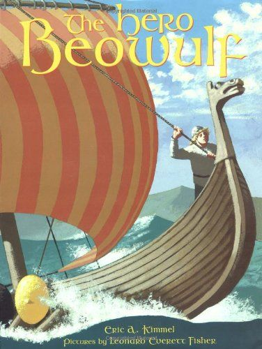

0
стр. з
0
сторінок

завантаження...

Сказание о Беовульфе
Пособие подготовил Андрей Бессонов
Метод чтения Ильи Франка
Сontents
1. How Grendel the Ogre Warred with the Dane Folk2. How Beowulf the Goth Came to Daneland3. Beowulf Tells How He Warred with the Sea Folk4. How Beowulf Overcame Grendel the Ogre5. How the Water Witch Warred with the Dane Folk6. How Beowulf Overcame the Water Witch7. How Beowulf Returned to His Own Land8. How the Fire Dragon Warred with the Goth Folk9. How Beowulf Overcame the Dragon10. Beowulf's Last Rest
CHAPTER I
HOW GRENDEL THE OGRE WARRED WITH THE DANE FOLK
(Как великан Грендель воевал с племенем данов).
Long, long ago (давным, давным давно), there lived in Daneland a king called Hrothgar (в земле данов жил король по имени Хротгар: «называемый»; to call — звать, называть). The old men of his country loved him (старики в его стране любили его) and bowed the knee to him gladly (и преклоняли колено перед ним с охотой), and the young men obeyed him (а молодые люди подчинялись ему) and joyfully did battle for him (и радостно бились за него: «делали битву»; to do — делать). For he was a king mighty in war, and valiant (ибо он был король, могущественный в битве и доблестный). Never foe could stand against him (никогда супостат не мог устоять против него; foe — враг; can — мочь; could — мог), but he overcame them all (но он одолевал их всех; to overcome — одолеть, преодолеть), and took from them much spoil (и брал от них много трофеев; to take — брать).
ago [q`gqV], country [`kAntrI], bow [baV], knee [nJ], obey [q`beI], foe [fqV], against [q`genst]
Long, long ago, there lived in Daneland a king called Hrothgar. The old men of his country loved him and bowed the knee to him gladly, and the young men obeyed him and joyfully did battle for him. For he was a king mighty in war, and valiant. Never foe could stand against him, but he overcame them all, and took from them much spoil.
So this king wrought peace in his land (итак сей король установил мир в своей земле; wrought — устар. прош. вр. от to work — работать, сработать, сделать) and his riches grew great (и его богатства стали превеликими; to grow — становиться, расти). In his palace there were heaped gold in rings and in chains (в его дворце было навалено золото — в кольцах и цепях), armour finely welded (оружие, искусно выкованное), rich jewels which glowed as soft sunlight (роскошные драгоценные камни, которые сверкали, как мягкий солнечный свет).
wrought [rLt], great [greIt], palace [`palIs], armour [`Rmq], sunlight [`sAnlaIt]
So this king wrought peace in his land and his riches grew great. In his palace there were heaped gold in rings and in chains, armour finely welded, rich jewels which glowed as soft sunlight.
Then King Hrothgar looked upon this great treasure and brooded thereon (тогда король Хротгар посмотрел на эти великие сокровища и поразмыслил о них). At last he said (наконец он сказал; to say — сказать), “I will build me a great hall (я построю себе большую палату). It shall be vast and wide (она будет просторна и широка), adorned within and without with gold and ivory (украшена внутри и снаружи золотом и слоновой костью), with gems and carved work (самоцветами и резной работой). The fame of it shall spread over all the earth (молва о ней распространится по всей земле), and men shall sing of it for all time (и люди станут петь о ней на все времена). And when it is built (и когда она будет построена), therein shall I call all my warriors, young and old (туда я созову всех моих воинов, молодых и старых) and divide to them the treasure that I have (и раздам им сокровища, которыми владею; to divide — разделить, распределить). It shall be a hall of joy and feasting (это будет палата радости и пиров: «пирования»).”
treasure [`treZq], build [bIld], adorn [q`dLn], ivory [`aIv(q)rI], warrior [`wPrIq], young [jAN]
Then King Hrothgar looked upon this great treasure and brooded thereon. At last he said, “I will build me a great hall. It shall be vast and wide, adorned within and without with gold and ivory, with gems and carved work. The fame of it shall spread over all the earth, and men shall sing of it for all time. And when it is built, therein shall I call all my warriors, young and old and divide to them the treasure that I have. It shall be a hall of joy and feasting.”
Then King Hrothgar called his workmen (затем король Хротгар созвал своих работников) and gave them commandment to build the hall (и дал им приказ выстроить палату; to give — дать). So they set to work (итак, они принялись за работу; to set — приняться, заняться, установить), and day by day it rose quickly, becoming each day more and more fair (и день за днем она поднималась быстро, становясь с каждым днем все более и более прекрасными; to rise — подниматься, вставать), until at length it was finished (пока наконец она не были окончена; at length — наконец).
commandment [kq`mRndmqnt], fair [feq]
Then King Hrothgar called his workmen and gave them commandment to build the hall. So they set to work, and day by day it rose quickly, becoming each day more and more fair, until at length it was finished.
It stood upon a height, vast and stately (она стояли на холме, просторная и величавая; to stand — стоять), and as it was adorned with the horns of deer (и так как она была украшена рогами оленей), King Hrothgar named it Hart Hall (король Хротгар назвал ее Оленьей палатой).
height [haIt], deer [dIq]
It stood upon a height, vast and stately, and as it was adorned with the horns of deer, King Hrothgar named it Hart Hall.
Then, true to his word and well pleased with the work of his servants (тогда, верный своему слову и довольный работой своих слуг; to please — радовать), King Hrothgar made a great feast (король Хротгар устроил великий пир; to make — делать, устраивать). To it his warriors young and old were called (на него его воины, юные и старые, были призваны), and he divided his treasure, giving to each rings of gold (и он разделил свои сокровища, подарив каждому кольца из золота).
true [trH], servant [`sWv(q)nt]
Then, true to his word and well pleased with the work of his servants, King Hrothgar made a great feast. To it his warriors young and old were called, and he divided his treasure, giving to each rings of gold.
And so in the Hall there was laughter and song and great merriment (и вот, в палате был смех и песни: «песня» и большое веселье). Every evening when the shadows fell (каждый вечер, когда падали = опускались тени; to fall — падать), and the land grew dark without (и земля становилась темной снаружи; to grow — становиться, расти), the knights and warriors gathered in the Hall to feast (рыцари и воины собирались в палате, чтобы пировать). And when the feast was over (а когда пир заканчивался; to be over — быть законченным, закончиться), and the wine-cup passed around the board (и винная чаша обходила кругом стол), and the great fire roared upon the hearth (и большой огонь ревел в очаге), and the dancing flames gleamed and flickered (и пляшущие языки пламени сверкали и мерцали), making strange shadows among the gold and carved work of the walls (делая = отбрасывая странные тени среди золота и резной работы стен), the minstrel took his harp and sang (сказитель брал свою арфу и пел; to take — брать; to sing — петь).
laughter [`lRftq], evening [`JvnIN], without [wI`DaVt], pass [pRs], roar [rL], hearth [hRT]
And so in the Hall there was laughter and song and great merriment. Every evening when the shadows fell, and the land grew dark without, the knights and warriors gathered in the Hall to feast. And when the feast was over, and the wine-cup passed around the board, and the great fire roared upon the hearth, and the dancing flames gleamed and flickered, making strange shadows among the gold and carved work of the walls, the minstrel took his harp and sang.
Then from the many-windowed Hall the light glowed cheerfully (тогда из многооконного чертога свет сиял радостно). Far over the dreary fen and moorland the gleam was shed (далеко над мрачными болотами и пустошами сияние разливалось; to shed — проливать), and the sound of song and harp awoke the deep silence of the night (и звук песни и арфы пробуждал глубокую тишину ночи; to awake — будить).
cheerfully [`CIqfqlI], dreary [`drIqrI], moorland [`mVqlqnd], silence [`saIl(q)ns]
Then from the many-windowed Hall the light glowed cheerfully. Far over the dreary fen and moorland the gleam was shed, and the sound of song and harp awoke the deep silence of the night.
Within the Hall was light and gladness (внутри чертога был свет и веселье), but without there was wrath and hate (но снаружи был гнев и ненависть). For far on the moor there lived a wicked giant named Grendel (ибо далеко на болоте жил злой великан по имени Грендель: «названный Грендель »). Hating all joy and brightness, he haunted the fastness and the fen (ненавидя всю радость и яркость, он жил в глухом месте и на болоте; to hate — ненавидеть), prowling at night to see what evil he might do (бродя ночью, чтобы увидеть, какое зло он мог бы сотворить).
wrath [rPT], wicked [`wIkId], giant [GaIqnt], haunt [hLnt], evil [`Jv(q)l], might [maIt], do [dH]
Within the Hall was light and gladness, but without there was wrath and hate. For far on the moor there lived a wicked giant named Grendel. Hating all joy and brightness, he haunted the fastness and the fen, prowling at night to see what evil he might do.
And now when night by night he heard the minstrel's song (а теперь, когда ночь за ночью = что ни ночь он слышал песнь сказителя; to hear — слышать), and saw the lighted windows gleam through the darkness (и видел, как освещенные окна сияют сквозь тьму: «видел окна сиять»; to see — видеть), it was pain and grief to him (это была мука и горе для него).
hear [hIq], heard [hWd], grief [grJf]
And now when night by night he heard the minstrel’s song, and saw the lighted windows gleam through the darkness, it was pain and grief to him.
Very terrible was this ogre Grendel to look upon (очень ужасен был этот людоед Грендель на вид: «чтобы глядеть на»). Thick black hair hung about his face (густые черные волосы свисали вокруг его лица; to hang — висеть), and his teeth were long and sharp (а его зубы были длинные и острые; to be — быть), like the tusks of an animal (словно клыки зверя). His huge body and great hairy arms had the strength of ten men (его громадное туловище и большие волосатые руки имели силу десяти человек). He wore no armour (он не носил никаких доспехов; to wear — носить), for his skin was tougher than any coat of mail (ибо его кожа была крепче, чем любая кольчуга; coat — покров, верхнее платье, пальто, шерсть; mail = coat of mail — кольчуга) that man or giant might weld (какую человек или великан мог бы выковать). His nails were like steel and sharper than daggers (его когти были как сталь и острее, чем кинжалы), and by his side there hung a great pouch (а на боку у него висел огромный мешок; to hang — висеть) in which he carried off those (в котором он уносил тех; off — прочь; to carry off — нести прочь, уносить) whom he was ready to devour (которых был готов сожрать).
ogre [`qVgq], hair [heq], huge [hjHG], tough [tAf], coat [kqVt], pouch [paVC], ready [`redi], devour [dI`vaVq]
Very terrible was this ogre Grendel to look upon. Thick black hair hung about his face, and his teeth were long and sharp, like the tusks of an animal. His huge body and great hairy arms had the strength of ten men. He wore no armour, for his skin was tougher than any coat of mail that man or giant might weld. His nails were like steel and sharper than daggers, and by his side there hung a great pouch in which he carried off those whom he was ready to devour.
Now day by day this fearsome giant was tortured more and more (и вот день за днем этот ужасный великан был мучим все больше и больше), for to him it was a torture (ибо для него было мукой) to hear the sounds of laughter and of merriment (слышать звуки смеха и веселья). Day by day the music of harp and song of minstrel (день за днем музыка арфы и песнь сказителя) made him more and more mad with jealous hate (делали его все более и более обезумевшим от завистливой злобы; to make — делать; mad — сумасшедший, рассерженный; hate — ненависть).
torture [`tLCq], music [`mjHzIk], jealous [`Gelqs]
Now day by day this fearsome giant was tortured more and more, for to him it was a torture to hear the sounds of laughter and of merriment. Day by day the music of harp and song of minstrel made him more and more mad with jealous hate.
At length he could bear it no longer (наконец он не смог выносить этого больше; can — мочь; could — мог; longer — длиннее, дольше, больше; no longer — больше не). Therefore one night he set out (поэтому однажды ночью: «одной ночью» он вышел из дома; to set out — отправиться, пуститься), and creeping through the darkness came to Hart Hall (и, прокравшись в темноте, подошел к Оленьему чертогу; to come — прийти), where, after the feast and song were done, the warriors slept (где, после того как пир и песнь были окончены: «сделаны», спали воины; to do — делать, заканчивать; to sleep — спать).
bear [beq]
At length he could bear it no longer. Therefore one night he set out, and creeping through the darkness came to Hart Hall, where, after the feast and song were done, the warriors slept.
Peacefully they slept with arms and armour thrown aside (мирно они спали с оружием и доспехами, отброшенными в сторону = отбросив…; to sleep — спать; to throw — бросать), having no fear of any foe (не имея ни страха, ни какого-либо врага). And so with ease the fierce and savage giant seized them with his greedy claws (и поэтому с легкостью лютый и дикий великан схватил их своими жадными когтями; greed — жадность). Speedily he slew thirty of the bravest warriors (проворно он умертвил тридцать из самых отважных воинов; speed — скорость; быстрота; to slay — поразить, умертвить). Then howling with wicked joy (затем, завывая в нечестивой радости; wicked — злой; грешный; нечистый) he carried them off to his dark dwelling (он отнес их прочь в свое темное жилище), there to devour them (чтобы там сожрать их; there — там).
throw [TrqV], thrown [TrqVn], fear [fIq], fierce [fIqs], savage [`sxvIG], seize [sJz], claw [klL], slew [slH]
Peacefully they slept with arms and armour thrown aside, having no fear of any foe. And so with ease the fierce and savage giant seized them with his greedy claws. Speedily he slew thirty of the bravest warriors. Then howling with wicked joy he carried them off to his dark dwelling, there to devour them.
Oh, when morning came (о, когда настало утро; to come — прийти), great was the moaning in Daneland (велико было стенание в земле данов). When the sun arose and shone upon the desolated Hall (когда солнце встало и засияло на опустошенном Чертоге; to arise — встать, подняться; to shine — сиять, светить), and the war-craft of Grendel was made plain (и боевая мощь Гренделя сделалась очевидной; warcraft — боевое мастерство, военное искусство; war — война; to make — сделать), there was weeping (был плач; to weep — плакать). A cry of woe and wailing crept out over the moorland (крик горя и причитания прошел: «выполз» над пустошами; to creep out — выползти: «ползти наружу»), and the woesome sound made glad the heart of the Wicked One (и этот горестный звук веселил: «сделал радостным» сердце Злодея; woe — горе, скорбь; wicked — злой, порочный; one — один; существо, человек).
morning [`mLnIN], moaning [`mqVnIN], shine [SaIn], shone [SPn], woe [wqV], woesome [`wqVsqm]
Oh, when morning came, great was the moaning in Daneland. When the sun arose and shone upon the desolated Hall, and the war-craft of Grendel was made plain, there was weeping. A cry of woe and wailing crept out over the moorland, and the woesome sound made glad the heart of the Wicked One.
But Hrothgar, the mighty, sat upon his throne downcast and sorrowful (но Хротгар могущественный сидел на своем троне, подавленный и печальный; to sit — сидеть; downcast — нисходящий, направленный вниз: «вниз-брошенный»; потупленный /о взоре/: with downcast eyes — потупя взор; грустный, печальный, подавленный; sorrow — горе, печаль, скорбь). He who was strong in war (он, который был силен в войне) wept now for the woe of his thanes (плакал теперь над горем своих танов; to weep — плакать; thane — тан, глава шотландского клана).
throne [TrqVn], war [wL], thane [TeIn]
But Hrothgar, the mighty, sat upon his throne downcast and sorrowful. He who was strong in war wept now for the woe of his thanes.
With eyes dimmed and dark (с глазами потускневшими и темными; dim — тусклый), in grief and rage he looked across the wild wide moorland (в скорби и ярости он смотрел через дикую просторную пустошь), where the track of the monster was marked with blood (где след чудовища был отмечен кровью), and he longed for a champion (и он страстно желал воина-защитника; champion — — /воинствующий/ защитник, поборник, воин).
eye [aI], grief [grJf], blood [blAd], champion [`CxmpIqn]
With eyes dimmed and dark, in grief and rage he looked across the wild wide moorland, where the track of the monster was marked with blood, and he longed for a champion.
But who could fight against an Ogre (но кто мог бы сражаться против Людоеда)? Before the thought the bravest quailed (перед этой мыслью и отважнейший оробел бы; to quail — дрогнуть; струсить, спасовать). Such a fight would be too loathly, too horrible (такой бой был бы слишком отвратителен, слишком ужасен; loath — противный, отталкивающий, омерзительный). It was not to be endured (его нельзя было бы выдержать: «он не был, чтобы быть вынесен»).
fight [faIt], against [q`genst], thought [TLt], quail [kweIl], endure [In`djVq]
But who could fight against an Ogre? Before the thought the bravest quailed. Such a fight would be too loathly, too horrible. It was not to be endured.
When night fell (когда настала: «упала» ночь; to fall — падать) the sorrowing warriors laid themselves down to rest with sighs and tears (скорбящие воины улеглись: «уложили себя», чтобы отдохнуть со вздохами и слезами; to lay /down/ — класть; down — вниз), in the bright hall that once had rung with songs and laughter (в великолепном: «ярком» чертоге, который когда-то звенел от песен и смеха; to ring — звенеть). But the greedy monster was not yet satisfied (но жадное чудовище не было еще удовлетворено; to satisfy — удовлетворять), his work was not yet done (его работа не была еще окончена; to do — делать, оканчивать). Stealthily through the darkening moorland again the Ogre crept (крадучись через темнеющие пустоши снова Людоед продвигался; to creep — ползти, подкрадываться, проползать) until he reached the Hart Hall (пока не достиг Оленьей палаты).
themselves [Dqm`selvz], down [daVn], sigh [saI], tear (слеза) [tIq], laughter [`lRftq], satisfied [`sxtIsfaId], done [dAn]
When night fell the sorrowing warriors laid themselves down to rest with sighs and tears, in the bright hall that once had rung with songs and laughter. But the greedy monster was not yet satisfied, his work was not yet done. Stealthily through the darkening moorland again the Ogre crept until he reached the Hart Hall.
Again he stretched forth his hand (снова он вытянул вперед свою руку), again he seized the bravest of the warriors (снова он схватил отважнейших из воинов), slew and carried them off to his drear dwelling (убил и отнес их прочь в свое мрачное жилище; to slay — умертвить, убить, сразить).
seize [sJz], drear [drIq]
Again he stretched forth his hand, again he seized the bravest of the warriors, slew and carried them off to his drear dwelling.
Then was there wailing and fierce sorrow among the mighty men (затем были стенания и жестокая печаль среди могучих людей). Yet was there none so brave (и все же не было ни одного столь отважного; yet — все же; none — ни один) that he would face and fight the demon foe (который бы встретился лицом к лицу и сразился бы с бесовским супостатом; face — лицо; to face — встретиться лицом к лицу, смело встретить). But each man swore (но каждый человек поклялся; to swear — клясться) that he would not again sleep beneath the roof of Hart Hall (что он не будет снова спать под крышей Оленьей палаты). So when evening fell (так что, когда вечер настал: «пал»; to fall — падать), they departed every man to the dwellings around the palace (они ушли каждый в жилища вокруг дворца), and the fair Hall was left desolate (и прекрасный чертог остался опустошенным).
fierce [fIqs], among [q`mAN], none [nAn], demon [`dJmqn], beneath [bI`nJT], desolate [`des(q)lqt]
Then was there wailing and fierce sorrow among the mighty men. Yet was there none so brave that he would face and fight the demon foe. But each man swore that he would not again sleep beneath the roof of Hart Hall. So when evening fell, they departed every man to the dwellings around the palace, and the fair Hall was left desolate.
Thus Grendel, single handed (таким образом Грендель в одиночку: «одноручно»), warred against the Dane folk (воевал против племени данов) until the great Hall, the wonder of men, was forsaken and empty (пока великий чертог, диво людям, не стал покинут и пуст; to forsake — оставлять, покидать).
wonder [`wAndq]
Thus Grendel, single handed, warred against the Dane folk until the great Hall, the wonder of men, was forsaken and empty.
For twelve long years it stood thus (двенадцать долгих лет он стоял так; to stand — стоять), no man daring, except in the light of day, to enter it (и ни один человек не осмеливался, кроме как при свете дня, входить в него: «не осмеливаясь»). For after the shadows of evening fell (ибо после того как ниспадали тени вечера; to fall — падать), Grendel was master there (Грендель был господином там). And in that stately Hall, when night was darkest (и в этом величественном чертоге, когда ночь была темней всего), he held his horrid feasts (он устраивал свои ужасные пиры; to hold — держать; проводить, устраивать). Only near to the throne (только близ трона), the carved Gift-seat or throne of the Dane folk (резного Трона даров: «сиденья» или трона датского племени; gift — дар, подарок), where Hrothgar the king used to sit (где Хротгар-король сиживал когда-то; used to do something — когда-то делал что-то), and from whence he dispensed gifts to his people (и откуда он раздавал дары людям), there only he dared not go (— туда только он не смел идти). Something sacred and pure was there (что-то священное и чистое было там), before which the wicked Ogre trembled (перед чем злой Людоед дрожал).
except [Ik`sept], master [`mRstq], gift [gIft], used to (когда-то делал что-то) [`jHstq], pure [pjVq]
For twelve long years it stood thus, no man daring, except in the light of day, to enter it. For after the shadows of evening fell, Grendel was master there. And in that stately Hall, when night was darkest, he held his horrid feasts. Only near to the throne, the carved Gift-seat or throne of the Dane folk, where Hrothgar the king used to sit, and from whence he dispensed gifts to his people, there only he dared not go. Something sacred and pure was there, before which the wicked Ogre trembled.
Thus for twelve long years Grendel warred against Hrothgar and the Dane folk (так двенадцать долгих лет Грендель воевал против Хротгара и племени данов). He prowled through the misty moorland (он рыскал по туманным пустошам; through — через, сквозь), lay in wait in dark places (лежал в засаде в темных местах; to lie — лежать), slaying young and old (убивая молодых и старых). Many were the grisly deeds he did (многочисленны были жуткие деяния, которые он совершал; to do — делать, совершать), many the foul crimes (многочисленны подлые преступления). And the mighty warriors, strong of heart against a mortal foe (и могучие воины, сильные сердцем перед смертным врагом = человеком), were powerless against him (были бессильны против него; power — сила, мощь; могущество).
prowl [praVl], through [TrH], grisly [`grIzlI], foul [faVl], powerless [`paVqlqs]
Thus for twelve long years Grendel warred against Hrothgar and the Dane folk. He prowled through the misty moorland, lay in wait in dark places, slaying young and old. Many were the grisly deeds he did, many the foul crimes. And the mighty warriors, strong of heart against a mortal foe, were powerless against him.
Downcast and sorrowful of heart (удрученный и печальный сердцем) Hrothgar sat among his counsellors (Хротгар сидел среди своих советников; to sit — сидеть; counsel — совет; to counsel — советовать). None among them knew (ни один среди них не знал; to know — знать) how to give him advice or comfort (как дать ему совет или утешение). None knew how to deliver his land from the Evil One (ни один не знал, как избавить его землю от Злодея; evil — злой; one — один; существо, человек).
advice [qd`vaIs], comfort [`kAmfqt], know [nqV], knew [njH], deliver [dI`lIvq]
Downcast and sorrowful of heart Hrothgar sat among his counsellors. None among them knew how to give him advice or comfort. None knew how to deliver his land from the Evil One.
Then the minstrels made mournful songs (тогда сказители сложили скорбные песни; to make — делать; to mourn — скорбеть, оплакивать), and far and wide they sang (и повсюду: «далеко и широко» они пели; to sing — петь) of how Grendel ever warred with Hrothgar (о том, как Грендель все воевал с Хротгаром). They sang of how year by year there was battle and wrath (они пели о том, как год за годом была битва и месть; wrath — гнев, ярость, месть, воздаяние) between the King and the Ogre of evil fame (между благородным Королем и Людоедом со злой славой).
wrath [rPT], evil [`Jv(q)l]
Then the minstrels made mournful songs, and far and wide they sang of how Grendel ever warred with Hrothgar. They sang of how year by year there was battle and wrath between the noble King and the Ogre of evil fame.
CHAPTER II
HOW BEOWULF THE GOTH CAME TO DANELAND
(Как гаут Беовульф пришел в Землю данов).
And now it came to pass (и теперь случилось; to come to pass — случиться, произойти: «прийти, чтобы пройти») that, across the sea in far Gothland (что за морем, в далекой земле гаутов), the songs of Grendel and his wrath were sung (песни о Гренделе и его ярости пелись: «были петы»; to sing — петь), until to Beowulf the Goth the tale of woe was carried (пока до Беовульфа-гаута эта горестная повесть: «повесть горя» не была донесена). And Beowulf, when he heard of Grendel’s deeds (и Беовульф, когда он услышал о деяниях Гренделя; to hear — слышать), cried that he would go across the waves to Hrothgar, the brave king (вскричал, что он пойдет за волны = за море к Хротгару, храброму королю), since he had need of men to help him (раз у него была нужда в людях, которые бы помогли ему: «чтобы помочь ему»).
Beowulf [`beIqwVlf], since [sIns]
And now it came to pass that, across the sea in far Gothland, the songs of Grendel and his wrath were sung, until to Beowulf the Goth the tale of woe was carried. And Beowulf, when he heard of Grendel's deeds, cried that he would go across the waves to Hrothgar, the brave king, since he had need of men to help him.
Now Beowulf was very strong in war (ну а Беовульф был очень силен в битве), mighty among men (могущественный среди людей). Of all the nobles of the Goths (из всех рыцарей гаутов; noble — дворянин; благородный) there was none so great as he (не было ни одного столь великого, сколь он). Much beloved, too, was he of Hygelac, King of the Goths (много любим к тому же был он Хигелаком, королем гаутов = его любил…), for they were kinsmen and good comrades (ибо они были родичи и добрые товарищи). And because of the love they bore him (и из-за любви, которую они питали: «несли» к нему; to bear — нести), many prayed him to bide peacefully at home (многие молили его остаться мирно дома), but others, knowing his prowess, bade him go forth (но другие, зная его доблесть, просили его отправиться в путь; to go forth — выйти, отправиться: «пойти наружу»).
comrade [`kPmreId], because [bI`kPz], prowess [`praVIs]
Now Beowulf was very strong in war, mighty among men. Of all the nobles of the Goths there was none so great as he. Much beloved, too, was he of Hygelac, King of the Goths, for they were kinsmen and good comrades. And because of the love they bore him, many prayed him to bide peacefully at home, but others, knowing his prowess, bade him go forth.
Beowulf was eager for the contest (Беовульф желал поединка; eager — желающий, стремящийся, охочий до чего-либо), so taking with him fifteen warriors and good comrades (так что, взяв с собой пятнадцать воинов и добрых товарищей), he stepped into a ship (он ступил на корабль) and bade the captain set sail for Daneland (и приказал капитану отправиться в землю данов; to bid — приказывать; to set sail — поставить парус, отправиться, пуститься в плавание).
captain [`kxptIn]
Beowulf was eager for the contest, so taking with him fifteen warriors and good comrades, he stepped into a ship and bade the captain set sail for Daneland.
Then like a bird wind-driven upon the waves (тогда, словно птица, влекомый ветром по волнам; to drive — влечь, вести), the foam-necked ship sped forth (пенно-шеий корабль устремился вперед; neck — шея; to speed — стремиться, мчаться). For two days the warriors fared on over the blue sea (два дня воины шли по синему морю; to fare — путешествовать, ехать, идти), until they came again to Daneland (пока не вышли снова на землю данов; to come — прийти) and anchored beneath the steep mountains of that far shore (и бросили якорь под крутыми горами того далекого берега; to anchor — бросить якорь; anchor — якорь).
wind (ветер) [wInd], foam [fqVm], fare [feq], anchor [`xNkq], mountain [`maVntIn]
Then like a bird wind-driven upon the waves, the foam-necked ship sped forth. For two days the warriors fared on over the blue sea, until they came again to Daneland and anchored beneath the steep mountains of that far shore.
There, lightly springing to shore (там, легко спрыгнув на берег), the warriors gave thanks to the sea-god (воины вознесли: «дали» благодарности морскому богу) that the voyage had been so short and easy for them (за то что путешествие было таким коротким и легким для них).
spring [sprIN]
There, lightly springing to shore, the warriors gave thanks to the sea-god that the voyage had been so short and easy for them.
But upon the heights above them (но на холмах над ними) stood the warden of the shore (стоял страж берега; to stand — стоять). His duty it was to guard the sea-cliffs (его долгом было охранять утесы; cliff — утес; sea-cliff — крутой морской берег) and mark well that no foe landed unaware (и хорошенько смотреть: «замечать», чтобы никакой супостат не высадился на берег в тайне; to land — высадиться на землю; приземлиться; unaware — не знающий; тайком; aware — знающий, осведомленный). Now as the warriors sprang to shore (теперь, когда воины спрыгнули на берег; to spring — прыгать), he saw the sun gleam upon sword and shield and coat of mail (он увидел, как солнце сияет на мечах и щитах и кольчугах: «на мече и щите и кольчуге»; to see — видеть; to gleam — сиять).
warden [`wLd(q)n], duty [`djHti], guard [gRd], unaware [Anq`weq], sword [sLd], shield [SJld]
But upon the heights above them stood the warden of the shore. His duty it was to guard the sea-cliffs and mark well that no foe landed unaware. Now as the warriors sprang to shore, he saw the sun gleam upon sword and shield and coat of mail.
"What manner of men are these (какого сорта эти люди: «какого сорта людей есть эти»)?" he asked himself (спрашивал он себя). And mounting upon his horse (и, взобравшись на своего коня) he rode towards them (он поскакал к ним; to ride — ездить верхом, скакать).
these [DJz], towards [tq`wLdz]
"What manner of men are these?" he asked himself. And mounting upon his horse he rode towards them.
Waving his huge spear aloft (высоко потрясая своим огромным копьем; to wave — махать, размахивать; aloft — вверху, вверх), he cried, as he rode onward (он закричал, пока скакал вперед; to ride — ездить верхом), "What men are you (что вы за люди) who come thus clad in mail-coats (— приходящие, так одетые в кольчуги), thus armed with sword and spear (так вооруженные мечом и копьем)? Whence comes this proud vessel over the waves (откуда приходит это гордое судно по волнам)? Long have I kept watch and ward upon this shore (долго я нес вахту и стоял на страже на этом берегу; to keep watch — нести вахту: «держать наблюдение»; to keep ward — стоять на страже: «держать охрану») that no foe might come unaware to Daneland (чтобы ни один супостат не мог прийти тайно в землю данов), yet never have I seen shield-bearing men come openly as you (но никогда я не видел, чтобы люди со щитами: «несущие щиты» приходили открыто, как вы; to see — видеть). And never have I seen more noble warrior than he (и никогда не видел я более благородного воина, чем тот: «он») who seems your leader (который кажется вашим вождем). Nay, such splendour of armour (нет, такого великолепия доспехов), such beauty and grace have I not seen (такой красоты и изящества/ловкости я не видал). But, strangers, travellers from the sea (но, незнакомцы, странники из-за моря; to travel — путешествовать), I must know whence you come (я должен знать, откуда вы «приходите») before you go further (прежде чем вы пройдете дальше). You may not pass else (вы не можете пройти иначе), lest you be spies and enemies to Daneland (— как бы вы не оказались шпионами и врагами земле данов; lest — как бы не, чтобы не). It were well that you told me speedily (было бы хорошо, чтобы вы сказали мне скорей; to tell — сказать)."
spear [spIq], onward [`Pnwqd], proud [praVd], watch [wPC], beauty [`bjHtI], stranger [`streInGq], further [`fWDq], spy [spaI], enemy [`enqmI]
Waving his huge spear aloft, he cried, as he rode onward, “What men are you who come thus clad in mail-coats, thus armed with sword and spear? Whence comes this proud vessel over the waves? Long have I kept watch and ward upon this shore that no foe might come unaware to Daneland, yet never have I seen shield-bearing men come openly as you. And never have I seen more noble warrior than he who seems your leader. Nay, such splendour of armour, such beauty and grace have I not seen. But, strangers, travellers from the sea, I must know whence you come before you go further. You may not pass else, lest you be spies and enemies to Daneland. It were well that you told me speedily.”
Then Beowulf answered him (тогда Беовульф ответил ему), “We are folk of the Goths, thanes of King Hygelac (мы — племя гаутов, таны короля Хигелака). In friendly guise we come to seek your lord (в дружеском обличьи мы пришли: «приходим», чтобы разыскать = повидать твоего господина), King Hrothgar, the mighty chieftain (короля Хротгара, могучего вождя). We have a goodly message to the famed lord of the Danes (у нас доброжелательное послание прославленному господину данов). There is no cause to be secret (нет причины быть скрытными). You know if it is true or no (ты знаешь, правдиво это или нет), but we indeed have heard (но мы действительно слыхали; to hear — слышать) that among you Danes there is a great and wily foe (что среди вас, данов, есть большой и коварный враг), a loather of valour (ненавистник доблести), who prowles terribly in dark nights (который мародерствует ужасно темными ночами), making great slaughter and causing much woe (совершая великое убийство и причиняя много горя). Therefore have I come (поэтому пришел я; to come — прийти), for perchance I may be of succour to the noble King Hrothgar in his need (ибо, возможно, я могу быть полезен: «быть выручкой» благородному королю Хротгару в его нужде).”
answer [`Rnsq], folk [fqVk], chieftain [`CJft(q)n], message [`mesIG], cause [kLz], secret [`sJkrqt], valour [`vxlq], slaughter [`slLtq], succour [`sAkq]
Then Beowulf answered him, “We are folk of the Goths, thanes of King Hygelac. In friendly guise we come to seek your lord, King Hrothgar, the mighty chieftain. We have a goodly message to the famed lord of the Danes. There is no cause to be secret. You know if it is true or no, but we indeed have heard that among you Danes there is a great and wily foe, a loather of valour, who prowles terribly in dark nights, making great slaughter and causing much woe. Therefore have I come, for perchance I may be of succour to the noble King Hrothgar in his need.”
Fearless and bold (бесстрашный и отважный), facing the band of warlike men (встречая лицом к лицу отряд военных людей), the warden sat upon his horse (страж сидел на своем коне; to sit — сидеть), and when Beowulf had ceased speaking, he answered him (и когда Беовульф закончил говорить, он ответил ему; to cease — прекращать).
cease [sJs]
Fearless and bold, facing the band of warlike men, the warden sat upon his horse, and when Beowulf had ceased speaking, he answered him.
«You come as friends (вы пришли: «приходите» как друзья), O bearers of weapons, O wearers of war garments (о, носители оружия, о, носители боевых одеяний; to bear — нести /объект…/; to wear — носить /одежду…/). Follow me then (тогда следуйте за мной), and I will lead you on (и я покажу вам дорогу: «поведу вас дальше»). I will also give commandment to my men (я также отдам приказ моим людям) that they guard your ship where it lies by the shore (чтобы они охраняли ваш корабль, где он лежит у берега) until you come again (пока вы не вернетесь: «не придете снова»).»
weapon [`wepqn], bear [beq], wear [weq], lie [laI]
“You come as friends, O bearers of weapons, O wearers of war garments. Follow me then, and I will lead you on. I will also give commandment to my men that they guard your ship where it lies by the shore until you come again.”
So following the warden they marched forward (итак, следуя за стражем, они зашагали вперед). Eager they were for battle (жаждали они битвы: «жаждущими были»), eager to see the far-famed Hart Hall (жаждали: «жаждущие» увидеть прославленнуюОленью палату). And as they marched (и пока они шагали), their gold-decked helmets (их украшенные золотом шлемы), their steel mail-coats (их стальные кольчуги), their jewelled sword-hilts (их эфесы мечей с драгоценными камнями; jewel — драгоценный камень), flashed in the sunlight (сверкали в солнечном свете), and the clank and clash of weapons and armour filled the air (и бряцание и лязг оружия и доспехов наполняли воздух).
forward [`fLwqd], jewel [`GHql]
So following the warden they marched forward. Eager they were for battle, eager to see the far-famed Hart Hall. And as they marched, their gold-decked helmets, their steel mail-coats, their jewelled sword-hilts, flashed in the sunlight, and the clank and clash of weapons and armour filled the air.
On and on they pressed quickly (дальше и дальше спешили они быстро; to press on — поторапливаться), until the warden drew rein (пока страж не натянул поводья; to draw — тянуть, тащить). "There," he said, pointing onward (там, — сказал он, указывая вперед; to say — сказать), "there lies the great Hart Hall (там находится великая Оленья палата; to lie — лежать, находиться). No longer have you need of me (у вас долее нет нужды во мне: «не долее имеете вы нужду во мне»). The way you cannot miss (с пути вы не можете сбиться). As for me, I will back to the sea (что до меня, я вернусь к морю) to keep watch against a coming foe (чтобы держать вахту против приходящего врага = следить за приходящим неприятелем)."
draw [drL], drew [drH]
On and on they pressed quickly, until the warden drew rein. "There," he said, pointing onward, "there lies the great Hart Hall. No longer have you need of me. The way you cannot miss. As for me, I will back to the sea to keep watch against a coming foe."
Then wheeling his horse he galloped swiftly away (затем, развернув своего коня, он ускакал быстро прочь), while the Goths marched onward until they reached the Hart Hall (а гауты шагали вперед, пока не добрались до Оленьих палат). There, weary of the long way that they had come (там, усталые от долгого пути, которым они пришли; to come — прийти), they laid down their shields (они положили свои щиты; to lay down — положить «вниз»), and leaning their spears against the walls (и, прислонив свои копья к стенам), sat upon the bench before the great door (сели на скамью перед большими воротами: «дверью»; to sit — садиться; сидеть).
gallop [`gxlqp]
Then wheeling his horse he galloped swiftly away, while the Goths marched onward until they reached the Hart Hall. There, weary of the long way that they had come, they laid down their shields, and leaning their spears against the walls, sat upon the bench before the great door.
And as they sat there resting (и пока они сидели там, отдыхая), there came to them a proud warrior (подошел к ним гордый воин). "Whence come you with these great shields," he asked (откуда пришли: «приходите» вы с этими большими щитами), "whence with these grey shirts of mail (откуда — с этими серыми кольчугами; shirt — рубашка; mail — кольчуга), these jewelled helmets and mighty spears (с этими шлемами в драгоценных камнях и громадными копьями; jewel — драгоценный камень)? I am Hrothgar's messenger and servant (я — посланник и слуга Хротгара), I who ask (я, который спрашиваю). Never saw I prouder strangers (никогда не видел я более гордых чужестранцев; to see — видеть), never more seemly men (никогда — более видных мужей; man — человек, мужчина, муж). I believe it is not from some foe you flee (я полагаю, это не от какого-то врага вы бежите) in fear and trouble (в страхе и волнении). Rather in pride and daring it would seem you come to visit Hrothgar (скорее в гордости и отваге, казалось бы = кажется, вы приходите посетить Хротгара; to dare — отваживаться, осмеливаться, сметь; пренебрегать опасностью, рисковать; бросать вызов кому-л.)."
messenger [`mesInGq], believe [bI`lJv], trouble [trAbl], daring [`deqrIN]
And as they sat there resting, there came to them a proud warrior. “Whence come you with these great shields,” he asked, “whence with these grey shirts of mail, these jewelled helmets and mighty spears? I am Hrothgar’s messenger and servant, I who ask. Never saw I prouder strangers, never more seemly men. I believe it is not from some foe you flee in fear and trouble. Rather in pride and daring it would seem you come to visit Hrothgar.”
Then answered Beowulf (тогда ответил Беовульф). «My name is Beowulf, and we are Hygelac's thanes (мое имя — Беовульф, и мы — таны Хигелака). To your lord, the mighty Hrothgar, we will tell our errand (твоему господину, могучему Хротгару, мы расскажем наше поручение = цель нашего появления; errand — поручение, задание) if he will deign that we do greet him (если он удостоит = позволит, чтобы мы поприветствовали его).»
errand [`erqnd], deign [deIn]
Then answered Beowulf. “My name is Beowulf, and we are Hygelac’s thanes. To your lord, the mighty Hrothgar, we will tell our errand if he will deign that we do greet him.”
The warrior bowed low (воин поклонился низко), for well he saw that Beowulf was a mighty prince (ибо хорошо он увидел, что Беовульф — могучий князь).
«I will ask my lord the King,» he said (я спрошу моего господина, короля, — сказал он), «if it shall be so (и если так будет = если он соизволит вас принять) you may come to him (вы можете пройти к нему). And to you quickly will I bear his answer (и вам быстро принесу я его ответ).”
bow (кланяться, согнуть) [baV], prince [prIns]
The warrior bowed low, for well he saw that Beowulf was a mighty prince.
“I will ask my lord the King,” he said, “if it shall be so you may come to him. And to you quickly will I bear his answer.”
So saying he departed (сказав так, он ушел), and came to Hrothgar where he sat amongst his earls (и пришел к Хротгару, где он сидел в окружении: «среди» своих эрлов[1]; to sit — сидеть). The king was now old and grey-haired (король был теперь стар и седоволос; grey — серый), and sat amid his wise men bowed with grief (и сидел среди своих мудрых мужей, согбенный от скорби), for there was none among them mighty enough (ибо не было ни одного среди них достаточно могучего; enough — достаточно) to free his land from the Ogre (чтобы освободить его землю от Людоеда).
depart [dI`pRt], earl [Wl], old [qVld], enough [I`nAf]
So saying he departed, and came to Hrothgar where he sat amongst his earls. The king was now old and grey-haired, and sat amid his wise men bowed with grief, for there was none among them mighty enough to free his land from the Ogre.
«My lord,» the warrior said, and knelt before the king (милорд, — сказал воин и преклонил колено перед королем; to kneel — стать на колено/колени), «from far beyond the sea strange knights have come (издалека, из-за моря: «из далеко за морем» прибыли чужестранные рыцари). They pray that they may speak with you (они просят, чтобы они могли говорить с тобой). These sons of battle name their leader Beowulf (эти сыны битвы называют своего вождя Беовульфом). Refuse them not, O king (не отказывай им, о, король), but give them kindly answer (но дай им добрый ответ). For by the splendour of their arms (ибо по великолепию их оружия) I deem them worthy of much honour (я полагаю их достойными большой чести). The prince who sends such warriors hither (властитель, который посылает таких воинов сюда; hither — поэт., устар.: сюда) must be great indeed (должен быть поистине велик; indeed — в самом деле).”
knelt [nelt], beyond [bI`Pnd], knight [naIt], refuse [rI`fjHz], kindly [`kaIndlI], honour [`Pnq], hither [`hIDq]
"My lord," the warrior said, and knelt before the king, "from far beyond the sea strange knights have come. They pray that they may speak with you. These sons of battle name their leader Beowulf. Refuse them not, O king, but give them kindly answer. For by the splendour of their arms I deem them worthy of much honour. The prince who sends such warriors hither must be great indeed."
"Beowulf!" cried Hrothgar (Беовульф! — вскричал Хротгар). "I knew him when he was yet a lad (я знал его, когда он был еще парнишкой; to know — знать). His father and his mother have I known (его отца и мать знал я). Truly he has sought a friend (поистине он разыскал друга; to seek — искать, разыскать). And I have heard of him that he is much renowned in war (и я слыхал о нем, что он «много» прославлен в битве; to hear — слышать), and that he has the strength of thirty men (и что он имеет силу тридцати человек) in the grip of his hand (в руках: «в сжатии/хватке его руки»). I pray Heaven he has been sent to free us from the horror of Grendel (я молю Небо, чтобы он был послан освободить нас от ужаса Гренделя; to be — быть; to send — посылать). Haste you, bid him enter (поторопи себя = скорее, попроси его войти), bid them all to come (проси их всех прийти). I would see the whole friendly band together (я желал бы увидеть весь дружественный отряд вместе; would — устар.: желал бы; whole — целый). Say to them that they are welcome to the land of Danes (скажи им, что они желанны = их рады видеть в земле данов; welcome — добро пожаловать; welcome /прилагательное/ — желанный, кого рады видеть)."
father [`fRDq], mother [`mADq], known [nqVn], sought [sLt], haste [heIst], whole [hqVl], friendly [`frendlI]
“Beowulf!” cried Hrothgar. “I knew him when he was yet a lad. His father and his mother have I known. Truly he has sought a friend. And I have heard of him that he is much renowned in war, and that he has the strength of thirty men in the grip of his hand. I pray Heaven he has been sent to free us from the horror of Grendel. Haste you, bid him enter, bid them all to come. I would see the whole friendly band together. Say to them that they are welcome to the land of Danes.”
The warrior bowed low (воин низко поклонился). Then once more going to the door of the Hall (затем, снова пойдя = вернувшись к вратам чертога), he stood before Beowulf and his knights (он стал перед Беовульфом и его рыцарями; to stand — стоять).
low [lqV], once [wAns]
The warrior bowed low. Then once more going to the door of the Hall, he stood before Beowulf and his knights.
«My lord,» he said, «the king bids me to say to you (милорд, — сказал он, — король приказывает мне сказать тебе) that he knows already of your rank and fame (что он знает уже о твоем могуществе и славе; rank — ранг, высокое общественное положение). He says to you brave-hearted men from over the sea (он говорит вам, отважносердые мужи из-за моря) that you are all welcome to him (что вас всех зовут к нему: «что вы все желанны в гости к нему»; welcome — желанный, кого хотят видеть; добро пожаловать). Now may you go in to speak with him (теперь можете вы войти, чтобы говорить с ним), wearing your war trappings and with your helmets upon your heads (нося ваше военное облачение и со шлемами на головах). But leave your shields, your spears, and deadly swords without here (но оставьте ваши щиты, ваши копья и смертоносные мечи снаружи — здесь), until the talk is done (пока разговор не будет завершен; to do — сделать, прикончить, завершить).»
heart [hRt], head [hed], until [An`tIl], talk [tLk]
"My lord," he said, "the king bids me to say to you that he knows already of your rank and fame. He says to you brave-hearted men from over the sea that you are all welcome to him. Now may you go in to speak with him, wearing your war trappings and with your helmets upon your heads. But leave your shields, your spears, and deadly swords without here, until the talk is done."
Then Beowulf and his warriors rose (тогда Беовульф и его воины встали; to rise — встать). Some went with him to the Hall (некоторые пошли с ним в палату; to go — идти), others stayed without to guard the shields and weapons (другие остались снаружи, чтобы сторожить щиты и оружие).
Then Beowulf and his warriors rose. Some went with him to the Hall, others stayed without to guard the shields and weapons.
Guided by the Danish warrior the knights marched right through the great Hart Hall (ведомые воином данов, рыцари прошли прямо через великую Оленью палату), until they stood before the Gift-seat (пока не встали перед Троном даров; to stand — стоять) where sat the aged king (где сидел постаревший король; to sit — сидеть).
guide [gaId], right [raIt]
Guided by the Danish warrior the knights marched right through the great Hart Hall, until they stood before the Gift-seat where sat the aged king.
«Hail to you, Hrothgar,» cried Beowulf (привет тебе, Хротгар, — вскричал Беовульф). “I am Hygelac’s friend and kinsman (я — друг и родич Хигелака). Many fair deeds have I done (многие изрядные деяния совершил я; to do — сделать, совершить) though yet I am young (хотя еще я юн). And to me in far Gothland the tales of Grendel’s grim warfare were told (и мне в далекой гаутской земле рассказы о мрачной войне Гренделя /с вами/ были поведаны; to tell — рассказать). Sea-faring men told that the great Hall so fair and well-built (моряки рассказывали, что великий чертог, такой прекрасный и ладно построенный; to tell — рассказывать; to build — строить) does stand forsaken and empty as soon as the shades of evening fall (действительно стоит заброшенный и пустой, как только падают тени вечера; forsaken — покинутый; to forsake — покидать; as soon as — как только: «так скоро как»), because of the prowlings of that fell giant (из-за разорений этого свирепого великана; to prowl — идти крадучись; мародерствовать; fell — лютый, свирепый, страшный, ужасный).
hail [heIl], though [DqV], young [jAN], giant [GaIqnt]
“Hail to you, Hrothgar,” cried Beowulf. “I am Hygelac’s friend and kinsman. Many fair deeds have I done though yet I am young. And to me in far Gothland the tales of Grendel’s grim warfare were told. Sea-faring men told that the great Hall so fair and well-built does stand forsaken and empty as soon as the shades of evening fall, because of the prowlings of that fell giant.
«Then as we heard such tales (тогда, так как мы слышали такие рассказы; to hear — слышать) did my friends urge me to come to you (понуждали меня мои друзья прийти к вам) because they knew my might (потому что они знали мою мощь; to know — знать). They had themselves seen (они сами видели; to see — видеть) how I laid low my foes (как я повалил: «одолел» моих врагов; to lay low — повалить: «положить низко»). Five monsters I bound (пятерых чудищ я связал; to bind — вязать), thus humbling a giant brood (так посрамив великанское племя). Sea-monsters I slew in the waves at night-time (морских чудовищ я убил в волнах ночью; to slay — убивать). Many a wrong have I avenged (за многие неправды я отомстил; wrong — неправда; many a wrong = many wrongs), fiercely grinding the oppressors (сурово сокрушая угнетателей).
urge [WG], wrong [rPN], avenge [q`venG], grind [graInd], oppressor [q`presq]
"Then as we heard such tales did my friends urge me to come to you because they knew my might. They had themselves seen how I laid low my foes. Five monsters I bound, thus humbling a giant brood. Sea-monsters I slew in the waves at night-time. Many a wrong have I avenged, fiercely grinding the oppressors.
"And now will I fight against Grendel (а теперь буду я биться против Гренделя). Alone against the Ogre will I wage war (один против Людоеда поведу я войну). Therefore one boon I crave of you, noble prince (поэтому одну милость я прошу от тебя, благородный властелин). Refuse it not (не отказывай в ней), for thereto have I come from very far (ибо с этой целью пришел я очень издалека; to come — прийти). I pray you that I alone (я прошу тебя, чтобы я один), having with me only my own earls and comrades (имея с собой только моих собственных эрлов = предводителей и товарищей; earl — эрл, граф), may cleanse Hart Hall (смог очистить Оленью палату).
"And now will I fight against Grendel. Alone against the Ogre will I wage war. Therefore one boon I crave of you, noble prince. Refuse it not, for thereto have I come from very far. I pray you that I alone, having with me only my own earls and comrades, may cleanse Hart Hall.
"It has been told to me (мне было сказано; to tell — сказать) that Grendel recks not of weapons (что Грендель не обращает внимание на оружие), for his hide is as of steel armour (ибо его шкура — словно из стальной брони). Therefore will I bear neither sword nor shield (поэтому не понесу я ни меча, ни щита; neither… nor — ни.., ни). But I will grapple with the fiend with my hands alone (но я схвачусь со злодеем лишь моими руками; fiend — дьявол; демон; злодей, изверг; alone — один, одинокий), and foe to foe we will fight for victory (и — враг с врагом — мы будем биться за победу). And, unto whomsoever it seems good to the Lord of Life (и кому бы ни показалось благим Господину Жизни), unto him shall the victory be given (тому будет дана победа; to give — давать).
neither [`naIDq] или [`nJDq], whomsoever [hHmsqV`evq], given [`gIv(q)n]
“It has been told to me that Grendel recks not of weapons, for his hide is as of steel armour. Therefore will I bear neither sword nor shield. But I will grapple with the fiend with my hands alone, and foe to foe we will fight for victory. And, unto whomsoever it seems good to the Lord of Life, unto him shall the victory be given.
«If Grendel wins (если Грендель победит), then will he fearlessly devour the people of the Goths, my dear comrades, my noble earls (тогда он бесстрашно пожрет гаутских людей, моих дорогих товарищей, моих благородных эрлов), even as aforetime he has devoured your warriors (прямо как прежде он пожирал твоих воинов). Then will you not need to cover me with a mound (тогда не будет тебе нужно покрывать меня курганом), for the lone moor will be my burial-place (ибо одинокое болото будет местом моего погребения; burial — погребение; to bury — погребать; place — место). Where you track the footsteps of the Ogre stained with gore (куда вы проследите шаги Людоеда, покрытые запекшейся кровью), there will he with greed devour my thanes and me (там он с жадностью пожрет моих танов и меня).
devour [dI`vaVq], cover [`kAvq], mound [maVnd], burial [`berIql]
“If Grendel wins, then will he fearlessly devour the people of the Goths, my dear comrades, my noble earls, even as aforetime he has devoured your warriors. Then will you not need to cover me with a mound, for the lone moor will be my burial-place. Where you track the footsteps of the Ogre stained with gore, there will he with greed devour my thanes and me.
“But if I die (но если я погибну), then send back to Hygelac my coat of mail (тогда отошлите назад Хигелаку мою кольчугу), for in all the world there is no other like to it (ибо во всем мире нет другой, похожей на нее). This is all I ask (это все, чего я прошу).”
Beowulf was silent (Беовульф замолчал: «был молчалив»), and Hrothgar the aged king answered him (и Хротгар, старый король, ответил ему).
silent [`saIlqnt]
“But if I die, then send back to Hygelac my coat of mail, for in all the world there is no other like to it. This is all I ask.”
Beowulf was silent, and Hrothgar the aged king answered him.
“O friend Beowulf,” he said (о, друг Беовульф, — сказал он), “you have sought us out to help us (ты разыскал нас, чтобы помочь нам; to seek out — разыскать). Yet to me it is pain and sorrow to tell to any man (а для меня боль и печаль — рассказать любому «человеку») what shame, what sudden mischiefs, Grendel in his wrath has done to me (какой позор, какие неожиданные беды Грендель в своей ярости причинил мне; sudden — внезапный; mischief — вред; повреждение; убытки, ущерб; to do — сделать, причинить). See! my palace-troop, my war-band has grown small (смотри! мои дворцовый отряд, мой военный отряд сделался малочисленным; to grow — становиться, расти). Grendel has done this (Грендель сделал это = это дело рук Гренделя). In his prowlings he has carried off my men (в своих бесчинствах он унес моих людей) so that my warriors are few (так что мои воины малочисленны).
mischief [`mIsCIf], grow(n) [grqV(n)], few [fjH]
“O friend Beowulf,” he said, “you have sought us out to help us. Yet to me it is pain and sorrow to tell to any man what shame, what sudden mischiefs, Grendel in his wrath has done to me. See! my palace-troop, my war-band has grown small. Grendel has done this. In his prowlings he has carried off my men so that my warriors are few.
«Often when the wine was red in the cup (часто, когда вино бывало красным в чаше) my knights did swear that they would await the coming of Grendel (мои рыцари клялись, что они будут дожидаться прихода Гренделя), to meet him with sword-thrust (чтобы встретить его ударом меча; sword — меч; thrust — выпад, удар; укол, колющий удар; to thrust — колоть, пронзать). So when night fell they abode in the Hall (так что, когда опускалась: «падала» ночь, они оставались в чертоге; to fall — падать; to abide — пребывать). But in the morning, when day dawned (но утром, когда день рассветал), my fair house was red with blood (мой прекрасный дом был красным от крови). And I must mourn the death of yet more gallant knights (и я должен оплакивать смерть еще /нескольких/ доблестных рыцарей; to mourn — скорбеть, оплакивать; yet — еще; more — больше, еще), must have fewer thanes to own my rule (должен иметь меньше танов, которые признают мое владычество: «чтобы признавать»).
«But sit now to the feast (но садись теперь за пир = за стол пировать) and eat with gladness (и ешь с веселостью), sure that victory will come to you (уверенный, что победа придет к тебе).»
often [`Pf(tq)n], dawn [dLn], death [deT], rule [rHl], sure [SVq]
“Often when the wine was red in the cup my knights did swear that they would await the coming of Grendel, to meet him with sword-thrust. So when night fell they abode in the Hall. But in the morning, when day dawned, my fair house was red with blood. And I must mourn the death of yet more gallant knights, must have fewer thanes to own my rule.
“But sit now to the feast and eat with gladness, sure that victory will come to you.”
So the Goths sat them down in the great Hart Hall (итак, гауты уселись в великом Оленьем чертоге: «усадили их = себя вниз»; to sit down — сесть: «садиться вниз») and feasted with the Dane folk (и пировали с племенем данов). The mead cup was carried round (медовую чашу обносили кругом: «медовая чаша была обносима кругом»; mead — мед /напиток/), the minstrel sang of deeds of love and battle (сказитель пел о деяниях любви и битвы; to sing — петь), and there was great joy and laughter in all the Hall (и была великая радость и смех во всем чертоге).
love [lAv]
So the Goths sat them down in the great Hart Hall and feasted with the Dane folk. The mead cup was carried round, the minstrel sang of deeds of love and battle, and there was great joy and laughter in all the Hall.
CHAPTER III (Глава III).
BEOWULF TELLS HOW HE WARRED WITH THE SEA FOLK
(Беовульф рассказывает, как он бился с морским людом).
Now among all the joyous company who feasted and made merry in the Hart Hall (и вот, среди всей радостной компании, которая пировала и веселилась в Оленьей палате; to make merry — веселиться: «делать веселым») there was one who bore a gloomy face and angry heart (был один, который носил = имел мрачное лицо и гневное сердце; to bear — носить; gloom — мрак; темнота; мрачность; уныние; подавленный взгляд; anger — злоба; гнев). This was a knight named Hunferth (то был рыцарь по имени Унферт: «названный»). At Hrothgar's feet he sat in jealous wrath (у ног Хротгара он сидел в ревнивой ярости; to sit — сидеть), for he could not bear (ибо он не мог снести) that any knight in all the world should have greater fame than he himself (чтобы какой-нибудь рыцарь во всем мире имел бóльшую славу, чем он сам). The praise of Beowulf was bitterness to him (хвала Беовульфу была ему горечью; bitter — горький), and thus he spoke in scoffing words (и так он заговорил глумливыми словами; to speak — говорить; to scoff — насмехаться, осмеивать):
joyous [`GOIqs], jealous [`Gelqs], world [wWld]
Now among all the joyous company who feasted and made merry in the Hart Hall there was one who bore a gloomy face and angry heart. This was a knight named Hunferth. At Hrothgar’s feet he sat in jealous wrath, for he could not bear that any knight in all the world should have greater fame than he himself. The praise of Beowulf was bitterness to him, and thus he spoke in scoffing words:
«Are you that Beowulf (тот ли ты Беовульф) who contended with Breca on the wide sea (который состязался с Брекой в открытом море; wide — широкий, просторный) in a swimming match (в плавательном состязании)? Are you he who with Breca (тот ли ты, который с Брекой), out of vain pride swam through the sea (из тщеславной гордости плыли по морю: «через море»; to swim — плыть), and for foolhardiness ventured your lives in deep waters (и из безрассудства рисковали вашими жизнями в глубоких водах; foolhardy — необдуманно смелый, безрассудно храбрый)? No man, it was said (ни один человек, говорилось: «было сказано»), nor friend nor foe could turn you from the foolish play (ни друг, ни враг не мог отвратить вас от этой глупой игры; nor — и не). It was winter-time and the waves dashed with loud fury (была зима: «зимнее время», и волны хлестали с мощной: «громкой» яростью). Yet for a week you two strove upon the waters (и все же неделю вы двое из последних сил плыли по воде; to strive — прилагать усилия, стремиться, порываться).
contend [kqn`tend], venture [`venCq], water [`wLtq], turn [tWn], fury [`fjVqrI]
“Are you that Beowulf who contended with Breca on the wide sea in a swimming match? Are you he who with Breca, out of vain pride swam through the sea, and for foolhardiness ventured your lives in deep waters? No man, it was said, nor friend nor foe could turn you from the foolish play. It was winter-time and the waves dashed with loud fury. Yet for a week you two strove upon the waters.
“He overcame you in swimming (он одолел тебя в плавании; to ovrcome), he had more strength (он имел больше силы; to have — иметь). Then at morning-time the sea drove him to shore (затем, утром, море выбросило его на берег; to drive — вести, довести, пригнать, вколотить). Thence he departed to his own land (оттуда он ушел в свою собственную землю) where he owned a nation, a town, and much wealth (где у него был народ, город и много богатства; to own — иметь, обладать, владеть). Yea, in that contest you had not the better (да, в том состязании ты не победил: «ты не имел лучшего»). Now although you are so splendid in war (теперь, хоть ты столь великолепен в битве), I expect a worse defeat for you (я ожидаю /еще/ худшего поражения для тебя), if you dare to abide here the coming of Grendel (если ты решишься дожидаться здесь прихода Гренделя).»
nation [`neIS(q)n], wealth [welT], although [Ll`DqV], worse [wWs]
“He overcame you in swimming, he had more strength. Then at morning-time the sea drove him to shore. Thence he departed to his own land where he owned a nation, a town, and much wealth. Yea, in that contest you had not the better. Now although you are so splendid in war, I expect a worse defeat for you, if you dare to abide here the coming of Grendel.”
«Friend Hunferth,» said Beowulf quietly (друг Унферт, — сказал Беовульф спокойно), «you have spoken much of Breca and of our contest (ты говорил много о Бреке и о нашем состязании; to speak — говорить). Now will I tell you the truth of the matter (теперь расскажу я тебе правду об этом деле). Rightly I claim to have the greatest strength upon the sea (справедливо: «праведно» я заявляю, что имею наибольшую силу в море), more skill than any man upon the waves (больше ловкости, чем любой человек в волнах; skill — навык, умение).
quietly [`kwaIqtli], truth [trHT]
"Friend Hunferth," said Beowulf quietly, "you have spoken much of Breca and of our contest. Now will I tell you the truth of the matter. Rightly I claim to have the greatest strength upon the sea, more skill than any man upon the waves.
"Breca and I when we were boys talked much thereon (Брека и я, когда мы были мальчиками, говорили много об этом), and swore that when we were grown to men (и поклялись, что, когда мы вырастем в мужей; to swear — клясться; to grow — расти, становиться; man — человек, мужчина, муж) we should venture our lives upon the sea (мы рискнем нашими жизнями на море). And even so we did (и именно так: «ровно так» мы и поступили).
even [`Jv(q)n]
“Breca and I when we were boys talked much thereon, and swore that when we were grown to men we should venture our lives upon the sea. And even so we did.
«As we swam forth into the waves (пока мы плыли вперед в волны; to swim — плыть), our naked swords we held in hand (наши обнаженные мечи мы держали в руке = в руках; to hold — держать). That was needful to defend us against the whale-fishes (это было потребно, чтобы защитить нас = защититься от китов; whale — кит; fish — рыба).
naked [`neIkId], defend [dI`fend]
“As we swam forth into the waves, our naked swords we held in hand. That was needful to defend us against the whale-fishes.
“Breca was not fleeter than I upon the waves (Брека не был проворнее, чем я, на волнах). Strive as he might (как он ни бился: «стараться как он ни мог»; to strive — стараться, прилагать усилия; might — мог, мог бы), he could not flee from me (он не мог уйти от меня = оторваться; to flee — бежать, убегать). And so for five nights upon the sea we swam (и так пять ночей по морю мы плыли; to swim — плыть). Then a great storm arose (затем великий шторм поднялся; to arise — подниматься, вставать) and drove us asunder (и разлучил нас: «развел нас порознь»; to drive — вести, гнать; asunder — порознь, на куски, на части). Fierce and cold were the waves (неистовыми и холодными были волны), dark and terrible the night (темной и ужасной — ночь). The north wind drove upon us (северный ветер налетал на нас; to drive — зд.: нестись, двигаться) till the ocean boiled in madness of wrath (пока океан не закипел в буйстве ярости; madness — безумие; mad — безумный; wrath — ярость, гнев).
asunder [q`sAndq], ocean [`qVS(q)n]
“Breca was not fleeter than I upon the waves. Strive as he might, he could not flee from me. And so for five nights upon the sea we swam. Then a great storm arose and drove us asunder. Fierce and cold were the waves, dark and terrible the night. The north wind drove upon us till the ocean boiled in madness of wrath.
«Then too the anger of the sea-monsters arose (затем также ярость морских чудищ взыграла; to arise — встать, подняться, появиться). Glad was I then (рад был я тогда) that my shirt of mail, gold adorned and trusty, wrapped my body (что моя кольчуга, золотом украшенная и надежная, закрывала мое тело; to wrap — заворачивать, укутывать, обертывать). For a spotted monster seized me fast in his grim grip (ибо одно пятнистое чудовище схватило меня крепко в свою страшную лапу; grip — хватка, сжатие, лапа) and dragged me to the floor of the sea (и потащило меня на дно моря; floor — пол, дно). But I strove with him (но я боролся с ним; to strive — стараться, бороться, состязаться) and my bright blade was dyed in the blood of the sea-brute (и мое блестящее лезвие было окрашено в крови морской бестии; bright — яркий, полированный).
anger [`xNgq], wrap [rxp], body [`bPdi], floor [flL], brute [brHt]
“Then too the anger of the sea-monsters arose. Glad was I then that my shirt of mail, gold adorned and trusty, wrapped my body. For a spotted monster seized me fast in his grim grip and dragged me to the floor of the sea. But I strove with him and my bright blade was dyed in the blood of the sea-brute.
“So I escaped that time (так я спасся в тот раз). Yet, although one was slain (но, хотя один был сражен; to slay — умертвить, сразить), around me swarmed many another fearful foe (вокруг меня кишели многие другие страшные супостаты; many another foe = many other foes — многие другие супостаты). But my dear sword served me well (но мой славный меч послужил мне хорошо). They did not have joy of their feast, the Evil-doers (они не получили: «не имели» радости пиршества, Злодеи: «Зло-деятели»; to do — делать)! They did not sit around on the floor of the sea to swallow me down (они не расселись на дне моря, чтобы проглотить меня; to sit around — рассесться: «сидеть/сесть вокруг»; to swallow — проглотить). Nay rather, in the morning, put to sleep with the sword (нет уж, скорее = напротив, утром, /навеки/ усыпленные мечом; to put — положить; to put to sleep — уложить спать, усыпить), they lay among the sea-weeds on the shore (они лежали среди водорослей на берегу; to lie — лежать), cast up by the waves (выброшенные волнами; to cast up — выбросить, извергнуть: «подбросить вверх»). And never since upon the great waters have they troubled the sailors (и никогда с тех пор на больших водах они не тревожили моряков).
swallow [`swPlqV], put [pVt], cast [kRst]
“So I escaped that time. Yet, although one was slain, around me swarmed many another fearful foe. But my dear sword served me well. They did not have joy of their feast, the Evil-doers! They did not sit around on the floor of the sea to swallow me down. Nay rather, in the morning, put to sleep with the sword, they lay among the sea-weeds on the shore, cast up by the waves. And never since upon the great waters have they troubled the sailors.
«Yea, in that contest I slew nine sea-brutes (да, и в этом состязании я убил девять морских тварей; to slay — убить, сразить). Never have I heard of a fiercer fight by night (никогда не слыхал я о более яростной схватке ночью; to hear — слышать) under the arch of heaven (под сводом небес; arch — арка, свод). Never have I heard of a man more wretched upon the waves (никогда не слыхал я о человеке более угнетенном на волнах = в худшем положении на море). Yet I escaped (и все же я спасся). And when the sun at morning rose above the sea (а когда солнце утром поднялось над морем; to rise — подниматься, вставать), the waves cast me upon the shore of Finland (волны выбросили меня на берег Финляндии; to cast — бросать), spent and weary of my journey (изнуренного и утомленного от моего путешествия).
arch [RC], wretched [`reCId], journey [`GWnI]
"Yea, in that contest I slew nine sea-brutes. Never have I heard of a fiercer fight by night under the arch of heaven. Never have I heard of a man more wretched upon the waves. Yet I escaped. And when the sun at morning rose above the sea, the waves cast me upon the shore of Finland, spent and weary of my journey.
"I have never heard it said (я никогда не слышал, чтобы говорили: «не слышал это сказанным») that you, Hunferth, made such play of sword (что ты, Унферт, совершал такую игру меча; to make — делать), no, nor Breca, nor any of you (нет, и ни Брека, и ни любой из вас; nor — и не). You have not done such deeds (вы не совершили таких деяний; to do — делать). But in sooth I would not boast myself (но по правде /говоря/, я не стал бы хвастать собой). Yet I say to you, Hunferth (и все же говорю тебе, Унферт), that Grendel, the evil monster, would never have done so many horrors against your king (что Грендель, злое чудовище, никогда бы не совершил столько ужасов против твоего короля; to do — делать), that he would have never brought such shame upon this fair Hall (что он никогда бы не принес столько обид этому прекрасному чертогу; to bring — принести; shame — стыд, позор), had you been so battle-fierce (будь ты столь яростен в битве) as you vaunt that you are (как ты хвастаешься «что ты есть»). Yea, he has seen (да, он увидел; to see — видеть) that he has no need to fear the boasted courage of the Dane folk (что у него нет нужды бояться хваленой храбрости племени данов). So he wars, and slays, and feasts as he pleases (так что он воюет и убивает и пирует, как пожелает). He does not look for battle at the hands of the Danes (он не ждет битвы от рук данов = и не думает, что даны будут с ним биться; to look for — ожидать; искать: «смотреть для»). But I, a Goth, shall offer him war (но я, гаут, предложу ему войну; to offer — предложить, преподнести), war fierce and long (войну жестокую и долгую). And after that (а после этого), he who will (тот, кто пожелает: «он…») may go proudly to Hart Hall (может войти гордо в Оленью палату)."
boast [bqVst], vaunt [vLnt], courage [`kArIG]
"I have never heard it said that you, Hunferth, made such play of sword, no, nor Breca, nor any of you. You have not done such deeds. But in sooth I would not boast myself. Yet I say to you, Hunferth, that Grendel, the evil monster, would never have done so many horrors against your king, that he would have never brought such shame upon this fair Hall, had you been so battle-fierce as you vaunt that you are. Yea, he has seen that he has no need to fear the boasted courage of the Dane folk. So he wars, and slays, and feasts as he pleases. He does not look for battle at the hands of the Danes. But I, a Goth, shall offer him war, war fierce and long. And after that, he who will may go proudly to Hart Hall."
When Beowulf had ceased speaking (когда Беовульф кончил говорить) there was a cry from all the thanes and earls (раздался крик от всех танов и эрлов). The Hall rang with the sound of clashing armour and loud shouts (чертог гремел от звука бряцающих доспехов и громких выкриков; to ring — звенеть, греметь) as the Dane folk cheered the hero (пока даны приветствовали героя).
But Hunferth abashed held his peace (но Унферт, смущенный, сохранял: «держал» молчание; to hold — держать; peace — мир, спокойствие).
hero [`hIqrqV]
When Beowulf had ceased speaking there was a cry from all the thanes and earls. The Hall rang with the sound of clashing armour and loud shouts as the Dane folk cheered the hero.
But Hunferth abashed held his peace.
Then forth from the bower came Wealtheow, Hrothgar's queen (затем из /своего/ покоя вышла Вальхтеов, королева Хротгара). Stately and tall (величественная и высокая), and very beautiful she came (и очень красивая она пришла), clothed in rich garments girdled with gold (одетая в роскошные одежды, подпоясанные золотом; rich — богатый). A golden crown was upon her head (золотой венец был на ее голове; crown — венец; корона), and jewels glittered upon her neck (и драгоценные камни сверкали на ее шее). In her hand she held a great golden cup set with gems (в руке она держала большую золотую чашу, усыпанную самоцветами; to set — устанавливать, вставлять, усаживать). First to King Hrothgar she went (сперва к королю Хротгару она пошла) and gave to him the beaker (и дала ему кубок; to give — дать).
bower [baVq], beautiful [`bjHtIf(q)l], clothed [klqVDd], crown [kraVn]
Then forth from the bower came Wealtheow, Hrothgar’s queen. Stately and tall, and very beautiful she came, clothed in rich garments girdled with gold. A golden crown was upon her head, and jewels glittered upon her neck. In her hand she held a great golden cup set with gems. First to King Hrothgar she went and gave to him the beaker.
«Hail to you,» she cried (привет тебе, — воскликнула она), «may you have joy of the drinking (да будет у тебя радость питья: «да можешь ты иметь радость…»), joy of the feast (радость пира), ever dear to your people (вечно чтимый своим народом: «дорогой народу»).»
And Hrothgar drank, merry of heart (и Хротгар пил, веселый сердцем; to drink — пить), glad with thoughts of the morrow (радостный от мыслей о завтрашнем дне).
thought [TLt]
“Hail to you,” she cried, “may you have joy of the drinking, joy of the feast, ever dear to your people.”
And Hrothgar drank, merry of heart, glad with thoughts of the morrow.
Then through all the Hall Wealtheow moved (затем через весь чертог Вальхтеов пошла; to move — двигаться), speaking gracious words (говоря любезные слова; grace — грация; изящество; вежливость, учтивость; благоволение, благосклонность), giving to each warrior, young and old, wine from the golden cup (давая каждому воину, юному и старому, вина из золотого кубка). At last she, the crowned queen, courteous and beautiful, came to Beowulf (наконец она, увенчанная королева, учтивая и прекрасная, подошла к Беовульфу; court — /королевский/ двор).
Graciously Wealtheow smiled upon the Goth lord (ласково Вальхтеов улыбнулась гаутскому лорду), holding the beaker to him (протягивая кубок ему: «держа»).
move [mHv], gracious [`greISqs], courteous [`kWtIqs]
Then through all the Hall Wealtheow moved, speaking gracious words, giving to each warrior, young and old, wine from the golden cup. At last she, the crowned queen, courteous and beautiful, came to Beowulf.
Graciously Wealtheow smiled upon the Goth lord, holding the beaker to him.
"I thank the Lord of All, that you have come to us," she said (я благодарю Господина Всего /сущего/, что ты пришел к нам, — сказала она). "You have come, noble earl, to bring us comfort (ты пришел, благородный эрл, принести нам утешение), and to deliver us out of our sorrows (и избавить нас от наших скорбей)."
"I thank the Lord of All, that you have come to us," she said. "You have come, noble earl, to bring us comfort, and to deliver us out of our sorrows."
The fierce warrior bowed before the beautiful queen (суровый воин склонился перед прекрасной королевой), as he held the wine-cup (держа винный кубок: «пока он держал»; to hold — держать). He felt the joy of battle rise within him (он почувствовал, как радость битвы поднимается в нем; to feel — чувствовать), and aloud he spoke (и громко он говорил = и вслух он сказал; to speak — говорить):
aloud [q`laVd]
The fierce warrior bowed before the beautiful queen, as he held the wine-cup. He felt the joy of battle rise within him, and aloud he spoke:
«I swore it when I set out upon the deep sea (я поклялся в этом, когда вышел в глубокое море; to swear — клясться; to set out — пуститься в путь), as I stood by my comrades upon the ship (когда я стоял рядом с моими товарищами на корабле; to stand — стоять). I swore that I alone would do the deed (я поклялся, что я один совершу этот подвиг) or go down to death in the grip of the monster (или снизойду в смерть в лапах чудовища; grip — хватка, сжатие, лапы). As an earl I must fulfill my word (как эрл я должен исполнить свое слово), or here in the Hart Hall must I await my death-day (или здесь в Оленьей палате должен я ожидать моего смертного дня).»
fulfill [fVl`fIl]
"I swore it when I set out upon the deep sea, as I stood by my comrades upon the ship. I swore that I alone would do the deed or go down to death in the grip of the monster. As an earl I must fulfill my word, or here in the Hart Hall must I await my death-day."
The queen was well pleased with the proud words of the Goth lord (королева была весьма обрадована гордыми словами гаутского лорда). And so in splendour and high state (и так в великолепии и изрядной: «высокой» пышности) she moved through the Hall (она шла: «двигалась» по чертогу) till she came again to the Gift-seat (пока не дошла снова до Трона даров), and there beside the king she sat (и там рядом с королем она села).
splendour [`splendq], through [TrH]
The queen was well pleased with the proud words of the Goth lord. And so in splendour and high state she moved through the Hall till she came again to the Gift-seat, and there beside the king she sat.
Then again in the Hall there was sound of laughter and merriment (тогда снова в чертоге раздался звук смеха и веселья). The minstrels sang (сказители пели; to sing — петь), and the earls told of mighty deeds (и эрлы рассказывали о великих подвигах; mighty — могучий, мощный; might — мощь,могущество) until the evening shadows slanted along the wall (пока вечерние тени не легли на стены; to slant — наклониться, лежать косо). Then all arose (тогда все встали; to arise — встать). The sound of song and laughter was stilled (тогда шум песни и смеха затих: «был утихомирен»). It was time to be gone (было = пришло время уйти: «быть ушедшим»; to go — идти, уходить).
again [q`gen], gone [gPn]
Then again in the Hall there was sound of laughter and merriment. The minstrels sang, and the earls told of mighty deeds until the evening shadows slanted along the wall. Then all arose. The sound of song and laughter was stilled. It was time to be gone.
Farewells were said (слова прощания были сказаны; to say — сказать). Man greeted man (человек приветствовал человека = прощался), not knowing what the morning might bring forth (не зная, что утро могло принести; to bring forth — принести с собой, произвести; forth — вперед, дальше /о пространстве/; впредь, далее /о времени/). But all knew that battle was making ready for those (но все знали, что битва готовилась для тех; to know — знать; ready — готовый) who waited in that great Hall (кто ждал в этом великом чертоге). When the sun had gone down (когда солнце село /бы/; to go down — спускаться: «идти вниз»), and dark night covered all the land (и темная ночь покрыла /бы/ всю землю), ghostly creatures would creep forth to war in the shadow (призрачные твари выползут на войну во мраке).
ghostly [`gqVstli], creature [`krJCq]
Farewells were said. Man greeted man, not knowing what the morning might bring forth. But all knew that battle was making ready for those who waited in that great Hall. When the sun had gone down, and dark night covered all the land, ghostly creatures would creep forth to war in the shadow.
So with grave words Hrothgar bade Beowulf farewell (итак, важными словами Хротгар попрощался с Беовульфом; to bid farewell — распрощаться; to bid — приказать, пожелать, поручить; farewell — прощание; прощай!).
«Good luck bide with you,» he said (добрая удача да пребудет с тобой, — сказал он; to bide — пребывать). “Into your keeping I give the Hall of the Dane folk (на твое хранение я даю чертог народа данов). Never before did I commit it to any man (никогда прежде не вверял я его никакому человеку). Keep it now bravely (храни его теперь отважно). Remember your fame (помни свою славу), show your great valour (покажи свою великую доблесть), and watch against the Evil-doer (и выжидай Злодея; to watch — смотреть; наблюдать, следить; ожидать; бодрствовать; against — против). If you overcome him (если ты одолеешь его), there is no desire of yours that shall be unfulfilled (нет такого твоего желания, которое будет неисполненным; yours — твой), so that it lies in my power to give it to you (поскольку в моей власти дать это тебе; to lie — лежать, находиться).”
desire [dI`zaIq], yours [jLz], power [paVq]
So with grave words Hrothgar bade Beowulf farewell.
“Good luck bide with you,” he said. “Into your keeping I give the Hall of the Dane folk. Never before did I commit it to any man. Keep it now bravely. Remember your fame, show your great valour, and watch against the Evil-doer. If you overcome him, there is no desire of yours that shall be unfulfilled, so that it lies in my power to give it to you.”
Then Hrothgar and his band of warriors and thanes went forth from the Hall (затем Хротгар и его отряд воинов и танов вышли из чертога; to go forth — выйти), and Beowulf with his comrades was left to guard it (а Беовульф со своими товарищами был оставлен охранять его; to leave — оставлять).
guard [gRd]
Then Hrothgar and his band of warriors and thanes went forth from the Hall, and Beowulf with his comrades was left to guard it.
The beds were spread around the walls (постели были расстелены вокруг стен; to spread — расстилать), and Beowulf prepared himself strangely for battle (и Беовульф приготовился необычно к битве: «приготовил себя странно»). His coat of mail (свою кольчугу), firmly wrought with shining rings of steel (крепко изготовленную из блестящих колец из стали; wrought — устар. сделанный, сработанный от to work — работать), he cast aside (он отбросил в сторону; to cast — бросать). He took his helmet from his head (он снял шлем с головы; to take — брать), and with his sword and shield, and all his glittering war-harness (и со своим мечом и щитом и всеми своими сверкающими воинскими доспехами), gave it to the keeping of a servant (отдал его на хранение слуги; to give — дать).
spread [spred], prepare [prI`peq], strangely [`streInGlI], firmly [`fWmlI], wrought [rLt]
The beds were spread around the walls, and Beowulf prepared himself strangely for battle. His coat of mail, firmly wrought with shining rings of steel, he cast aside. He took his helmet from his head, and with his sword and shield, and all his glittering war-harness, gave it to the keeping of a servant.
And thus all unarmed (и так, весь разоруженный; arms — оружие), clad only in his silken coat (одетый только свою шелковую рубаху; coat — зд.: верхняя одежда), he proudly spoke (он гордо заговорил; to speak — говорить):
«In war-craft I deem I am no worse than Grendel (в военном искусстве, я полагаю, я не хуже, чем Грендель). Therefore not with the sword shall I put him to sleep (следовательно, не мечом усыплю я его; to put to sleep — усыпить: «положить в сон»), though that would be easy (хотя это было бы легко). Not thus shall I take his life (не так возьму я его жизнь), for he is not learned in the use of war-weapons (ибо он не обучен использованию боевого оружия: «оружий»). So without them we two this night shall fight (так что без него: «без них» мы двое этой ночью будем биться). And God the all-wise shall give victory (а Бог Всеведущий даст победу; wise — мудрый) even as it shall seem best to Him (так, как покажется лучшим Ему; even — зд.: ровно, точно).”
sword [sLd], use (использование) [jHs]
And thus all unarmed, clad only in his silken coat, he proudly spoke:
“In war-craft I deem I am no worse than Grendel. Therefore not with the sword shall I put him to sleep, though that would be easy. Not thus shall I take his life, for he is not learned in the use of war-weapons. So without them we two this night shall fight. And God the all-wise shall give victory even as it shall seem best to Him.”
Having so spoken Beowulf laid his head upon his pillow (сказав так, Беовульф положил голову на подушку; to lay — положить) and all around him his warriors lay down to take their rest (и вокруг него его воины улеглись, чтобы вкусить: «взять» свой отдых; to lie down — лечь). None among them thought ever again to see his own land (ни один среди них не думал когда-либо снова увидеть свою землю). For they had heard of the terrible death (ибо они слышали об ужасной смерти; to hear — слышать) that had carried off so many of the Dane folk from Hart Hall (которая унесла прочь столь многих из племени данов из Оленьей палаты). Little they thought to escape that death (мало они думали = они не думали избежать этой смерти; to think — думать). Yet so reckless were they of life (однако столь беспечны они были с жизнью; reckless — беспечный, пренебрегающий) that soon they slept (что скоро они спали; to sleep — спать). They who were there to guard that high Hall slept (они = те, которые были там, чтобы защищать этот высокий чертог, спали) — all save one (все, кроме одного).
Beowulf alone, watchful and waiting for the foe (один Беовульф, бдительный и ждущий врага), impatiently longed for the coming battle (нетерпеливо жаждал грядущей битвы; to long for — страстно стремиться к чему-либо).
escape [I`skeIp], impatiently [Im`peIS(q)ntlI]
Having so spoken Beowulf laid his head upon his pillow and all around him his warriors lay down to take their rest. None among them thought ever again to see his own land. For they had heard of the terrible death that had carried off so many of the Dane folk from Hart Hall. Little they thought to escape that death. Yet so reckless were they of life that soon they slept. They who were there to guard that high Hall slept — all save one.
Beowulf alone, watchful and waiting for the foe, impatiently longed for the coming battle.
CHAPTER IV (Глава IV).
HOW BEOWULF OVERCAME GRENDEL THE OGRE
(Как Беовульф одолел великана Гренделя).
And now all slept (и теперь все спали; to sleep — спать) save Beowulf alone (кроме одного Беовульфа). Then out of the creeping mists that covered the moorland (тогда из стелющихся туманов, которые покрывали пустоши) forth the Evil Thing strode (вышла Злая Тварь; to stride — шагать; to stride forth — выйти).
evil [`Jv(q)l], cover [`kAvq]
And now all slept save Beowulf alone. Then out of the creeping mists that covered the moorland forth the Evil Thing strode.
Right onward to the Hall he came (прямо вперед, к чертогу он пришел; to come — приходить), goaded with fearful wrath (подстрекаемый ужасной яростью; goad — заостренный прут или палка, использующиеся для того, чтобы подгонять животных /особ. быков при вспашке земли/; to goad — подгонять /палкой/; побуждать, подстрекать). The bolts and bars he burst asunder with but a touch (запоры и засовы он разбил одним лишь прикосновением; to burst — разрушать, разрывать, взрывать, вскрывать; asunder — на куски, на части), and stood within the Hall (и стал внутри чертога; to stand — стоять).
goaded [`gqVdId], burst [bWst], touch [tAC]
Right onward to the Hall he came, goaded with fearful wrath. The bolts and bars he burst asunder with but a touch, and stood within the Hall.
Out of the dark Grendel’s eyes blazed like fire (из тьмы глаза Гренделя сверкали, как пламя). Loud he laughed (громко он расхохотался), wild-demon laughter (диким дьявольским хохотом), as he gazed around upon the sleeping warriors (когда он глазел = глазея на спящих воинов; to gaze — пристально глядеть; вглядываться; уставиться).
Here truly was a giant feast (вот поистине был великанский пир) spread out before him (разложенный перед ним; to spread out — разбросать, развернуть, расстелить). And before morning light should come (и прежде чем придет утренний свет) he meant to leave no man of them alive (он собирался не оставить ни одного человека из них живым; to mean — намереваться, собираться, иметь в виду). So loud he laughed (так что громко он расхохотался).
fire [faIq], laugh [lRf], demon [`dJmqn], truly [`trHlI], alive [q`laIv]
Out of the dark Grendel’s eyes blazed like fire. Loud he laughed, wild-demon laughter, as he gazed around upon the sleeping warriors.
Here truly was a giant feast spread out before him. And before morning light should come he meant to leave no man of them alive. So loud he laughed.
Beowulf, watchful and angry, yet curbed his wrath (Беовульф, настороже и разозленный, все же сдерживал свой гнев; curb — подгубный ремень или цепочка /в сбруе/; to curb — обуздывать, сдерживать, укрощать, усмирять). He waited to see (он ждал, чтобы увидеть) how the monster should attack (как нападет чудовище). Nor had he long to wait (и ему не пришлось долго ждать; nor — и не; to have to — быть вынужденным, должным).
Quickly stretching forth a fang (быстро вытянув вперед лапу; fang — клык; захват), Grendel seized a sleeping warrior (Грендель схватил спящего воина). Before the unhappy one could wake (прежде чем несчастный мог проснуться) he was torn asunder (он был разорван на куски; to tear — рвать; asunder — на куски, на части). Greedily Grendel drank his blood (жадно Грендель выпил его кровь; to drink — пить), crushed his bones (сокрушил его кости), and swallowed his horrid feast (и проглотил свой ужасный пир = лакомство).
should [SVd], attack [q`txk], blood [blAd]
Beowulf, watchful and angry, yet curbed his wrath. He waited to see how the monster should attack. Nor had he long to wait.
Quickly stretching forth a fang, Grendel seized a sleeping warrior. Before the unhappy one could wake he was torn asunder. Greedily Grendel drank his blood, crushed his bones, and swallowed his horrid feast.
Again the goblin stretched forth his claws (снова чудовище вытянуло вперед свои когти) hungry for his feast (жадный: «голодный» до своего пира). But Beowulf raising himself upon his elbow (но Беовульф, поднявшись на локте) reached out his hand (вытянул вперед свою руку), and caught the monster (и поймал = схватил чудовище; to catch — ловить).
claw [klL], caught [kLt]
Again the goblin stretched forth his claws hungry for his feast. But Beowulf raising himself upon his elbow reached out his hand, and caught the monster.
Then had the fell giant fierce wrath and pain (тогда имел = испытал лютый великан жестокую ярость и боль). Never before had he made trial of such a hand-grip (никогда прежде он не испытывал такую хватку: «не делал испытания такой ручной хватки»; to make — делать; trial — испытание; grip — хватка, сжатие). In it he writhed and struggled vainly (в ней он извивался и боролся тщетно). Hotter and hotter grew his anger (/все/ горячее и горячее становилась его злость; to grow — становиться, расти), deeper and deeper his fear (/все/ глубже и глубже — его страх). He longed to flee (он страстно желал убежать), to seek his demon lair (отыскать свое дьявольское логово = /убежать/ в свое…) and there make merry with his fellows (и там веселиться со своими товарищами; to make merry — веселиться: «делать веселым»). But though his strength was great (но хотя его сила была велика) he could not win free from that mighty grasp (он не мог вырваться из этой мощного зажима; to win — победить, выиграть, вырвать; free — свободный; to win free — вырваться на свободу).
trial [traIql], writhe [raID]
Then had the fell giant fierce wrath and pain. Never before had he made trial of such a hand-grip. In it he writhed and struggled vainly. Hotter and hotter grew his anger, deeper and deeper his fear. He longed to flee, to seek his demon lair and there make merry with his fellows. But though his strength was great he could not win free from that mighty grasp.
Then Beowulf, remembering his boast (тогда Беовульф, вспомнив свою похвальбу) that he would conquer this ruthless beast (что он победит этого безжалостного зверя), stood upright, gripping the Ogre yet more firmly (встал прямо, сжимая Людоеда еще более крепко; to stand — стоять).
Awful was the fight in the darkness (ужасной была битва в темноте). This way and that the Ogre swayed (туда и сюда Людоед раскачивался: «этим путем и тем»), but he could not free himself from the clutch of those mighty fingers (но он не мог освободить себя от хватки этих могучих пальцев).
remember [rI`membq], would [wVd], conquer [`kPNkq], ruthless [`rHTlqs], upright [`ApraIt], awful [`Lf(q)l]
Then Beowulf, remembering his boast that he would conquer this ruthless beast, stood upright, gripping the Ogre yet more firmly.
Awful was the fight in the darkness. This way and that the Ogre swayed, but he could not free himself from the clutch of those mighty fingers.
The noise of the contest was as of thunder (шум поединка был словно /шум/ грома). The fair Hall echoed and shook with demon cries of rage (прекрасный чертог отзывался эхом и сотрясался от дьявольских криков ярости; to echo — отдаваться эхом; to shake — сотрясать/ся/), until it seemed that the walls must fall (пока не стало казаться, что стены должны рухнуть).
noise [nOIz], echo [`ekqV]
The noise of the contest was as of thunder. The fair Hall echoed and shook with demon cries of rage, until it seemed that the walls must fall.
The wine in the cups was spilled upon the floor (вино в кубках было пролито на пол). The benches, overlaid with gold (скамьи, выложенные золотом; to overlay — покрыть, выложить), were torn from their places (были сорваны со своих мест; to tear — рвать). Fear and wonder fell upon the Dane folk (страх и трепет пали на народ данов; to fall — падать). For far and wide the din was heard (ибо повсюду: «далеко и широко» грохот был слышен; din — шум, грохот, гудение, гул; to hear — слышать), until the king trembled in his castle (пока король не задрожал в своем замке), the slave in his hut (а раб — в своей хижине).
fear [fIq], castle [kRsl]
The wine in the cups was spilled upon the floor. The benches, overlaid with gold, were torn from their places. Fear and wonder fell upon the Dane folk. For far and wide the din was heard, until the king trembled in his castle, the slave in his hut.
The knights of Beowulf awoke, arose (рыцари Беовульфа проснулись, вскочили; to awake — проснуться; to arise — встать), drew their sharp swords (обнажили: «вытащили /из ножен/» свои острые мечи; to draw — тащить, тянуть), and plunged into the battle (и ринулись в битву). They fought manfully for their master (они бились мужественно за своего повелителя; to fight — биться), their great leader (за своего великого вождя). But though they dealt swift and mighty blows (но, хотя они наносили стремительные и могучие удары; to deal — наносить /удар/, раздавать), it was in vain (это было тщетно). Grendel's hide was such (шкура Гренделя была такой) that not the keenest blade ever wrought of steel (что никакое острейшее лезвие, когда-либо сработанное из стали) could pierce it through (не могло пронзить ее насквозь). No war-axe could wound him (никакой боевой топор не мог ранить его), for by enchantments he had made him safe (ибо колдовством он сделал себя защищенным; safe — находящийся в безопасности). Nay, by no such honourable means (нет, никакими подобными славными средствами) might death come to the foul Ogre (не могла смерть прийти к отвратительному Людоеду).
plunge [plAnG], fought [fLt], master [`mRstq], deal [dJl], dealt [delt], blow [blqV], could [kVd], pierce [pIqs], axe [xks], wound (ранить) [wVnd]
The knights of Beowulf awoke, arose, drew their sharp swords, and plunged into the battle. They fought manfully for their master, their great leader. But though they dealt swift and mighty blows, it was in vain. Grendel’s hide was such that not the keenest blade ever wrought of steel could pierce it through. No war-axe could wound him, for by enchantments he had made him safe. Nay, by no such honourable means might death come to the foul Ogre.
Louder and louder grew the din (все громче становился грохот; to grow — становиться, расти), fiercer and wilder the strife (все яростнее и неистовее схватка), hotter the wrath of those who strove (горячее ярость тех, кто боролся; to strive — сражаться).
But at length the fight came to an end (но наконец битва подошла к концу; at length — наконец; to come — подойти). The sinews in Grendel’s shoulder burst (сухожилия в плече Гренделя порвались; to burst — порвать/ся/, лопнуть), the bones cracked (кости треснули). Then the Ogre tore himself free (тогда Людоед вырвался на свободу: «рванул себя свободным»; to tear — рвать), and fled, wounded to death (и убежал, раненый до смерти; to flee — сбежать, спасаться бегством), leaving his arm in Beowulf’s mighty grip (оставив свою руку в могучих руках Беовульфа; grip — хватка).
wild [waIld], sinew [`sInjH]
Louder and louder grew the din, fiercer and wilder the strife, hotter the wrath of those who strove.
But at length the fight came to an end. The sinews in Grendel’s shoulder burst, the bones cracked. Then the Ogre tore himself free, and fled, wounded to death, leaving his arm in Beowulf’s mighty grip.
Sobbing forth his death-song (воя свою предсмертную песню; to sob — рыдать, реветь, захлебываться рыданиями; forth — вперед), Grendel fled over the misty moorland (Грендель бежал по туманным пустошам; to flee — бежать, спасаться бегством), until he reached his dwelling in the lake of the Water Dragons (пока он не добрался до своего жилища в озере Водяных драконов), and there plunged in (и там нырнул). The dark waves closed over him (темные волны сомкнулись над ним), and he sank to his home (и он погрузился в свой дом; to sink — погружаться).
water [`wLtq], close [klqVz]
Sobbing forth his death-song, Grendel fled over the misty moorland, until he reached his dwelling in the lake of the Water Dragons, and there plunged in. The dark waves closed over him, and he sank to his home.
Loud were the songs of triumph in Hart Hall (громкими были песни триумфа в Оленьей палате), great the rejoicing (великой — радость; to rejoice — радовать/ся/, ликовать). For Beowulf had made good his boast (ибо Беовульф выполнил свою похвальбу; to make good — выполнить, сдержать слово, добиться успеха). He had cleansed the Hall from the Ogre (он очистил чертог от Великана-людоеда). Henceforth might the Dane folk sleep peacefully therein (с тех пор могли даны спать мирно в нем). And so the Goths rejoiced (и гауты возрадовались). And over the doorway of the Hall (и над входом в чертог), in token of his triumph (в знак своего торжества), Beowulf nailed the hand, and arm, and shoulder of Grendel (Беовульф прибил кисть, руку и плечо Гренделя).
triumph [`traIqmf], boast [bqVst], shoulder [`SqVldq]
Loud were the songs of triumph in Hart Hall, great the rejoicing. For Beowulf had made good his boast. He had cleansed the Hall from the Ogre. Henceforth might the Dane folk sleep peacefully therein. And so the Goths rejoiced. And over the doorway of the Hall, in token of his triumph, Beowulf nailed the hand, and arm, and shoulder of Grendel.
Then when morning came (затем, когда настало утро; to come — прийти), and the news was spread over all the land (и эта новость распространилась по всей земле; to spread — распространить/ся/), there was much joy among the Dane folk (было много радости/ликования среди данов). From far and near (отовсюду: «издалека и из ближних мест») many a warrior came riding to the Hall to see the marvel (многие воины прискакали к чертогу, чтобы увидеть это чудо; many a warrior = many warriors — много воинов; to come — прийти; to ride — ездить верхом; to come riding — прискакать). Over the moor they rode, too (по пустоши они скакали тоже; to ride — ехать верхом), tracking Grendel's gory footsteps (прослеживая кровавые следы Гренделя), until they came to the lake of the Water Dragons (пока они не дошли до озера Водяных драконов). There they gazed upon the water as it boiled and seethed (там они смотрели на воду, пока она бурлила и клокотала), coloured dark with the poison blood of the Ogre (окрашенная в темный цыет от ядовитой крови Людоеда).
news [njHz], marvel [`mRv(q)l], gory [`gLri], colour [`kAlq], poison [`pOIz(q)n]
Then when morning came, and the news was spread over all the land, there was much joy among the Dane folk. From far and near many a warrior came riding to the Hall to see the marvel. Over the moor they rode, too, tracking Grendel’s gory footsteps, until they came to the lake of the Water Dragons. There they gazed upon the water as it boiled and seethed, coloured dark with the poison blood of the Ogre.
Then back with light hearts they sped (затем назад с легким сердцем: «сердцами» они устремились; to speed — спешить, стремиться), praising the hero (восхваляя героя). «From north to south,» they cried (от севера до юга, — кричали они), «between the seas all the world over (между морями по всему миру), there is none so valiant as he (нет ни одного столь доблестного, как он), none so worthy of honour (ни одного столь достойного почестей; honour — честь; почесть).»
south [saVT], worthy [`wWDI], honour [`Pnq]
Then back with light hearts they sped, praising the hero. “From north to south,” they cried, “between the seas all the world over, there is none so valiant as he, none so worthy of honour.”
With loosened rein they galloped in the gay sunshine (с ослабленными поводьями они скакали в веселом солнечном свете). And by the way minstrels made songs (и по дороге сказители слагали песни; to make — делать), and sang of the mighty deeds of the Goth hero (и пели о могучих подвигах гаутского героя; to sing — петь), praising him above the heroes of old (восхваляя его превыше героев старины). In all the land there was song and gladness (во всей земле была песнь и радость).
loosen [`lHs(q)n]
With loosened rein they galloped in the gay sunshine. And by the way minstrels made songs, and sang of the mighty deeds of the Goth hero, praising him above the heroes of old. In all the land there was song and gladness.
Then from his bower came the aged king (тогда из своего покоя вышел престарелый король), clad in gorgeous robes (облаченный в роскошные одеяния). Behind him was his treasurer (за ним был его казначей; treasure — сокровище; казна), the keeper of his gold (хранитель его золота; to keep — хранить, сохранять), and a great troop of warriors (и большой отряд воинов). With him walked the queen, splendid too (с ним шла королева, тоже блистательная), in robes of purple and gold (в облачении: «в платьях» фиолетового и золотого /цвета/), while many fair ladies followed in her train (в то время как многие прекрасные дамы следовали в ее свите).
gorgeous [`gLGqs], behind [bI`haInd], purple [pWpl], lady [`leIdI]
Then from his bower came the aged king, clad in gorgeous robes. Behind him was his treasurer, the keeper of his gold, and a great troop of warriors. With him walked the queen, splendid too, in robes of purple and gold, while many fair ladies followed in her train.
Over the flower-starred meadow they passed, stately and beautiful (по усыпанному цветами лугу они прошли, величественные и прекрасные; starred — усыпанный /словно звездами/; star — звезда; to star — украшать звездами; осыпать звездами), until they stood before the Hall (пока не оказались: «не встали» перед чертогом; to stand — стоять).
As Hrothgar mounted the steps (когда Хротгар взошел по ступенькам; to mount — подниматься), he gazed upon the roof shining with gold in the sun (он посмотрел на крышу, сияющую золотом на солнце). He gazed too upon the hand and arm of Grendel (он посмотрел также на кисть и руку Гренделя). Great was his joy and gladness (великой было его счастье и радость).
Over the flower-starred meadow they passed, stately and beautiful, until they stood before the Hall.
As Hrothgar mounted the steps, he gazed upon the roof shining with gold in the sun. He gazed too upon the hand and arm of Grendel. Great was his joy and gladness.
Then the king turned to the people gathered there (затем король обернулся к людям, собравшимся там). "For this sight (за это зрелище) be thanks at once given to the All Wise," he cried (да будет благодарность сразу принесена: «дана» Всеведущему, — вскричал он; to give — давать). "What sorrow and trouble has Grendel caused me (какую печаль и беду причинял мне Грендель)! When I saw my Hall stained with blood (когда я увидел мой чертог, запятнанный кровью), when I saw my wise men bowed with grief (когда я увидел моих мудрых людей, склоненных от печали), broken in spirit (сломленных духом; to break — сломать; сломить), I hoped no more (я больше /ни на что/ не надеялся; no more — больше не). I thought never in this life to be repaid (я думал, что никогда в этой жизни мне не отплатят: «думал не быть отплаченным»; to think — думать; to repay — отплатить) for all the brave men that I have lost (за всех отважных людей, которых я потерял; to lose — терять).
gather [`gxDq]
Then the king turned to the people gathered there. “For this sight be thanks at once given to the All Wise,” he cried. “What sorrow and trouble has Grendel caused me! When I saw my Hall stained with blood, when I saw my wise men bowed with grief, broken in spirit, I hoped no more. I thought never in this life to be repaid for all the brave men that I have lost.
«Then lo (но чу; then — тогда, затем)! when my sorrow was dark (когда моя печаль была темна), there comes a young warrior, a youth mighty in battle (приходит молодой воин, юноша, могучий в битве). And he has done the deed (и он совершил подвиг; to do — делать) that all our wisdom was not able to perform (который вся наша мудрость не была способна совершить).»
wisdom [`wIzdqm], able [eIbl], perform [pq`fLm]
“Then lo! when my sorrow was dark, there comes a young warrior, a youth mighty in battle. And he has done the deed that all our wisdom was not able to perform.”
Then turning to Beowulf (затем, обернувшись к Беовульфу), the king stretched out his hands and cried (король протянул руки и воскликнул), «Now, O Beowulf, greatest of fighters (ну, о Беовульф, величайший из бойцов), henceforth will I love you as a son (с этих пор я буду любить тебя, как сына). No wish of yours but I will grant it to you (/не будет/ ни одного желания твоего, какое я не исполню; but — но, кроме, кроме как; to grant — пожаловать, подарить), if it is in my power (если это в моей власти).
son [sAn], grant [grRnt]
Then turning to Beowulf, the king stretched out his hands and cried, “Now, O Beowulf, greatest of fighters, henceforth will I love you as a son. No wish of yours but I will grant it to you, if it is in my power.
«Often of yore (часто в былые времена) have I for lesser deeds given great rewards (я за меньшие подвиги давал большие награды; to give — давать) Treasure and honour have I heaped upon knights less brave than you (сокровищами и почестями я осыпал рыцарей, менее отважных, чем ты: «сокровища и почести я громоздил на рыцарей…»; heap — груда, куча, масса; to heap — бросать в кучу, складывать в кучу, нагромождать; осыпать /чем-л.: милостями, наградами/), less mighty in war (менее могучих в битве). But you by your deeds have made for yourself a glorious name (но ты своими подвигами сделал себе славное имя; to make — сделать; glory — слава) which shall never be forgotten (которое никогда не будет забыто; to forget — забывать).»
reward [rI`wLd], treasure [`treZq]
“Often of yore have I for lesser deeds given great rewards. Treasure and honour have I heaped upon knights less brave than you, less mighty in war. But you by your deeds have made for yourself a glorious name which shall never be forgotten.”
Then Beowulf, proudly humble, answered (тогда Беовульф, горделиво смиренный, ответил; proud — гордый), «It was joy to do the daring deed (было счастьем — совершить этот дерзкий подвиг). Blithe at heart we fought the Unknown One (радостные в сердце = сердцем мы бились с Незнакомцем; to fight — сражаться; unknown — неизвестный; one — один; существо, человек). But I would that you yourself had seen the Ogre (но я бы /желал/, чтобы ты сам увидел Людоеда; to see — видеть) among the treasures of the Hall (среди сокровищ чертога). I thought to bind him on a bed of death (я думал связать его на ложе смерти; to think — думать). But in my hand he might not lie (но в моей руке он не мог находиться; to lie — лежать, находиться). He was too strong for me (он был слишком силен для меня). His body slipped from my grasp (его тело выскользнуло из моих рук). Nevertheless he left with me his hand and arm and shoulder (тем не менее он оставил со мной свою кисть и руку и плечо; to leave — оставить). It is certain that now he lies dead (это точно = я уверен, что теперь он лежит мертвый) and will never more trouble the land (и не будет никогда больше беспокоить эту землю).»
blithe [blaID], one [wAn], nevertheless [nevqDq`les], certain [`sWt(q)n]
Then Beowulf, proudly humble, answered, “It was joy to do the daring deed. Blithe at heart we fought the Unknown One. But I would that you yourself had seen the Ogre among the treasures of the Hall. I thought to bind him on a bed of death. But in my hand he might not lie. He was too strong for me. His body slipped from my grasp. Nevertheless he left with me his hand and arm and shoulder. It is certain that now he lies dead and will never more trouble the land.”
There was joy among the heroes as Beowulf spoke (была радость среди героев, пока Беовульф говорил; to speak — говорить). But Hunferth hung his head (но Унферт повесил голову; to hang — повесить), and bit his lip in silence (и закусил губу в молчании; to bite — кусать). He no longer had desire to taunt the hero (он больше не имел желания насмехаться над героем), or make boast of his own war-craft (или бахвалиться своим собственным военным искусством: «делать бахвальство»). Shame held him speechless (стыд держал его безмолвным; to hold — держать; speech — речь).
taunt [tLnt]
There was joy among the heroes as Beowulf spoke. But Hunferth hung his head, and bit his lip in silence. He no longer had desire to taunt the hero, or make boast of his own war-craft. Shame held him speechless.
And so through all that day the crowd came and went (и так весь тот день толпа ходила туда-сюда: «приходила и уходила»; to come — приходить; to go — идти, уходить) before the door of Hart Hall (перед вратами Оленьей палаты). Greatly did all men marvel at the fearful sight (изрядно все люди дивились на устрашающее зрелище), at the war-hand of the Ogre (боевой лапы Людоеда). The nails were like steel (когти были словно сталь), the fingers like daggers (пальцы — словно кинжалы), and the whole hide so hard (и вся шкура — такой твердой) that no sword, however finely welded, might pierce it through (что никакой меч, какой бы искусно не выкованный, не мог пронзить ее насквозь).
It was indeed a great marvel (это было действительно великое диво).
crowd [kraVd], sight [saIt], finger [`fINgq], however [haV`evq]
And so through all that day the crowd came and went before the door of Hart Hall. Greatly did all men marvel at the fearful sight, at the war-hand of the Ogre. The nails were like steel, the fingers like daggers, and the whole hide so hard that no sword, however finely welded, might pierce it through.
It was indeed a great marvel.
CHAPTER V (Глава V).
HOW THE WATER WITCH WARRED WITH THE DANE FOLK
(Как водяная ведьма воевала с народом данов).
And now while the people came and went (и вот, пока люди приходили и уходили; to come — приходить; to go — идти, уходить), marvelling and praising the skill of him (удивляясь и восхваляя ловкость того: «его») who had overcome the Goblin (кто одолел чудовище), men and women hurried hither and thither making gay the Hall (мужчины и женщины спешили туда-сюда: «сюда и туда», делая нарядным чертог).
man [mxn], men [men], woman [`wVmqn], women [`wImIn], thither [`DIDq]
And now while the people came and went, marvelling and praising the skill of him who had overcome the Goblin, men and women hurried hither and thither making gay the Hall.
The carving and gem work was much broken and destroyed (резьба и украшения из драгоценных камней были сильно поломаны и разрушены; to break — ломать) by the fearful combat which had taken place within (страшной схваткой, которая имела место внутри; to take — брать; to take place — иметь место, происходить). The roof alone was quite unhurt (одна лишь крыша была совсем неповреждена). But beautiful tapestries gleaming with gold and colours were hung upon the walls (но прекрасные гобелены, сверкающие золотом, и знамена были развешаны по стенам; to hang — вешать), silken banners and embroideries were spread upon the benches (шелковые знамена и вышитые /покрывала/ были расстелены на лавках; embroidery — вышивка; to spread out — разложить, расстелить), until the whole Hall glowed in splendour (пока весь чертог не засиял в великолепии).
gem [Gem], destroy [dI`strOI], quite [kwaIt], tapestry [`txpIstrI], embroidery [Im`brOId(q)rI]
The carving and gem work was much broken and destroyed by the fearful combat which had taken place within. The roof alone was quite unhurt. But beautiful tapestries gleaming with gold and colours were hung upon the walls, silken banners and embroideries were spread upon the benches, until the whole Hall glowed in splendour.
Then came the king with all his knights and nobles (тогда пришел король со всеми своими рыцарями и дворянами) to the great feast which was prepared (на большой пир, который был приготовлен). Never was there more splendid banquet (никогда не было там более великолепного пиршества). Hart Hall from end to end was filled with friends (Оленья палата от конца до конца были заполнена друзьями), and laughter, and rejoicing sounded through it (и смех и ликование звучали в ней; through — сквозь, через).
banquet [`bxNkwIt], sound [saVnd]
Then came the king with all his knights and nobles to the great feast which was prepared. Never was there more splendid banquet. Hart Hall from end to end was filled with friends, and laughter, and rejoicing sounded through it.
Then when the feasting was over (затем, когда пиршество закончилось; to be over — быть законченным, кончиться) Hrothgar gave to Beowulf rich presents (Хротгар дал Беовульфу богатые подарки; to give — дать). A splendid banner he gave him richly sewn with gold (прекрасное знамя он дал ему, богато вышитое золотом; to sew — шить), a helmet and coat of mail (шлем и кольчугу), a sword the hilt of which was all of twisted gold (меч, рукоятка которого была вся из крученого золота).
over [`qVvq], present [`prez(q)nt], sewn [sqVn]
Then when the feasting was over Hrothgar gave to Beowulf rich presents. A splendid banner he gave him richly sewn with gold, a helmet and coat of mail, a sword the hilt of which was all of twisted gold.
Eight splendid horses, too (восемь великолепных коней к тому же), were led into the court about the Hall (были введены во двор у чертога; to lead — вести). Their harness was all of gold (их сбруя была вся из золота), and upon one was a saddle (а на одном /коне/ было седло) gaily decorated and finely adorned with silver (нарядно украшенное и искусно украшенное серебром). It was the saddle upon which Hrothgar himself rode (это было седло, на котором ездил сам Хротгар; to ride — ездить верхом) when he went forth to battle (когда он выходил на битву; to go forth — выходить: «идти вперед»).
All these the king gave to Beowulf (все это король подарил Беовульфу), and much wealth besides (и много богатств кроме того).
court [kLt], adorn [q`dLn], wealth [welT]
Eight splendid horses, too, were led into the court about the Hall. Their harness was all of gold, and upon one was a saddle gaily decorated and finely adorned with silver. It was the saddle upon which Hrothgar himself rode when he went forth to battle.
All these the king gave to Beowulf, and much wealth besides.
And to his companions also (и его товарищам также), to the mighty heroes who were with their master (могучим героям, которые были со своим повелителем), great treasure was given of swords and gold (большие сокровища были подарены — из мечей и золота). Also for the man whom Grendel had slain (также — за человека, которого убил Грендель; to slay — убить, сразить, умертвить) Hrothgar ordered that much gold should be paid (Хротгар приказал, чтобы много золота было уплачено; to pay — платить).
companion [kqm`pxnjqn], also [`LlsqV], order [`Ldq]
And to his companions also, to the mighty heroes who were with their master, great treasure was given of swords and gold. Also for the man whom Grendel had slain Hrothgar ordered that much gold should be paid.
Then when the present-giving was over (затем, когда подношение подарков было окончено), the minstrel took his harp and sang (сказитель взял свою арфу и запел; to take — брать; to sing — петь). He sang of love and battle (он пел о любви и битве), and of the mighty deeds of heroes (и о могучих подвигах героев).
The singing ceased (пение прекратилось), and the noise of laughter and merriment burst forth once more (и звук смеха и веселья раздался снова; merry — веселый; to burst forth — вырваться, расцвести). Around the board the cup-bearers carried the wine (вокруг стола виночерпии носили вино: «чаше-носители») in vessels wondrously wrought (в сосудах, чудесно сработанных; wonder — чудо).
wondrously [`wAndrqslI]
Then when the present-giving was over, the minstrel took his harp and sang. He sang of love and battle, and of the mighty deeds of heroes.
The singing ceased, and the noise of laughter and merriment burst forth once more. Around the board the cup-bearers carried the wine in vessels wondrously wrought.
Then came Queen Wealtheow forth once more (затем снова появилась королева Вальхтеов; to come forth — выступить, появиться; once more — снова: «один раз еще»), clad in splendid robes (одетая в великолепные одеяния), wearing a golden crown upon her head (с золотой короной на голове; to wear — носить /об одежде, головном уборе/), bearing in her hand a golden cup (неся в руке золотую чашу).
To the king she went (к королю она пошла; to go — идти) where he sat with his sons and Beowulf beside him (где он сидел со своими сыновьями и с Беовульфом подле него; to sit — сидеть).
Then came Queen Wealtheow forth once more, clad in splendid robes, wearing a golden crown upon her head, bearing in her hand a golden cup.
To the king she went where he sat with his sons and Beowulf beside him.
"Accept this cup, my beloved Lord," she said (прими эту чашу, мой возлюбленный господин, — сказала она), "and be happy (и будь счастлив). Far and near now have you peace (повсюду: «далеко и близко» имей ты мир/покой). Hart Hall is cleansed of the Evil One (Оленья палата очищена от Злодея)."
accept [qk`sept], beloved [bI`lAvId]
“Accept this cup, my beloved Lord,” she said, “and be happy. Far and near now have you peace. Hart Hall is cleansed of the Evil One.”
Then to Beowulf she turned (затем к Беовульфу она повернулась) bearing the cup to him with friendly words (поднося чашу к нему с ласковыми: «дружественными» словами). At his feet she laid a rich dress (у его ног она положила роскошное платье; foot — нога, ступня; feet — ноги, ступни; to lay — положить) with bracelets and a collar of fine gold (с запястьями и ожерельем из чистого золота).
bracelet [`breIslqt]
Then to Beowulf she turned bearing the cup to him with friendly words. At his feet she laid a rich dress with bracelets and a collar of fine gold.
«Take this collar, dear Beowulf,» she said (возьми это ожерелье, дорогой Беовульф, — сказала она), «and this mantle (и эту мантию). Long may you wear them and enjoy life (да сможешь ты долго носить их и наслаждаться жизнью). A deed have you done this night (подвиг совершил ты этой ночью = сегодня ночью; to do — сделать, совершить) that shall be remembered for all time (который будут помнить во все времена: «который будет вспоминаем…»). Far as the seas circle the land (до краев земли: «далеко, как моря окружают землю») shall it be told of you (будет рассказано о тебе; to tell — рассказать). Take you my thanks (прими ты мои благодарности; to take — брать), and be a friend to my sons (и будь другом моим сыновьям).»
Then the queen went again to her place (затем королева пошла снова на свое место) and sat beside the king (и села рядом с королем).
circle [sWkl]
"Take this collar, dear Beowulf," she said, "and this mantle. Long may you wear them and enjoy life. A deed have you done this night that shall be remembered for all time. Far as the seas circle the land shall it be told of you. Take you my thanks, and be a friend to my sons."
Then the queen went again to her place and sat beside the king.
Once more there was song and laughter throughout the Hall (снова была песнь = были песни и смех по всему чертогу) until the shadows of evening fell (пока не опустились: «упали» тени вечера; to fall — падать). Then the king and Beowulf arose, and went forth to rest (тогда король и Беовульф встали и вышли, чтобы отдохнуть; to arise — встать; to go forth — выйти), each to his own chamber (каждый в свою комнату). But the Dane lords, as they had done so often before in days gone by (но лорды данов, как они делали так часто прежде, в дни прошедшие; to do — делать; to go by — проходить, проходить мимо), spread their beds and pillows upon the floor of the great Hall (расстелили свои постели и подушки на полу великого чертога; to spread — разложить, расстелить, растянуть). For now that the Ogre was dead (ибо теперь, когда Людоед был мертв) they had no more fear (они больше не имели страха).
once [wAns], throughout [TrV`aVt], chamber [`CeImbq], dead [ded]
Once more there was song and laughter throughout the Hall until the shadows of evening fell. Then the king and Beowulf arose, and went forth to rest, each to his own chamber. But the Dane lords, as they had done so often before in days gone by, spread their beds and pillows upon the floor of the great Hall. For now that the Ogre was dead they had no more fear.
At the head of his bed each man placed his shield (у изголовья постели каждый положил свой щит; to place — поместить). Upon the bench near him stood his helmet (на лавке рядом с ним стоял его шлем; to stand — стоять), his sword and spear and coat of mail (его меч, и копье, и кольчуга). Then each man lay down to rest secure and happy (затем каждый человек лег, чтобы отдохнуть в безопасности и счастливым; to lie down — лечь; secure — находящийся в безопасности). For was not the terrible giant slain (ибо разве не был ужасный великан убит; to slay — убить, сразить)? No more was there need to watch and fear (не было больше нужды быть начеку и бояться).
So silence and darkness fell upon the Hall (итак, тишина и темнота опустились: «упали» на чертог; to fall — падать), and all men sank to sleep (и все люди погрузились в сон; to sink — погружаться).
secure [sI`kjVq]
At the head of his bed each man placed his shield. Upon the bench near him stood his helmet, his sword and spear and coat of mail. Then each man lay down to rest secure and happy. For was not the terrible giant slain? No more was there need to watch and fear.
So silence and darkness fell upon the Hall, and all men sank to sleep.
But out on the wide moorland (но снаружи, на просторной пустоши), far away in the Water Dragon's lake (далеко-далеко, в озере Водяных драконов), there was one who waked and mourned (был некто, кто бодрствовал и скорбел; to mourn — скорбеть, оплакивать). Over the dead body of her son (над мертвым телом своего сына) Grendel's mother wept, desiring revenge (мать Гренделя рыдала, желая отмщения; to weep — плакать).
mourn [mLn], revenge [rI`venG]
But out on the wide moorland, far away in the Water Dragon’s lake, there was one who waked and mourned. Over the dead body of her son Grendel’s mother wept, desiring revenge.
Very terrible was this Water Witch to look upon (очень ужасна была эта Водяная ведьма на вид: «чтобы посмотреть на»). Almost as fearful as her wicked son she was (почти так же страшна, как ее злой сын, она была). And as the darkness fell upon the land (и когда темнота опустилась на землю; to fall — падать) she crept forth across the moorland to Hart Hall (она выползла через пустошь к Оленьей палате; to creep — ползти, пресмыкаться; to creep out — выползти).
wicked [`wIkId], across [q`krPs]
Very terrible was this Water Witch to look upon. Almost as fearful as her wicked son she was. And as the darkness fell upon the land she crept forth across the moorland to Hart Hall.
On and on she crept (/все/ дальше и дальше она ползла; to creep — ползти) until she reached the door (пока не достигла ворот). Then in she rushed among the sleeping warriors (тогда внутрь она ворвалась средь спящих воинов), eager for slaughter (жаждущая бойни). The fear and confusion were great (страх и смятение были велики). A wild cry rang through the Hall (дикий крик прозвенел = прогремел по чертогу; to ring — звенеть), and each man sprang to his feet seizing his sword and shield (и каждый человек вскочил на ноги, схватив свой меч и щит; to spring — вскочить).
confusion [kqn`fjHZ(q)n]
On and on she crept until she reached the door. Then in she rushed among the sleeping warriors, eager for slaughter. The fear and confusion were great. A wild cry rang through the Hall, and each man sprang to his feet seizing his sword and shield.
Then the Water Witch, finding herself discovered (тогда Водяная ведьма, обнаружив, что ее заметили; to find — найти, обнаружить; to discover — открыть, раскрыть, обнаружить), made haste to be gone (поспешила уйти: «сделала спешку»). No mind had she to face these swords and spears (не было у нее мысли столкнуться с этими мечами и копьями). But before she went (но прежде чем она ушла; to go — идти, уйти) she stretched forth her hand and seized a warrior (она протянула руку и схватила воина), and tightly holding him, she carried him off to the moor (и, крепко держа его, она отнесла его прочь на болото). And though her haste to be gone was great (и хотя ее спешка уйти была большой) she found yet time to seize the hand of Grendel (она нашла еще время схватить руку Гренделя; to find — найти) and take it with her to her dark dwelling (и взять ее с собой в свое темное жилище).
find [faInd], discover [dI`skAvq], mind [maInd]
Then the Water Witch, finding herself discovered, made haste to be gone. No mind had she to face these swords and spears. But before she went she stretched forth her hand and seized a warrior, and tightly holding him, she carried him off to the moor. And though her haste to be gone was great she found yet time to seize the hand of Grendel and take it with her to her dark dwelling.
Great was the sound of woe throughout the Hall (великим был шум горя по всему чертогу). For the warrior whom the Water Witch had carried off (ибо воин, которого Водяная ведьма унесла прочь) was a dear comrade of the king (был дорогой товарищ короля). He was the best beloved of all Hrothgar’s thanes (он был самым любимым из всех танов Хротгара).
woe [wqV]
Great was the sound of woe throughout the Hall. For the warrior whom the Water Witch had carried off was a dear comrade of the king. He was the best beloved of all Hrothgar's thanes.
Now when messengers came running in all haste (теперь, когда вестники прибежали со всей поспешностью; to run — бежать; to come running — прибежать) to the old king with the direful news (к старому королю с ужасной новостью), he was filled with grief and anger (он был наполнен горем и гневом). His joy at the death of Grendel (его радость от гибели Гренделя) was all dashed with grief for the loss of his friend (была вся перечеркнута горем от потери своего друга).
«Oh that Beowulf had been there,» he moaned (о, если бы только Беовульф был там, — стенал он).
direful [`daIqf(q)l], moan [mqVn]
Now when messengers came running in all haste to the old king with the direful news, he was filled with grief and anger. His joy at the death of Grendel was all dashed with grief for the loss of his friend.
"Oh that Beowulf had been there," he moaned.
Then all men's thoughts turned to Beowulf (тогда мысли всех людей обратились к Беовульфу). Quickly they ran to fetch him (быстро они побежали, чтобы привести его; to run — бежать), and he, waked thus suddenly out of his sleep (и он, разбуженный таким образом внезапно ото сна), came with his comrades wonderingly to the king (пришел со своими товарищами озадаченно к королю) where he awaited them (где тот ожидал их).
Then all men's thoughts turned to Beowulf. Quickly they ran to fetch him, and he, waked thus suddenly out of his sleep, came with his comrades wonderingly to the king where he awaited them.
The sun had not yet risen (солнце еще не встало; to rise — встать), and all the Hall was dim in grey shadow (и весь чертог был тусклым в сером полумраке), as Beowulf and his men marched through it (когда Беовульф и его люди шагали через него), breaking the stillness with the clang of their weapons and armour (разрывая тишину лязгом своего оружия и доспехов).
rise [raIz], risen [`rIz(q)n]
The sun had not yet risen, and all the Hall was dim in grey shadow, as Beowulf and his men marched through it, breaking the stillness with the clang of their weapons and armour.
«My lord king,» said Beowulf, as he reached the Gift-seat (милорд = мой господин король, сказал Беовульф, когда подошел к Трону даров), «has the night not passed fair and pleasantly with you (разве ночь не прошла хорошо и приятно у тебя: «с тобой»)? Is some evil chance befallen (не приключился ли какой злой случай; to befall — приключаться) that your messengers seek me thus early (что твои гонцы разыскивают меня так рано)?»
chance [CRns]
“My lord king,” said Beowulf, as he reached the Gift-seat, “has the night not passed fair and pleasantly with you? Is some evil chance befallen that your messengers seek me thus early?”
Hrothgar leaned his head upon his hand and sighed (Хротгар положил голову на руку = подпер голову ладонью и вздохнул; to lean — опереть).
“Do not you ask of happiness,” he moaned (не спрашивай о счастье, — простонал он). “Sorrow is renewed to the Dane folk (скорбь обновлена для народа данов). My dearest comrade is dead, my friend and counsellor (мой дражайший товарищ мертв — мой друг и советник). You did slay Grendel yesternight (ты действительно убил: «сделал убить» Гренделя вчера ночью), but one has come to avenge him, even his mother (но кто-то пришел, чтобы отомстить за него — а именно его мать). She it is who has carried off my dear warrior (это она унесла прочь моего дорогого воина) to slay and devour him in her dwelling (чтобы умертвить и сожрать его в своем жилище).
folk [fqVk]
Hrothgar leaned his head upon his hand and sighed.
“Do not you ask of happiness,” he moaned. “Sorrow is renewed to the Dane folk. My dearest comrade is dead, my friend and counsellor. You did slay Grendel yesternight, but one has come to avenge him, even his mother. She it is who has carried off my dear warrior to slay and devour him in her dwelling.
“Scarce a mile hence lies that grim lake (едва в миле отсюда лежит = расположено то унылое озеро). Dank trees overshadow it (буйно растущие деревья осеняют его; shadow — тень) and no man knows its depth (и ни один человек не знает его глубины), for all shun the gloomy place (ибо все бегут этого мрачного места). Yet if you dare, seek it out (но если ты осмелишься, разыщи его). Rid me of this Water Witch (избавь меня от этой Водяной ведьмы), avenge there the death of my comrade (отмсти там за гибель моего товарища), and with treasure and twisted gold will I reward you (и сокровищами и крученым/витым золотом награжу я тебя),” and overcome with grief (и, охваченный горем; to overcome — охватить, преодолеть) Hrothgar ceased from speaking (Хротгар прекратил говорить).
scarce [skeqs], dare [deq], treasure [`treZq]
“Scarce a mile hence lies that grim lake. Dank trees overshadow it and no man knows its depth, for all shun the gloomy place. Yet if you dare, seek it out. Rid me of this Water Witch, avenge there the death of my comrade, and with treasure and twisted gold will I reward you,” and overcome with grief Hrothgar ceased from speaking.
«Sorrow not, O king,» replied Beowulf (не скорби, о король, — ответил Беовульф). “It is ever better to avenge (всегда лучше мстить /за своего друга/) than to grieve for one’s friend (чем скорбеть по своему другу). To each of us must death come (к каждому из нас должна смерть прийти), and well for him then (и хорошо для того тогда = хорошо, значит, тому) who has done justice while he yet lived (кто творил справедливость, пока он еще жил; to do — делать, творить). Arise, O king, let us see quickly the track of Grendel’s kin (вставай, о король, давай увидим поскорей следы родича Гренделя; to let — позволять, давать; let us — давай, давайте). I promise you she shall not escape (я обещаю тебе, что она не спасется). Do you but have patience this day (имей лишь терпение сегодня: «делай ты лишь иметь терпение этим днем»), that only do I ask of you (этого только прошу я от тебя).”
justice [`GAstIs], promise [`prPmIs], patience [`peIS(q)ns]
“Sorrow not, O king,” replied Beowulf. “It is ever better to avenge than to grieve for one’s friend. To each of us must death come, and well for him then who has done justice while he yet lived. Arise, O king, let us see quickly the track of Grendel’s kin. I promise you she shall not escape. Do you but have patience this day, that only do I ask of you.”
Then up sprang the aged king (тогда вверх = на ноги вскочил старый король; to spring — прыгать, вскочить). «May the gods be praised,» he cried (да будут возблагодарены боги, — вскричал он), «who have sent me such a man (которые послали мне такого человека; to send — посылать).»
Quickly he gave orders that horses should be brought (быстро он отдал приказание, что лошади должны быть приведены = чтобы привели лошадей; to bring — привести), and mounting, he rode forth with Beowulf (и, сев /на лошадь/, он выехал с Беовульфом; to mount — подниматься; садиться /на лошадь/; to ride — ездить верхом; to ride forth — выехать). After them came a great train of warriors (за ними пошла большая процессия воинов) as across the moor they went (пока через болото они шли; to go — идти), following the track of the Water Witch to her home (следуя по следу Водяной ведьмы к ее дому).
brought [brLt]
Then up sprang the aged king. “May the gods be praised,” he cried, “who have sent me such a man.”
Quickly he gave orders that horses should be brought, and mounting, he rode forth with Beowulf. After them came a great train of warriors as across the moor they went, following the track of the Water Witch to her home.
By rocky gorges and lonely ways over the murky moor they went (скалистыми ущельями и пустынными тропами через мрачное болото они шли; rock — скала), following always the gory track of the foe (следуя все время по кровавому следу супостата). At length they came to the place (наконец они пришли к месту) where gloomy trees hung over red and troubled waters (где угрюмые деревья нависали над красной и взбаламученной водой; to hang — висеть, нависать). Upon the bank lay the head of that Dane warrior, Hrothgar's dear friend (на берегу лежала голова того воина данов, дорогого друга Хротгара), and at the sight of it (и при виде ее) the knights were again filled with woe (рыцари снова преисполнились горя: «были наполнены горем»).
murky [`mWkI]
By rocky gorges and lonely ways over the murky moor they went, following always the gory track of the foe. At length they came to the place where gloomy trees hung over red and troubled waters. Upon the bank lay the head of that Dane warrior, Hrothgar’s dear friend, and at the sight of it the knights were again filled with woe.
Upon the dark water there swam strange Sea Dragons (по темной воде плавали диковинные Морские драконы), many kinds of snakes and savage worms (многие виды змей и диких змеев; worm — червь; змей). But when they saw the company of Danes upon the bank (но когда они увидели отряд данов на берегу), and heard the blast of the war-horn (и услышали звук боевого рога; horn — рог), they fled swimming away (они уплыли прочь: «сбежали, плывя, прочь»; to flee — спасаться бегством), diving into the depths (нырнув в глубины).
savage [`sxvIG], worm [wWm], company [`kAmpqnI]
Upon the dark water there swam strange Sea Dragons, many kinds of snakes and savage worms. But when they saw the company of Danes upon the bank, and heard the blast of the war-horn, they fled swimming away, diving into the depths.
Yet before they vanished (все же, прежде чем они исчезли) Beowulf drew his bow and shot one of them (Беовульф натянул свой лук и застрелил одного из них; to draw — тянуть, тащить; to shoot — стрелять, застрелить). Then quickly with boar-spears and hooks the warriors drew him to land (затем быстро рогатинами и крюками воины вытащили его на сушу; to draw — тащить), and as he lay there dead (и, пока он лежало там мертвый; to lie — лежать) they gazed in wonder upon the grisly monster (они во все глаза смотрели в изумлении на ужасное чудовище; to gaze — смотреть во все глаза, уставиться).
And now once more did Beowulf prepare himself for battle (и вот снова Беовульф приготовился к битве; once more — снова: «один раз еще»). He wore his trusty coat of steel (он носил = был одет в свою испытанную кольчугу; to wear — носить /об одежде/; trust — доверие), and upon his head was a wondrously wrought helmet (а на его голове был чудесно сработанный шлем), through which no sword might bite (сквозь который никакой меч не мог бы прорубить; to bite — кусать).
vanish [`vxnIS], bow (лук) [bqV], wonder [`wAndq], sword [sLd]
Yet before they vanished Beowulf drew his bow and shot one of them. Then quickly with boar-spears and hooks the warriors drew him to land, and as he lay there dead they gazed in wonder upon the grisly monster.
And now once more did Beowulf prepare himself for battle. He wore his trusty coat of steel, and upon his head was a wondrously wrought helmet, through which no sword might bite.
Then as Beowulf made ready, Hunferth came to him (затем, когда Беовульф приготовился, Унферт подошел к нему; to make ready — готовиться: «делать готовым»). In his hand he bore an ancient and famous sword named Hrunting (в руке он нес древний и прославленный меч, называемый Хрунтинг; to bear — нести). The edge of it was stained with poisonous twigs (лезвие его было протравлено ядовитыми прутьями) and hardened in gore (и укреплено в запекшейся крови). Never had it failed a man (никогда он не подводил человека), who carrying it went forth to ways of terror and war (который, неся его, выходил на пути ужаса и войны). Many valiant deeds had it wrought (многие доблестные подвиги он совершил; wrought — устар. от to work — работать, сработать).
ancient [`eInS(q)nt], famous [`feImqs], edge [eG], poisonous [`pOIz(q)nqs]
Then as Beowulf made ready, Hunferth came to him. In his hand he bore an ancient and famous sword named Hrunting. The edge of it was stained with poisonous twigs and hardened in gore. Never had it failed a man, who carrying it went forth to ways of terror and war. Many valiant deeds had it wrought.
And now Hunferth, remembering how he had taunted Beowulf (а теперь Унферт, помня, как он насмехался над Беовульфом), and in sorrow at the memory (и в печали от этого воспоминания), brought the famous sword to the Goth hero (принес прославленный меч гаутскому герою).
Hunferth himself dared not venture his life amid the waves to do the deed (сам Унферт не дерзал рискнуть своей жизнью среди волн, чтобы совершить подвиг), and thus fame was lost to him (и таким образом слава была потеряна для него; to lose — терять). But he was now eager to aid Beowulf (но он желал теперь помочь Беовульфу: «был желающим»). And the Goth, who thought no longer of Hunferth's taunting words (и гаут, который больше не думал о насмешливых словах Унферта; to think — думать), received the sword gladly (принял меч радостно = с радостью).
brought [brLt], hero [`hIqrqV], dare [deq], receive [rI`sJv]
And now Hunferth, remembering how he had taunted Beowulf, and in sorrow at the memory, brought the famous sword to the Goth hero.
Hunferth himself dared not venture his life amid the waves to do the deed, and thus fame was lost to him. But he was now eager to aid Beowulf. And the Goth, who thought no longer of Hunferth’s taunting words, received the sword gladly.
Then Beowulf turned to King Hrothgar (затем Беовульф повернулся к королю Хротгару). “I am ready, O prince,” he said, “for my journey (я готов, о властелин, — сказал он, — к путешествию). Let me but first call to your mind (позволь мне лишь сперва напомнить тебе: «призвать тебе на ум») what we have already spoken (о чем мы уже говорили; to speak — говорить). If I for your need lose my life (если я для твоей нужды потеряю жизнь), be a friend to my fellow-thanes (будь другом моим сотоварищам-танам). And do you also send the treasure (и пошли также сокровища) which you have given to me (которые ты дал мне; to give — дать) to my king, Hygelac (моему королю, Хигелаку). Then by that gold may he know (тогда по этому золоту сможет он узнать) that I did fight manfully (что я действительно сражался мужественно: «делал сражаться»), and found in you a noble rewarder (и нашел в тебе благородного дарителя; to find — найти; to reward — награждать).
ready [`redI], lose [lHz], find [faInd], found [faVnd]
Then Beowulf turned to King Hrothgar. “I am ready, O prince,” he said, “for my journey. Let me but first call to your mind what we have already spoken. If I for your need lose my life, be a friend to my fellow-thanes. And do you also send the treasure which you have given to me to my king, Hygelac. Then by that gold may he know that I did fight manfully, and found in you a noble rewarder.
«But to Hunferth I pray you to give the curious war-sword (но Унферту я молю тебя отдать необычный меч; curious — любопытный; возбуждающий любопытство; чудной, необычный) which is among your gifts (который есть среди твоих даров), for he is a noble warrior (ибо он благородный воин). With his Hrunting I will work renown (его Хрунтингом я стяжаю славу: «сработаю»), or death shall take me (или смерть заберет меня).”
Then, waiting for no answer (затем, не ожидая никакого ответа), Beowulf plunged into the dark lake (Беовульф нырнул в темное озеро) and was lost to sight (и пропал из вида: «был потерян для зрения»; to lose — терять).
curious [`kjVqrIqs], renown [rI`naVn]
“But to Hunferth I pray you to give the curious war-sword which is among your gifts, for he is a noble warrior. With his Hrunting I will work renown, or death shall take me.”
Then, waiting for no answer, Beowulf plunged into the dark lake and was lost to sight.
CHAPTER VI (Глава VI).
HOW BEOWULF OVERCAME THE WATER WITCH
(Как Беовульф одолел Водяную ведьму).
Down and down and down Beowulf dived (вниз, и вниз, и вниз = все ниже и ниже погружался Беовульф). It seemed to him (ему казалось) that he dived for a whole day's space (что он погружался весь день: «на протяжении целого дня») before he reached the bottom of that dark lake (прежде чем достиг дна того темного озера).
But as soon as he touched the water (но как только он тронул воду; as soon as — как только: «так скоро, как»), the grim and greedy Water Witch knew by the movement of the waves (лютая и прожорливая Водяная ведьма узнала по движению волн; to know — знать) that a mortal man was coming (что идет смертный «человек»). So she made ready (так что она приготовилась; to make ready — приготовиться: «делать готовым») to seize the daring one in her horrid clutches (схватить отважного в свои ужасные когти; daring — отважный; one — один; человек).
down [daVn], whole [hqVl], movement [`mHvmqnt]
Down and down and down Beowulf dived. It seemed to him that he dived for a whole day’s space before he reached the bottom of that dark lake.
But as soon as he touched the water, the grim and greedy Water Witch knew by the movement of the waves that a mortal man was coming. So she made ready to seize the daring one in her horrid clutches.
No sooner then did Beowulf near the bottom (так что едва приблизился Беовульф ко дну; no sooner — едва, как только: «не скорее») than he was grasped by long and skinny fingers (как его схватили длинные и тощие пальцы: «он был схвачен»). The fingers crushed him, and tore at him (эти пальцы давили его и тащили его; to tear — рвать; to tear at — раздирать; терзать; тащить, тянуть с силой), but so strong and trusty was his coat of mail (но такой крепкой и надежной была его кольчуга) that the Water Witch could in no wise hurt him (что Водяная ведьма не могла никоим образом повредить ему; wise — зд.: образ, способ).
near [nIq], hurt [hWt]
No sooner then did Beowulf near the bottom than he was grasped by long and skinny fingers. The fingers crushed him, and tore at him, but so strong and trusty was his coat of mail that the Water Witch could in no wise hurt him.
Then seeing that she could not so easily as she had hoped harm him (тогда, видя, что она не может так легко, как надеялась, повредить ему), she dragged him into her dwelling (она потащила его в свое жилище). And so fast was Beowulf in her clutches (и так крепко был Беовульф /зажат/ в ее когтях) that he could not unsheath his sword (что он не мог вытащить из ножен свой меч; sheath — ножны).
easily [`JzqlI]
Then seeing that she could not so easily as she had hoped harm him, she dragged him into her dwelling. And so fast was Beowulf in her clutches that he could not unsheath his sword.
As the Water Witch dragged Beowulf along (пока Водяная ведьма тащила Беовульфа за собой; along — зд.: вместе, с собой), wondrous sea-brutes followed them (диковинные морские твари следовали за ними). Beasts they were with terrible tusks (зверюги они были с ужасными клыками), shining scales and sharp fins (сверкающей чешуей и острыми плавниками). With these they attacked the hero so fiercely (ими они атаковали героя столь яростно) that his armour was rent, yet was he unwounded (что его доспехи были пробиты, однако был он не ранен; to rend — дробить, раскалывать, расщеплять; разделять).
brute [brHt]
As the Water Witch dragged Beowulf along, wondrous sea-brutes followed them. Beasts they were with terrible tusks, shining scales and sharp fins. With these they attacked the hero so fiercely that his armour was rent, yet was he unwounded.
At last the Water Witch reached a great cave (наконец Водяная ведьма добралась до большой пещеры). Here there was no water (здесь не было воды), and a fire burned with a strange weird flame (и огонь горел странным таинственным пламенем), lighting up the vast dim place (освещая это просторное сумрачное место).
Then by the pale light of the goblin fire (тогда при бледном свете ведьминского огня) Beowulf saw that it was no other than Grendel's mother, the Water Witch, who held him (Беовульф увидел, что не кто иной, как мать Гренделя, Водяная ведьма, держала его; to hold — держать). And he knew that the time for battle had come (и он знал = понял, что время для битвы пришло; to know — знать).
fire [faIq], strange [streInG], weird [wIqd]
At last the Water Witch reached a great cave. Here there was no water, and a fire burned with a strange weird flame, lighting up the vast dim place.
Then by the pale light of the goblin fire Beowulf saw that it was no other than Grendel's mother, the Water Witch, who held him. And he knew that the time for battle had come.
With a mighty effort he wrenched himself free (могучим усилием он вырвался на свободу: «дернул себя свободным»). Then drawing the sword Hrunting which Hunferth had given him (затем, обнажив меч Хрунтинг, который Унферт дал ему; to give — дать), he dealt with it many great blows (он нанес им много сильных ударов; to deal — нанести /удар/, раздать). But all his strength was vain (но вся его сила была напрасна). Hrunting, so famous in many battles (Хрунтинг, столь славный во многих битвах), was useless against the Water Witch (был бесполезен против Водяной ведьмы). No harm could the warrior do to her (никакого вреда не мог воин причинить ей).
effort [`efqt], useless [`jHslqs]
With a mighty effort he wrenched himself free. Then drawing the sword Hrunting which Hunferth had given him, he dealt with it many great blows. But all his strength was vain. Hrunting, so famous in many battles, was useless against the Water Witch. No harm could the warrior do to her.
Then in wrath Beowulf threw the shining blade upon the ground (тогда в ярости Беовульф бросил сверкающий клинок на землю; to throw — бросать; to shine — светить, сверкать). He would trust no more in weapons (он не будет больше доверять оружию) but with his hands alone would he fight (но только своими руками будет он сражаться).
Seizing the Water Witch by the shoulders (схватив Водяную ведьму за плечи), he dragged her downwards (он потащил ее вниз). But she grappled with him fiercely (но она боролась с ним упорно: «сцепилась с ним яростно»: to grapple — схватиться, сцепиться). Then was there a fearful fight in that dim hall (тогда была страшная схватка в том сумрачном зале), deep under the water (глубоко под водой), far from all hope of help (далеко от всякой надежды на помощь).
throw [TrqV], threw [TrH], weapon [`wepqn]
Then in wrath Beowulf threw the shining blade upon the ground. He would trust no more in weapons but with his hands alone would he fight.
Seizing the Water Witch by the shoulders, he dragged her downwards. But she grappled with him fiercely. Then was there a fearful fight in that dim hall, deep under the water, far from all hope of help.
Back and forth the two swayed (взад-вперед эти двое раскачивались), the strong warrior in armour (сильный воин в доспехах) and the direful Water Witch (и ужасная Водяная ведьма; direful — ужасный; страшный; грозный; предвещающий несчастье). So strong was she (так сильна была она) that at last she bore him to the ground (что наконец она повалила его на землю; to bear — нести) and knelt upon his breast (и встала на колени на его груди = поставила колено на грудь; to kneel — становиться на колено/колени). She drew her dagger (она занесла свой кинжал; to draw — тащить; вытаскивать /из ножен/, обнажать). Now she would avenge her son, her only son (теперь она отомстит за своего сына, за своего единственного сына).
avenge [q`venG]
Back and forth the two swayed, the strong warrior in armour and the direful Water Witch. So strong was she that at last she bore him to the ground and knelt upon his breast. She drew her dagger. Now she would avenge her son, her only son.
The dagger shone and fell again and yet again (кинжал сверкнул и упал снова и еще снова; to shine — сверкать, сиять; to fall — падать). And then truly Beowulf’s last hour had come (и тогда поистине последний час Беовульфа пришел /бы/) had his armour not been of such trusty steel (если бы его доспехи не были из такой надежной стали). But through it neither point nor edge of dagger might pierce (но сквозь них ни острие, ни лезвие кинжала не могло пройти; to pierce — пронзать). The blows of the Water Witch were all in vain (удары Водяной ведьмы были все напрасны), and again Beowulf sprang to his feet (и снова Беовульф вскочил на ноги; to spring — подскочить).
shine [SaIn], shone [SPn], hour [aVq], neither [`naIDq] или [`nJDq]
The dagger shone and fell again and yet again. And then truly Beowulf’s last hour had come had his armour not been of such trusty steel. But through it neither point nor edge of dagger might pierce. The blows of the Water Witch were all in vain, and again Beowulf sprang to his feet.
And now among the many weapons (и вот, среди многочисленного оружия) with which the walls were hung (которым стены были увешаны; to hang — вешать), Beowulf saw a huge sword (Беовульф увидел огромный меч). It seemed the work of giants (он казался работой великанов). Its edge was keen and bright (его лезвие было острым и блестящим), the hilt of glittering gold (рукоятка — из сверкающего золота).
Quickly Beowulf grasped the mighty weapon (быстро Беовульф схватил могучее оружие). And now fighting for his very life (и теперь, сражаясь за самую свою жизнь) he swung it fiercely (он замахнулся им сильно: «качнул»; to swing — качать, размахивать), and smote with fury (и ударил с яростью; to smite — ударить).
fury [`fjVqrI]
And now among the many weapons with which the walls were hung, Beowulf saw a huge sword. It seemed the work of giants. Its edge was keen and bright, the hilt of glittering gold.
Quickly Beowulf grasped the mighty weapon. And now fighting for his very life he swung it fiercely, and smote with fury.
Down upon the floor sank the Water Witch (вниз, на пол рухнула Водяная ведьма; to sink — погрузиться, опуститься), and from the red-dyed blade a sudden flame shone out (и из окрашенного красным лезвия внезапное пламя вырвалось: «засияло наружу»; to shine — сиять), and all the cave was lighted up (и вся пещера осветилась: «была освещена»).
Curiously Beowulf gazed around him (с любопытством Беовульф осматривался «вокруг себя»). Dead at his feet lay the Water Witch (мертвая у его ног лежала Водяная ведьма; to lie — лежать), and hard by on a couch lay the body of Grendel (а поблизости, на ложе лежал труп Гренделя; body — тело; труп).
floor [flL], dye [daI], by [baI], couch [kaVC]
Down upon the floor sank the Water Witch, and from the red-dyed blade a sudden flame shone out, and all the cave was lighted up.
Curiously Beowulf gazed around him. Dead at his feet lay the Water Witch, and hard by on a couch lay the body of Grendel.
Then Beowulf was minded to bear away with him some prize (затем Беовульф решил унести с собой какой-нибудь трофей; minded — склонный, расположенный, готовый). So once more swinging the great sword (так что, еще раз замахнувшись большим мечом), he smote off the Ogre's head (он отсек голову Людоеда; to smite off — отсечь, снести).
Meanwhile far up above beyond the water-waves (тем временем далеко наверху, за водяными волнами) Hrothgar and his men and all Beowulf's comrades sat waiting and watching (Хротгар и его люди и все товарищи Беовульфа сидели, ожидая и наблюдая; to sit — сидеть). And now as Beowulf smote off Grendel's head (и теперь, когда Беовульф отрубил голову Гренделю) they saw the waves all dyed with blood (они увидели все волны окрашенными кровью).
beyond [bi`Pnd], watch [wPC], blood [blAd]
Then Beowulf was minded to bear away with him some prize. So once more swinging the great sword, he smote off the Ogre’s head.
Meanwhile far up above beyond the water-waves Hrothgar and his men and all Beowulf’s comrades sat waiting and watching. And now as Beowulf smote off Grendel’s head they saw the waves all dyed with blood.
Then the old men shook their heads (тогда старики покачали головами; to shake — качать /головой/, трясти) and spoke together (и заговорили друг с другом: «вместе»; to speak — говорить). They talked sadly of the brave champion (они говорили грустно об отважном борце) who had gone alone beneath that awful water (который пошел один в эту ужасную воду: «под»; to go — идти). For now that they saw the waves red-dyed (ибо теперь, когда они увидели волны окрашенными в красное) they had no longer hope (они больше не имели надежды) that he would ever return (что он когда-нибудь вернется). Nay, these red and turgid waters seemed to prove to them (нет, эти красные и поднявшиеся: «опухшие» воды, казалось, доказывают им: «казались доказывать») that the Water Witch had overcome Beowulf and torn him in pieces (что Водяная ведьма одолела Беовульфа и разорвала его на куски; to overcome — одолеть; to tear — рвать).
beneath [bI`nJT], awful [`Lf(q)l], return [rI`tWn], turgid [`tWGId], prove [prHv], piece [pJs]
Then the old men shook their heads and spoke together. They talked sadly of the brave champion who had gone alone beneath that awful water. For now that they saw the waves red-dyed they had no longer hope that he would ever return. Nay, these red and turgid waters seemed to prove to them that the Water Witch had overcome Beowulf and torn him in pieces.
So as the hours passed (и вот, пока часы проходили), and Beowulf came no more (а Беовульф больше не появлялся: «не приходил»; no more — больше не), Hrothgar arose (Хротгар встал; to arise — встать), and he and all his warriors sadly wended their way homeward (и он и его воины печально направились по пути домой; to wend — устар. идти, направляться). Nevermore did they hope to see the hero (никогда больше не надеялись они увидеть героя).
But Beowulf's comrades would not go (но товарищи Беовульфа не желали уходить). Sad at heart they sat by the lake's edge (печальные в сердце, они сидели у берега озера; edge — край, кромка) gazing into the water (глядя в воду), wishing, but hardly hoping, that they might see their dear lord again (желая, но едва надеясь, чтобы они могли увидеть своего дорогого господина снова).
homeward [`hqVmwqd]
So as the hours passed, and Beowulf came no more, Hrothgar arose, and he and all his warriors sadly wended their way homeward. Nevermore did they hope to see the hero.
But Beowulf's comrades would not go. Sad at heart they sat by the lake's edge gazing into the water, wishing, but hardly hoping, that they might see their dear lord again.
And now far beneath the dark waves a strange thing happened (а теперь далеко под темными волнами странная вещь случилась). As Beowulf struck off the head of Grendel (когда Беовульф отсек голову Гренделю; to strike — ударить; to strike off — отсечь), the great sword began to melt away (огромный меч начал таять; to begin — начинать). More quickly than ice when the thaw has come (быстрее, чем лед, когда пришла оттепель) the shining steel melted (блестящая сталь таяла), until there was nothing left but the golden hilt (пока не осталось ничего, кроме золотой рукояти; left — оставшийся; to leave — оставлять) which Beowulf held in his hand (которую Беовульф держал в руке; to hold — держать). Such was the poison of the Ogre's blood (таков был яд в крови Людоеда).
thaw [TL]
And now far beneath the dark waves a strange thing happened. As Beowulf struck off the head of Grendel, the great sword began to melt away. More quickly than ice when the thaw has come the shining steel melted, until there was nothing left but the golden hilt which Beowulf held in his hand. Such was the poison of the Ogre's blood.
Beowulf gazed in wonder at the miracle (Беовульф смотрел в изумлении на это чудо). Then he made haste to go (затем он поспешил уйти; to make haste — поспешить: «сделать спешку»). All around him there lay great treasure (вокруг него лежали великие сокровища; to lie — лежать, находиться). Gold and gems gleamed in the pale firelight (золото и самоцветы сияли в бледном свете огня). Yet of it all Beowulf took nothing (и все же из всего этого Беовульф не взял ничего; to take — взять) save the hilt of the sword wherewith he had slain the Water Witch (кроме рукояти меча, каковым он убил Водяную ведьму; wherewith — устар.: чем, с помощью чего).
miracle [`mIrqkl], nothing [`nATIN]
Beowulf gazed in wonder at the miracle. Then he made haste to go. All around him there lay great treasure. Gold and gems gleamed in the pale firelight. Yet of it all Beowulf took nothing save the hilt of the sword wherewith he had slain the Water Witch.
Hunferth's sword, Hrunting, he once more hung at his side (меч Унферта, Хрунтинг, он снова повесил себе на бок; to hang — повесить), then, with the grisly head of Grendel in his hand (затем, с ужасной головой Гренделя в руке), he dived up through the waves (он стал выныривать сквозь волны: «нырнул вверх»). And as he swam through it (и, пока он плыл сквозь нее; to swim — плыть), all the water was made pure and clear again (вся вода сделалась чистой и ясной снова: «была сделана»; to make — делать), for the power of the grim Ogre was over for ever (ибо власть жестокого Людоеда была прекращена навсегда; over — законченный; to be over — окончиться).
Long time Beowulf swam upwards (долгое время Беовульф плыл вверх; to swim — плыть), but at last he reached the surface and sprang to land (но наконец он достиг поверхности и выскочил на землю; to spring — прыгнуть). Then round him, greatly rejoicing, crowded his thanes (тогда вокруг него, сильно возрадовавшись, столпились его таны). Quickly they loosed his helmet and coat of mail (быстро они развязали его шлем и кольчугу), and joyed to find that he had suffered no hurt (и возрадовались, обнаружив, что он не испытал никакого повреждения).
pure [pjVq], surface [`sWfqs], rejoice [rI`GOIs], loose [lHs]
Hunferth’s sword, Hrunting, he once more hung at his side, then, with the grisly head of Grendel in his hand, he dived up through the waves. And as he swam through it, all the water was made pure and clear again, for the power of the grim Ogre was over for ever.
Long time Beowulf swam upwards, but at last he reached the surface and sprang to land. Then round him, greatly rejoicing, crowded his thanes. Quickly they loosed his helmet and coat of mail, and joyed to find that he had suffered no hurt.
Then merrily they turned back to Hart Hall (затем радостно они повернули назад к Оленьей палате). With them they carried the hideous head of Grendel (с собой они несли отвратительную голову Гренделя), which was so huge and heavy (которая была столь огромна и тяжела) that it needed four of them to bear it (что она нуждалась в четверых из них, чтобы нести ее = что ее должны были нести четверо). Yet gladly they bore it (и все же с радостью они несли ее), rejoicing as they went at the return of their master (радуясь, пока шли = по пути возвращению их господина).
carry [`kxrI], hideous [`hIdIqs], heavy [`hevI]
Then merrily they turned back to Hart Hall. With them they carried the hideous head of Grendel, which was so huge and heavy that it needed four of them to bear it. Yet gladly they bore it, rejoicing as they went at the return of their master.
CHAPTER VII (Глава VII).
HOW BEOWULF RETURNED TO HIS OWN LAND
(Как Беовульф вернулся в свою собственную землю).
Proudly the Goths marched along with Beowulf in their midst (гордо шагали вперед гауты с Беовульфом среди них: «в их середине»), until they reached Hart Hall (пока они не достигли Оленьей палаты). And there, still carrying the hideous head of Grendel (и туда, все еще неся отвратительную голову Гренделя), they entered in and greeted Hrothgar (они вошли внутрь и приветствовали Хротгара).
Proudly the Goths marched along with Beowulf in their midst, until they reached Hart Hall. And there, still carrying the hideous head of Grendel, they entered in and greeted Hrothgar.
Great was the astonishment of the king and his nobles at the sight of Beowulf (велико было изумление короля и его дворян при виде Беовульфа). Never again had they thought to see the daring warrior (никогда больше не думали они увидеть отважного воина; to think — думать). So now they welcomed him with much rejoicing (так что теперь они приветствовали его с великим ликованием), and their rejoicing was mingled with wonder and awe (и их ликование было смешано с изумлением и ужасом) as they gazed upon the awful head (когда они смотрели на ужасную голову). The queen, too, who sat beside the king (королева тоже, которая сидела подле короля), turned from it with a shudder (отвернулась от нее с содроганием).
Then when the noise of joyful greeting was stilled a little (затем, когда шум радостных приветствий утих немного: «был унят»), Beowulf spoke (Беовульф заговорил).
sight [saIt], awe [L]
Great was the astonishment of the king and his nobles at the sight of Beowulf. Never again had they thought to see the daring warrior. So now they welcomed him with much rejoicing, and their rejoicing was mingled with wonder and awe as they gazed upon the awful head. The queen, too, who sat beside the king, turned from it with a shudder.
Then when the noise of joyful greeting was stilled a little, Beowulf spoke.
«Behold, O king!» he said (взгляни, о король! — сказал он), «we bring you these offerings in token of victory (мы приносим тебе эти дары в знак победы). From the conflict under the water (из битвы под водой) I have hardly escaped with my life (я едва вышел живым: «спасся с моей жизнью»). Had not the All-wise shielded me (не защити меня Все-мудрый = Бог), I had nevermore seen the sun and the joyful light of day (я бы никогда больше не увидел солнце и радостный свет дня = белый свет; day — день; поэт.: мир). For although Hrunting is a mighty and good sword (ибо, хотя Хрунтинг — могучий и добрый меч), in this fight it availed me nothing (в этой битве он ничем мне не помог; to avail — помогать, приносить пользу, быть полезным, содействовать). So I cast it from me (так что я отбросил его от себя; to cast — бросить, метнуть, швырнуть) and fought with my hands only (и бился лишь моими руками; to fight — биться, сражаться, драться).
avail [q`veIl], cast [kRst], fight [faIt], fought [fLt]
"Behold, O king!" he said, "we bring you these offerings in token of victory. From the conflict under the water I have hardly escaped with my life. Had not the All-wise shielded me, I had nevermore seen the sun and the joyful light of day. For although Hrunting is a mighty and good sword, in this fight it availed me nothing. So I cast it from me and fought with my hands only.
"But the Water Witch was strong and evil (но Водяная ведьма была сильной и злой), and I had but little hope of life (и я имел лишь немного надежды жизни), when it chanced (когда приключилось) that I saw on the walls there of that grim cave (что я увидел на стенах той мрачной пещеры) an old and powerful sword (древний и могучий меч).
"But the Water Witch was strong and evil, and I had but little hope of life, when it chanced that I saw on the walls there of that grim cave an old and powerful sword.
"Quickly then I drew that weapon (живо тогда я занес то оружие; to draw — тащить, тянуть; вынимать из ножен, обнажать /об оружии/) and therewith slew I the dreadful foe (и им умертвил я ужасного врага; to slay — умертвить, сразить). After that I espied the body of Grendel which lay there (после этого я углядел труп Гренделя, которое лежало там; to espy — разглядеть, увидеть; to lie — лежать, находиться) and cut off his head (и отрубил ему голову; to cut — резать; to cut off — отрезать, отрубить), which now I bring to you (которую теперь я подношу тебе). But as I had done that (но когда я сделал это), lo! a marvel happened (чу! чудо произошло), and the blade melted (и клинок растаял) even as ice under the summer sun (ровно как лед под летним солнцем). Such was the venom of that Ogre's blood (таким был яд крови того Людоеда), that only the hilt of the sword I have borne away with me (что только рукоять меча я унес с собой; to bear — нести).
espy [I`spaI], done [dAn], venom [`venqm]
“Quickly then I drew that weapon and therewith slew I the dreadful foe. After that I espied the body of Grendel which lay there and cut off his head, which now I bring to you. But even as I had done that, lo! a marvel happened, and the blade melted even as ice under the summer sun. Such was the venom of that Ogre’s blood, that only the hilt of the sword I have borne away with me.
«But now, I promise you (но теперь, я обещаю тебе), henceforth you and your warriors may sleep safe in Hart Hall (отныне ты и твои воины могут спать спокойно в Оленьей палате). No longer will the Demon folk trouble it (не будут больше бесовские твари беспокоить ее = палату).»
promise [`prPmIs], trouble [trAbl]
“But now, I promise you, henceforth you and your warriors may sleep safe in Hart Hall. No longer will the Demon folk trouble it.”
Then Beowulf gave the golden hilt to the king (затем Беовульф отдал золотую рукоять королю; to give — дать), and he, taking it, gazed on it in wonder (и тот, взяв ее, смотрел на нее в изумлении). It was exceedingly ancient and of marvellous workmanship (она была чрезвычайно древняя и чудесной отделки; workman — работник, мастер), a very treasure (истинное сокровище). Upon the gold of it (на ее золоте) in curious letters was written (необычными: «любопытными» буквами было написано; to write — писать) for whom that sword had been first wrought (для кого этот меч был сперва изготовлен; wrought — устар.: изготовленный от to work — работать, сработать). The writing told, too (надпись рассказывала также; to tell — рассказывать), how it had been made in days long past (как он был сделан в дни давно прошедшие; to make — делать), when giants stalked the earth in pride (когда великаны гордо шагали по земле: «в гордости»).
exceedingly [Ik`sJdINlI], marvellous [`mRv(q)lqs], whom [hHm], stalk [stLk], earth [WT]
Then Beowulf gave the golden hilt to the king, and he, taking it, gazed on it in wonder. It was exceedingly ancient and of marvellous workmanship, a very treasure. Upon the gold of it in curious letters was written for whom that sword had been first wrought. The writing told, too, how it had been made in days long past, when giants stalked the earth in pride.
In the Hall there was silence as Hrothgar gazed upon the relic (в чертоге была тишина, пока Хротгар разглядывал эту редкость; relic — след, остаток; пережиток, реликт; реликвия /вещь, хранимая как память о прошлом и являющаяся предметом почитания/). Then in the silence he spoke (затем в тишине он заговорил; to speak — говорить).
“Your glory is exalted through wide ways, O friend Beowulf,” he said (твоя слава возносится повсюду: «через широкие тропы», о, друг Беовульф, — сказал он). «Over every nation your fame spreads (в каждом народе твоя слава распространяется). Yet you bear it modestly (но ты несешь ее скромно), true warrior-like (истинно по-воински). Again I renew my plighted love to you (снова я обновляю мою обещанную любовь к тебе = повторяю), and to your own people may you long be a joy (и твоему народу да будешь ты долго радостью).
exalt [Ig`zLlt], exalted [Ig`zLltId], spread [spred]
In the Hall there was silence as Hrothgar gazed upon the relic. Then in the silence he spoke.
“Your glory is exalted through wide ways, O friend Beowulf,” he said. “Over every nation your fame spreads. Yet you bear it modestly, true warrior-like. Again I renew my plighted love to you, and to your own people may you long be a joy.
“I for half a hundred years had ruled my folk (я полсотни лет правил моим народом), and under all the wide heaven there was no foe (и под всем широким небом не было врага) who stood against me (который бы выстоял против меня; to stand — стоять, выстоять). Within my borders there was peace and joy (в моих пределах = в моей страны был мир и счастье). Then lo, after joy came sadness (теперь смотри, после радости пришла печаль), and Grendel became my foe, my invader (и Грендель стал моим врагом, моим захватчиком; to become — стать; to invade — вторгаться). But thanks be to the Eternal Lord (но, благодарение Вечному Господу) I am yet in life (я еще в жизни = я еще жив) to see that fearful head besprent with gore (чтобы увидеть эту ужасную голову, забрызганную запекшейся кровью).
half [hRf], rule [rHl], invader [In`veIdq], eternal [I`tWn(q)l]
"I for half a hundred years had ruled my folk, and under all the wide heaven there was no foe who stood against me. Within my borders there was peace and joy. Then lo, after joy came sadness, and Grendel became my foe, my invader. But thanks be to the Eternal Lord I am yet in life to see that fearful head besprent with gore.
"And now, O Great-in-war, go to your seat, enjoy the feast (а теперь, о Великий-в-войне, иди к своему месту: «сиденью», наслаждайся пиром), and when it shall be morning (а когда будет утро), you and I shall deal together in many treasures (ты и я будем заниматься вместе многими сокровищами)."
Then at these words Beowulf was glad at heart (тогда, при этих словах Беовульф возрадовался в сердце: «был рад»), and went straight to his seat as the king commanded (и пошел прямо к своему месту, как король повелел). And once again the Dane folk and the Goths feasted together in merry mood (и снова племя данов и гауты пировали вместе в веселом настроении).
straight [streIt], command [kq`mRnd]
“And now, O Great-in-war, go to your seat, enjoy the feast, and when it shall be morning, you and I shall deal together in many treasures.”
Then at these words Beowulf was glad at heart, and went straight to his seat as the king commanded. And once again the Dane folk and the Goths feasted together in merry mood.
At length the day grew dim and darkness fell upon the land (наконец свет стал тусклым, и темнота опустилась на землю; day — день; свет; to grow — расти, становиться; to fall — падать). All the courtiers then rose (все придворные тогда встали; to rise — встать), and the grey-bearded king sought his couch (и седобородый король пошел к своему ложу; to seek — искать, стремиться). Beowulf, too, rejoiced greatly at the thought of rest (Беовульф тоже обрадовался сильно при мысли об отдыхе), for he was weary with his long contest (ибо он был утомлен своей долгой битвой). So the king's servants, with every honour and reverence (так что слуги короля, со всеми почестями и почтительностью; every — каждый), guided him to the room prepared for him (отвели его в комнату, приготовленную для него).
grow [grqV], grew [grH], courtier [`kLtIq], beard [bIqd], honour [`Pnq]
At length the day grew dim and darkness fell upon the land. All the courtiers then rose, and the grey-bearded king sought his couch. Beowulf, too, rejoiced greatly at the thought of rest, for he was weary with his long contest. So the king’s servants, with every honour and reverence, guided him to the room prepared for him.
Silence and peace descended upon the Hall and palace (тишина и покой снизошли на чертог и дворец). Hour after hour the night passed (час за часом ночь проходила), and no demon foe disturbed the sleep of Goth or Dane (и никакой дьявольский враг не тревожил сон гаута или дана).
And when the morning sun shone again (а когда утреннее солнце засияло снова; to shine — сиять) the Goths arose, eager to see their own land once more (гауты встали, желая: «сильно желающие» увидеть свою собственную землю снова; to arise — встать).
descend [dI`send], disturb [dI`stWb]
Silence and peace descended upon the Hall and palace. Hour after hour the night passed, and no demon foe disturbed the sleep of Goth or Dane.
And when the morning sun shone again the Goths arose, eager to see their own land once more.
Beowulf then called one of his thanes (Беовульф тогда призвал одного из своих танов) and bade him bear the famous sword, Hrunting (и сказал ему отнести прославленный меч, Хрунтинг; to bid — приказать), back again to Hunferth (обратно Унферту: «назад снова»). Great thanks he gave for it (великие благодарности он дал = принес за него; to give — дать), nor spoke he word of blame against the good blade (и не сказал ни слова обвинения против доброго клинка; nor — и не). «Nay, 'twas a good war friend (что ж, это был добрый друг в битве; ‘ twas = it was — это был),» said the high-souled warrior (сказал благородный: «с высокой душой» воин; soul — душа).
Then, impatient to depart (затем, нетерпеливые = горя нетерпением уйти), with arms all ready (с оружием наготове), the Goths came to bid King Hrothgar farewell (гауты пришли попрощаться с королем Хротгаром; farewell — прощание; прощай; to bid farewell — прощаться).
soul [sqVl], depart [dI`pRt], farewell [feq`wel]
Beowulf then called one of his thanes and bade him bear the famous sword, Hrunting, back again to Hunferth. Great thanks he gave for it, nor spoke he word of blame against the good blade. “Nay, ‘twas a good war friend,” said the high-souled warrior.
Then, impatient to depart, with arms all ready, the Goths came to bid King Hrothgar farewell.
«Now to you we sea-farers would bid farewell,» said Beowulf (теперь с тобой мы, морские путешественники, желали бы попрощаться, — сказал Беовульф), «for we would seek again our own king, Hygelac (ибо мы желали бы устремиться снова к нашему собственному королю, Хигелаку). Here have we been kindly served (здесь с нами добро обращались). You have entreated us well (вы принимали нас хорошо; to entreat = to treat — принимать /гостей/ развлекать; угощать). If I can now do aught more of warlike works (если я могу теперь сделать еще нечто из военных трудов; aught — устар., поэт.: нечто) on your behalf, O Hrothgar (для тебя, о Хротгар; behalf — польза, выгода; on behalf — в пользу), I am ready (я готов). If from far over the sea I hear (если издалека, из-за моря я услышу) that to your dwelling foes come again (что в твое жилище враги приходят снова), I will bring thousands of warriors to your aid (я приведу тысячи воинов тебе на помощь). For well I know that Hygelac, King of the Goths (ибо хорошо я знаю, что Хигелак, король гаутов), young though he is (хоть он и молод), will help me to fight for you (поможет мне сражаться за тебя), and will not refuse his thanes (и не откажет своим танам).”
thousand [`TaVz(q)nd], refuse [rI`fjHz]
“Now to you we sea-farers would bid farewell,” said Beowulf, “for we would seek again our own king, Hygelac. Here have we been kindly served. You have entreated us well. If I can now do aught more of warlike works on your behalf, O Hrothgar, I am ready. If from far over the sea I hear that to your dwelling foes come again, I will bring thousands of warriors to your aid. For well I know that Hygelac, King of the Goths, young though he is, will help me to fight for you, and will not refuse his thanes.”
With gracious words the old king thanked the young warrior (любезными словами старый король поблагодарил юного воина). Rich presents, too, he gave to him, of gold and gems (богатые дары к тому же он дал ему, из золота и самоцветов), and splendidly wrought armour (и великолепно изготовленные доспехи). Then he bade him seek his own people (затем он сказал ему устремиться к своему народу; to bid — приказать, предложить), but come again speedily (но возвращаться скоро: «приходить снова»).
As Hrothgar said farewell (когда Хротгар говорил «прощай») he put his arms round Beowulf's neck and kissed him (он обнял Беовульфа: «положил руки вокруг его шеи» и поцеловал его). Then as he watched the hero march away across the fields of summer green (затем, когда он смотрел, как герой уходит через поля летней зелени), his eyes filled with tears (его глаза наполнились слезами). It was to the king (для короля это было) as if he parted from a beloved son (словно он расставался с любимым сыном).
gracious [`greISqs], put [pVt]
With gracious words the old king thanked the young warrior. Rich presents, too, he gave to him, of gold and gems, and splendidly wrought armour. Then he bade him seek his own people, but come again speedily.
As Hrothgar said farewell he put his arms round Beowulf’s neck and kissed him. Then as he watched the hero march away across the fields of summer green, his eyes filled with tears. It was to the king as if he parted from a beloved son.
Proudly and gladly the Goths marched on (гордо и радостно гауты шагали вперед; on — зд.: вперед, дальше) until they came to the shore where the warden watched (пока они не дошли до берега, где страж наблюдал) who had met them at their first landing (который встретил их при их первой высадке; to meet — встретить). Now as he saw them come (теперь, когда он увидел, как они идут) he rode towards them with words of welcome (он поскакал к ним /навстречу/ со словами приветствия). For already the tale of Beowulf’s great deeds had been told to him (ибо уже история о великих подвигах Беовульфа была рассказана ему).
already [Ll`redI]
Proudly and gladly the Goths marched on until they came to the shore where the warden watched who had met them at their first landing. Now as he saw them come he rode towards them with words of welcome. For already the tale of Beowulf’s great deeds had been told to him.
And thus at length the Goths reached their ship (и таким образом наконец гауты добрались до своего корабля) where it lay by the shore (где он стоял у берега; to lie — лежать, находиться) awaiting their coming (ожидая их прихода). Into it all the treasure was piled (в него были сложены все сокровища) with which Hrothgar had loaded the heroes (которыми Хротгар осыпал: «нагрузил» героев). The horses were led on board (лошадей завели на борт; to lead — вести), the glittering shields were hung along the sides (блестящие щиты были повешены по сторонам; to hang — вешать), the sails were spread (паруса были развернуты; to spread — разворачивать, распространять).
load [lqVd]
And thus at length the Goths reached their ship where it lay by the shore awaiting their coming. Into it all the treasure was piled with which Hrothgar had loaded the heroes. The horses were led on board, the glittering shields were hung along the sides, the sails were spread.
Then from his treasure hoard Beowulf chose a splendid sword (затем из своих запасов сокровищ Беовульф выбрал великолепный меч; to choose — выбирать) and gave it to the thane (и подарил его тану; to give — дать, подарить) who had watched by the ship, and kept it safe (который караулил у корабля и сохранил его в целости; to keep — хранить). And he, greatly rejoicing, departed to his fellows (и он, сильно возрадовавшись, ушел к своим товарищам), and was by them ever after held in honour (и был ими с тех пор уважаем: «держан в почести»; ever after — с тех пор; во веки веков; to hold — держать) by reason of the sword that Beowulf had given to him (по причине того меча, который Беовульф подарил ему).
Now at length all was ready (теперь наконец все было готово). The last man leapt on board (последний человек прыгнул на борт; to leap — прыгнуть), the sails shook themselves to the wind (паруса затрепетали на ветру: «затряслись»; to shake — трясти), and out upon the waves floated the foam-necked vessel (и прочь по волнам уплыл пенно-шеий корабль; out — наружу).
hoard [hLd], reason [`rJz(q)n], given [`gIv(q)n], float [flqVt]
Then from his treasure hoard Beowulf chose a splendid sword and gave it to the thane who had watched by the ship, and kept it safe. And he, greatly rejoicing, departed to his fellows, and was by them ever after held in honour by reason of the sword that Beowulf had given to him.
Now at length all was ready. The last man leapt on board, the sails shook themselves to the wind, and out upon the waves floated the foam-necked vessel.
Bounding over the sea went the Goths (качаясь: «подпрыгивая» по морю шли гауты), listening to the song of the wind and the waves (слушая песнь ветра и волн), until they came to the shore of their beloved land (пока не дошли до берега своей любимой земли).
The ship touched the shore (корабль коснулся берега). Joyously the warriors sprang to earth (радостно воины спрыгнули на землю; to spring — прыгнуть), greeting their kinsmen (приветствуя своих родичей) who welcomed them from the far land (которые встречали их из далекой земли).
bound [baVnd], listen [`lIs(q)n]
Bounding over the sea went the Goths, listening to the song of the wind and the waves, until they came to the shore of their beloved land.
The ship touched the shore. Joyously the warriors sprang to earth, greeting their kinsmen who welcomed them from the far land.
Beowulf then bade his servants bring the great load of treasure (Беовульф тогда сказал своим слугам нести большой груз сокровищ; to bid — приказывать; to bring — принести), while he and his comrades set out along the sandy shore to Hygelac's palace (пока он и его товарищи направились вдоль песчаного берега к дворцу Хигелака; to set out — направиться).
Quickly before them messengers ran (быстро перед ними гонцы бежали; to run — бежать) bearing to the king the joyous news (неся королю радостную весть) that Beowulf, his loved comrade, had returned alive and unhurt (что Беовульф, его любимый товарищ, вернулся живой и невредимый). Unwounded from the game of war he had returned (нераненый из военной игры он вернулся), and was even now marching towards the palace (и прямо сейчас идет ко дворцу).
Beowulf then bade his servants bring the great load of treasure, while he and his comrades set out along the sandy shore to Hygelac's palace.
Quickly before them messengers ran bearing to the king the joyous news that Beowulf, his loved comrade, had returned alive and unhurt. Unwounded from the game of war he had returned, and was even now marching towards the palace.
Gladly the king greeted the hero (радостно король встретил героя); joyful words he spoke (веселые слова он говорил). Then he made Beowulf to sit beside him (затем он усадил Беовульфа рядом с собой: «сделал Беовульфа сидеть»; to make — зд.: заставить) while Hygd, his fair queen, bore the mead-cup through the hall (пока Хюгд, его прекрасная королева, несла медовую чашу по залу; to bear — нести).
fair [feq]
Gladly the king greeted the hero; joyful words he spoke. Then he made Beowulf to sit beside him while Hygd, his fair queen, bore the mead-cup through the hall.
Hygelac was eager to hear all (Хигелак очень желал услышать все; eager — страстно желающий) that had befallen his friend (что выпало его другу; to befall — приключиться, выпасть на долю). «Tell it unto me,» he cried (расскажи это мне, — вскричал он), «how befell it with you on the way, dear Beowulf (как были твои дела по дороге, дорогой Беовульф; to befall — происходить, случаться)? How has it fared with you (как были твои дела; to fare — поэт.: ездить, путешествовать, странствовать; жить, обходиться, поживать) since you did on a sudden resolve to seek conflict afar (с тех пор как ты внезапно решил искать битв далеко; on a sudden — внезапно)? Sorrow and care have possessed my mind (печаль и волнения владели моими мыслями). I have grieved for you, my friend (я горевал о тебе, мой друг), lest evil should come to you (как бы зло не пришло к тебе; lest — чтобы не, как бы не). Therefore this day I thank the All-wise (следовательно в этот день = поэтому сегодня я благодарю Всемудрого) that I see you safe and whole (за то что я вижу тебя в безопасности и целого).»
befall [bI`fLl], since [sIns], resolve [rI`zPlv], possess [pq`zes], grieve [grJv]
Hygelac was eager to hear all that had befallen his friend. “Tell it unto me,” he cried, “how befell it with you on the way, dear Beowulf? How has it fared with you since you did on a sudden resolve to seek conflict afar? Sorrow and care have possessed my mind. I have grieved for you, my friend, lest evil should come to you. Therefore this day I thank the All-wise that I see you safe and whole.”
«It is no secret, my Lord Hygelac,» answered Beowulf (это не тайна, милорд Хигелак, — ответил Беовульф), «how I met and overcame the Ogre (как я встретил и победил Людоеда; to meet — встретить; to overcome — одолеть). None of Grendel's kinsmen who may yet dwell upon earth (никто из родичей Гренделя, которые могут еще жить на земле) have any cause to boast of that twilight meeting (не имеют никакой причины, чтобы хвалиться той встречей в сумерках; twilight — сумерки).»
secret [`sJkrqt], answer [`Rnsq], boast [bqVst], twilight [`twaIlaIt]
“It is no secret, my Lord Hygelac,” answered Beowulf, “how I met and overcame the Ogre. None of Grendel’s kinsmen who may yet dwell upon earth have any cause to boast of that twilight meeting.”
And then from the beginning of the adventure to the end of it Beowulf told (и затем от начала приключения до конца его Беовульф рассказывал; to tell — рассказывать). Sitting beside the king (сидя рядом с королем) he told of all that had befallen him and his comrades (он рассказал обо всем, что случилось с ним и его товарищами; to befall — случиться, приключиться) since first they set sail from Gothland (с тех пор как они вначале уплыли из земли гаутов; to set sail — поставить парус = отплыть). He told of the friendly greeting of the king (он рассказал о дружеской встрече короля), of the fight with Grendel (о битве с Гренделем), and with Grendel’s mother, the foul Water Witch (и с матерью Гренделя, отвратительной Водяной ведьмой). And at last he told of all the rewards and thanks (и наконец он рассказал обо всех наградах и благодарностях) that had been heaped upon him (которыми он был осыпан: «которые были нагромождены на него»).
adventure [qd`venCq], foul [faVl]
And then from the beginning of the adventure to the end of it Beowulf told. Sitting beside the king he told of all that had befallen him and his comrades since first they set sail from Gothland. He told of the friendly greeting of the king, of the fight with Grendel, and with Grendel’s mother, the foul Water Witch. And at last he told of all the rewards and thanks that had been heaped upon him.
To all the tale Hygelac listened with wonder and delight (весь этот рассказ Хигелак слушал с восхищением и наслаждением), for he joyed to hear of the great deeds of his loved comrade (ибо он радовался слышать о великих подвигах своего любимого товарища).
When Beowulf had finished telling the tale (когда Беовульф закончил рассказывать эту историю), he bade his servants bring in the treasure (он приказал своим слугам внести сокровище; to bid — приказать). Then turning to the king he spoke again (затем, повернувшись к королю, он заговорил снова).
treasure [`treZq]
To all the tale Hygelac listened with wonder and delight, for he joyed to hear of the great deeds of his loved comrade.
When Beowulf had finished telling the tale, he bade his servants bring in the treasure. Then turning to the king he spoke again.
«To you, O warrior-king,» he said, «I gladly give these riches (тебе, о король-воин, — сказал он, — я с радостью даю эти богатства). For all my joy in life comes from you (ибо вся моя радость в жизни приходит от тебя). Save you, O Hygelac, few kinsmen have I (кроме тебя, о Хигелак, немногих родичей имею я).”
few [fjH]
“To you, O warrior-king,” he said, “I gladly give these riches. For all my joy in life comes from you. Save you, O Hygelac, few kinsmen have I.”
Then to the king he gave a splendid suit of armour (тогда королю он дал великолепные доспехи: «костюм из брони»), helmet and sword (шлем и меч), four steeds all with their rich harness (четыре боевых коня, все — со своими роскошными сбруями), and much treasure beside (и много сокровищ кроме того).
To Hygd, the queen, Beowulf gave the collar (Хюгд, королеве, Беовульф дал то ожерелье) which Wealtheow had bestowed upon him (которое Вальхтеов пожаловала ему). Also he gave to her three black steeds (также он подарил ей трех черных коней) saddled and harnessed with gold and silver work (с седлами и сбруей золотой и серебряной работы: «оседланных и осбруенных»; saddle — седло; harness — сбруя).
suit [sjHt], bestow [bI`stqV]
Then to the king he gave a splendid suit of armour, helmet and sword, four steeds all with their rich harness, and much treasure beside.
To Hygd, the queen, Beowulf gave the collar which Wealtheow had bestowed upon him. Also he gave to her three black steeds saddled and harnessed with gold and silver work.
And the king, on his part, gave Beowulf a sword of honour (а король, со своей стороны, дал Беовульфу почетный меч; honour — честь, почесть), a palace, and much land (дворец и много земли). Thus was the mighty warrior brought to great honour (так могучего воина чествовали: «так был он приведен к великим почестям»; to bring — приводить).
And the king, on his part, gave Beowulf a sword of honour, a palace, and much land. Thus was the mighty warrior brought to great honour.
Then for many years Beowulf lived happy and beloved (затем многие годы Беовульф жил счастливый и любимый /всеми/). For although he was strong and mighty in battle (ибо, хотя он был силен и могуч в битве), he was gentle and courteous in peace (он был кроток и учтив в мирное время). His was no savage soul delighting in slaughter (его /душа/ не была дикой душой, наслаждающейся убийством); he held himself ever in battle but as a good soldier should (он держался: «держал себя» всегда в битве только так, как должен хороший воин; to hold — держать; but — зд.: только).
gentle [Gentl], savage [`sxvIG], slaughter [`slLtq], soldier [`sqVlGq]
Then for many years Beowulf lived happy and beloved. For although he was strong and mighty in battle, he was gentle and courteous in peace. His was no savage soul delighting in slaughter; he held himself ever in battle but as a good soldier should.
Indeed Beowulf was so gentle in peace (действительно, Беовульф был столь кроток в мирное время) that in his youth the great warriors of the Goths had thought little of him (что в его юности великие воины гаутов думали невысоко о нем: «мало»; to think — думать). But now that he had proved (но теперь, когда он доказал) that though in peace his words were smooth (что, хотя в мирное время его слова мягки), in battle his arm was strong (в битве его рука сильна), all men honoured him (все люди чтили его).
youth [jHT], prove [prHv]
Indeed Beowulf was so gentle in peace that in his youth the great warriors of the Goths had thought little of him. But now that he had proved that though in peace his words were smooth, in battle his arm was strong, all men honoured him.
And thus it befell (и так случилось; to befall — случиться) that when Hygelac died in battle (что когда Хигелак погиб в битве), and afterward his son also (а после и его сын тоже), the broad realm of Gothland was given to Beowulf to rule (обширное царство земли гаутов было отдано Беовульфу, чтобы править = чтобы он правил им). And there for fifty years he reigned a well-loved king (и там пятьдесят лет он царствовал любимым /всеми/ королем), and all the land had peace (и вся та земля жила в мире: «имела мир»).
die [daI], broad [brLd], realm [relm], reign [reIn]
And thus it befell that when Hygelac died in battle, and afterward his son also, the broad realm of Gothland was given to Beowulf to rule. And there for fifty years he reigned a well-loved king, and all the land had peace.
CHAPTER VIII (Глава VIII).
HOW THE FIRE DRAGON WARRED WITH THE GOTH FOLK
(Как огнедышащий дракон воевал с народом гаутов).
And now when many years had come and gone (и вот, когда многие годы пришли и ушли; to come — прийти; to go — идти, уйти) and the realm had long time been at peace (и царство долгое время было = жило в мире; to be — быть), sorrow came upon the people of the Goths (печаль пришла к народу гаутов). And thus it was that the evil came (и таким образом так случилось: «было», что пришло зло).
go [gqV], gone [gPn]
And now when many years had come and gone and the realm had long time been at peace, sorrow came upon the people of the Goths. And thus it was that the evil came.
It fell upon a time that a slave by his misdeeds roused his master's wrath (раз случилось, что некий раб своими проступками возбудил гнев своего хозяина; to fall — упасть, выпасть, попасть, выпасть на долю), and when his lord would have punished him (и когда его господин желал наказать его; would — устар.: желал, желал бы) he fled in terror (он бежал в ужасе; to flee — спасаться бегством). And as he fled trembling to hide himself (и когда он бежал, дрожа, чтобы спрятаться), he came by chance into a great cave (он зашел по случайности в большую пещеру).
There the slave hid, thankful for refuge (там раб спрятался, благодарный за убежище; to hide — прятать, прятаться). But soon he had cause to tremble in worse fear than before (но скоро у него появилась причина дрожать в худшем страхе, чем прежде), for in the darkness of the cave he saw (ибо в темноте пещеры он увидел; to see — видеть) that a fearful dragon lay asleep (что страшный дракон лежал, спящий; to lie — лежать). Then as the slave gazed in terror at the awful beast (затем, пока раб смотрел в ужасе на страшное существо; to gaze — пристально смотреть, глазеть, уставиться), he saw that it lay guarding a mighty treasure (он увидел, что тот лежал, охраняя большое сокровище).
rouse [raVz], punish [`pAnIS], terror [`terq], refuge [`refjHG], dragon [`drxg(q)n], asleep [q`slJp]
It fell upon a time that a slave by his misdeeds roused his master's wrath, and when his lord would have punished him he fled in terror. And as he fled trembling to hide himself, he came by chance into a great cave.
There the slave hid, thankful for refuge. But soon he had cause to tremble in worse fear than before, for in the darkness of the cave he saw that a fearful dragon lay asleep. Then as the slave gazed in terror at the awful beast, he saw that it lay guarding a mighty treasure.
Never had he seen such a mass of wealth (никогда не видел он такую кучу богатства). Swords and armour inlaid with gold (мечи и доспехи, инкрустированные золотом), cups and vessels of gold and silver (чаши и сосуды из золота и серебра) set with precious stones (усыпанные драгоценными камнями; to set — установить, вставить, оправить), rings and bracelets lay piled around in glittering heaps (кольца и запястья лежали, набросанные вокруг сверкающими кучами; to lie — лежать; to pile — насыпать в кучу; heap — куча).
wealth [welT], precious [`preSqs], bracelet [`breIslqt]
Never had he seen such a mass of wealth. Swords and armour inlaid with gold, cups and vessels of gold and silver set with precious stones, rings and bracelets lay piled around in glittering heaps.
For hundreds of years this treasure had lain there in secret (сотни лет это сокровище лежало там в тайне; to lie — лежать). A great prince had buried it in sorrow for his dead warriors (великий князь зарыл его в скорби по своим погибшим воинам). In his land there had been much fighting (в его земле было много войн) until he alone of all his people was left (пока он один из всех своих людей не остался /жив/; left — оставшийся; to leave — оставить). Then in bitter grief he gathered all his treasure (тогда в горькой скорби он собрал все свои богатства) and hid it in this cave (и спрятал их в этой пещере; to hide — прятать).
bury [`berI], alone [q`lqVn]
For hundreds of years this treasure had lain there in secret. A great prince had buried it in sorrow for his dead warriors. In his land there had been much fighting until he alone of all his people was left. Then in bitter grief he gathered all his treasure and hid it in this cave.
«Take, O earth,» he cried (возьми, о земля, — вскричал он), «what the heroes might not keep (что герои не могли сохранить). Lo (смотри; lo — вот!, слушай!, смотри! = lo and behold!)! good men and true (добрые люди и верные) once before earned it from you (однажды прежде добыли это из тебя; to earn — добыть, заработать). Now a warlike death has taken away every man of my people (теперь боевая смерть забрала: «взяла прочь» каждого человека из моих людей; to take — брать). There is none now (нет ни одного /человека/ теперь) to bear the sword or receive the cup (чтобы нести меч или принимать кубок). There is no more joy in the battlefield (нет больше радости на поле боя) or in the hall of peace (или в чертоге мира). So here shall the gold-adorned helmet moulder (так что здесь будет золотом украшенный шлем рассыпаться в прах; to moulder — гнить; разлагаться; рассыпаться, разрушаться), here the coat of mail rust (здесь кольчуга — ржаветь) and the wine-cup lie empty (а винная чаша — лежать пустой).”
true [trH], once [wAns], earn [Wn], receive [rI`sJv]
“Take, O earth,” he cried, “what the heroes might not keep. Lo! good men and true once before earned it from you. Now a warlike death has taken away every man of my people. There is none now to bear the sword or receive the cup. There is no more joy in the battlefield or in the hall of peace. So here shall the gold-adorned helmet moulder, here the coat of mail rust and the wine-cup lie empty.”
Thus the sad prince mourned (так грустный князь горевал). Beside his treasure he sat weeping both day and night (подле своих сокровищ он сидел, плача, и день и ночь; both — оба; both… and — и.., и) until death took him also (пока смерть не забрала его тоже; to take — взять), and of all his people there was none left (и из всех его людей ни одного не осталось).
So the treasure lay hidden and secret for many a day (итак, сокровище лежало спрятанное и потайное; to lie — лежать).
mourn [mLn], both [bqVT]
Thus the sad prince mourned. Beside his treasure he sat weeping both day and night until death took him also, and of all his people there was none left.
So the treasure lay hidden and secret for many a day.
Then upon a time it happened (потом как-то раз случилось; time — зд.: раз) that a great Dragon, fiery-eyed and fearful (что большой дракон, огненноглазый и страшный), as it flew by night and prowled seeking mischief (когда он летел ночью и рыскал, стремясь к злодейству; to fly — летать), came upon the buried hoard (наткнулся на схороненный клад; to come upon — натолкнуться на что-то: «прийти на»).
As men well know (как люди хорошо знают), a dragon ever loves gold (дракон всегда любит золото). So to guard his new-found wealth (так что, чтобы охранять свое новонайденное богатство; to find — найти; found — найденный) lest any should come to rob him of it (чтобы никто не пришел ограбить его; lest — чтобы не), he laid him down there (он улегся там: «положил себя»; to lay — положить) and the cave became his dwelling (и пещера стала его жилищем; to become — становиться). Thus for three hundred years he lay gloating over his treasure (таким образом триста лет он лежал, радуясь, над своим сокровищем; to gloat — радоваться, восхищаться, смотреть с вожделением), no man disturbing him (и ни один человек не беспокоил его).
fly [flaI], flew [flH], should [SVd], gloat [glqVt]
Then upon a time it happened that a great Dragon, fiery-eyed and fearful, as it flew by night and prowled seeking mischief, came upon the buried hoard.
As men well know, a dragon ever loves gold. So to guard his new-found wealth lest any should come to rob him of it, he laid him down there and the cave became his dwelling. Thus for three hundred years he lay gloating over his treasure, no man disturbing him.
But now at length it chanced (но теперь наконец так случилось) that the fleeing slave lighted upon the hoard (что беглый раб наткнулся на этот клад; to light upon — наткнуться). His eyes were dazzled by the shining heap (его глаза были ослеплены сверкающей грудой). Upon it lay a cup of gold (на ней лежала чаша из золота; to lie — лежать), wondrously chased and adorned (чудесно гравированная и украшенная).
But now at length it chanced that the fleeing slave lighted upon the hoard. His eyes were dazzled by the shining heap. Upon it lay a cup of gold, wondrously chased and adorned.
"If I can but gain that cup," said the slave to himself (если я смогу лишь добыть эту чашу, — сказал раб самому себе), "I will return with it to my master (я вернусь с ней к моему хозяину), and for the sake of the gold he will surely forgive me (и ради золота он точно простит меня)."
return [rI`tWn], surely [`SVqlI], forgive [fq`gIv]
“If I can but gain that cup,” said the slave to himself, “I will return with it to my master, and for the sake of the gold he will surely forgive me.”
So while the Dragon slept (так что, пока дракон спал; to sleep — спать), trembling and fearful the slave crept nearer and nearer to the glittering mass (дрожащий и страшащийся, раб подползал все ближе и ближе к сверкающей груде; to creep — ползти). When he came quite near (когда он дополз совсем близко) he reached forth his hand and seized the cup (он протянул вперед руку и схватил чашу). Then with it he fled back to his master (затем с ней он бежал обратно к своему хозяину; to flee — убегать, спасаться бегством).
quite [kwaIt], seize [sJz]
So while the Dragon slept, trembling and fearful the slave crept nearer and nearer to the glittering mass. When he came quite near he reached forth his hand and seized the cup. Then with it he fled back to his master.
It befell then as the slave had foreseen (случилось тогда, как раб предвидел; to foresee — предвидеть). For the sake of the wondrous cup (ради чудесной чаши) his misdeeds were forgiven him (его проступки были прощены ему; to forgive — прощать).
But when the Dragon awoke (но когда дракон проснулся; to awake — проснуться) his fury was great (его ярость была велика). Well knew he (хорошо понял он; to know — знать, узнать) that mortal man had trod his cave (что смертный ходил по его пещере; to tread — шагать, ступать, топтать) and stolen of his hoard (и украл из его клада; to steal — красть).
foresee [fL`sJ], forgiven [fq`gIv(q)n]
It befell then as the slave had foreseen. For the sake of the wondrous cup his misdeeds were forgiven him.
But when the Dragon awoke his fury was great. Well knew he that mortal man had trod his cave and stolen of his hoard.
Round and round about he sniffed and searched (кругом он вынюхивал и искал: «вокруг и вокруг») until he discovered the footprints of his foe (пока не обнаружил следы своего врага). Eagerly then all over the ground he sought to find the man (с рвением затем по всей почве он пытался найти человека; ground — земля, грунт; to seek — пытаться, искать) who, while he slept, had done him this ill (который, пока он спал, причинил ему это зло; to sleep — спать; to do — сделать, причинить). Hot and fierce of mood (в возбужденном и яростном настроении: «возбужденный и яростный настроением») he went backwards and forwards round about his treasure-heaps (он ходил взад и вперед вокруг своих куч сокровищ). All within the cave he searched in vain (все в пещере он обыскал тщетно). Then coming forth he searched without (затем, выйдя наружу, он поискал снаружи; to seek — искать). All round the hill in which his cave was he prowled (все вокруг холма, в котором была его пещера, он обрыскал), but no man could he find (но никакого человека не мог он найти), nor in all the wilds around was there any man (и во всех пустошах вокруг не было ни одного человека; nor — и не).
search [sWC], forwards [`fLwqdz], within [wI`DIn], without [wI`DaVt]
Round and round about he sniffed and searched until he discovered the footprints of his foe. Eagerly then all over the ground he sought to find the man who, while he slept, had done him this ill. Hot and fierce of mood he went backwards and forwards round about his treasure-heaps. All within the cave he searched in vain. Then coming forth he searched without. All round the hill in which his cave was he prowled, but no man could he find, nor in all the wilds around was there any man.
Again the old Dragon returned (снова старый дракон вернулся), again he searched among his treasure-heaps for the precious cup (снова он искал среди своих куч сокровищ драгоценную чашу). Nowhere was it to be found (нигде ее было не найти: «нигде не была она быть найденной»; to find — найти). It was too surely gone (она точно пропала; to go — идти, уйти, пропасть, исчезнуть).
precious [`preSqs], found [faVnd]
Again the old Dragon returned, again he searched among his treasure-heaps for the precious cup. Nowhere was it to be found. It was too surely gone.
But the Dragon, as well as loving gold, loved war (но дракон, любя золото, любил и войну; as well as — так же как и). So now in angry mood (и теперь, в сердитом настроении) he lay couched in his lair (он лежал, затаившийся, в своем логове; to lie — лежать; to couch — затаиться, лежать /о зверях/). Scarce could he wait until darkness fell (едва мог он ждать, пока не опустится темнота; to fall — падать), such was his wrath (такова была его ярость). With fire he was resolved to repay (огнем он решился отплатить; to resolve — решить, решиться) the loss of his dear drinking-cup (за утрату своей драгоценной питьевой чаши).
At last, to the joy of the great winged beast, the sun sank (наконец, к радости этой огромной крылатой твари, солнце село; to sink — погрузиться, утонуть, сесть /о солнце/). Then forth from his cave he came, flaming fire (тогда наружу из своей пещеры он вышел, пылая огнем = извергая языки пламени).
scarce [skeqs], resolve [rI`zPlv]
But the Dragon, as well as loving gold, loved war. So now in angry mood he lay couched in his lair. Scarce could he wait until darkness fell, such was his wrath. With fire he was resolved to repay the loss of his dear drinking-cup.
At last, to the joy of the great winged beast, the sun sank. Then forth from his cave he came, flaming fire.
Spreading his mighty wings (расправив свои могучие крылья), he flew through the air (он полетел по воздуху; to fly — летать; through — через, сквозь) until he came to the houses of men (пока не долетел до домов людей). Then spitting forth flame (тогда, выплевывая пламя), he set fire to many a happy homestead (он поджег: «приставил огонь» многие счастливые дома; to set — установить; to set fire — поджечь; many a homestead = many homesteads — много домов; homestead — дом, крестьянский двор, усадьба). Wherever the lightning of his tongue struck (где бы ни ударяла молния его языка; to strike — ударять), there fire flamed forth (там вспыхивало пламя), until where the fair homes of men had been (пока, где были прекрасные дома людей) there was nothing but blackened ruins (не осталось ничего, кроме почерневших развалин). Here and there, this way and that (сюда и туда, этим путем и тем = повсюду), through all the land he sped (по всей земле он носился; to speed — устремляться, спешить, нестись), and wherever he passed fire flamed aloft (и где бы он ни пролетал, огонь полыхал вверх).
house [haVs], houses [`haVzIz], homestead [`hqVmsted], ruin [`rHIn]
Spreading his mighty wings, he flew through the air until he came to the houses of men. Then spitting forth flame, he set fire to many a happy homestead. Wherever the lightning of his tongue struck, there fire flamed forth, until where the fair homes of men had been there was nothing but blackened ruins. Here and there, this way and that, through all the land he sped, and wherever he passed fire flamed aloft.
The warfare of the Dragon was seen from far (вражеские действия Дракона видели издалека; warfare — война; приемы ведения войны). The malice of the Worm was known from north to south (злоба Змея была известна от севера до юга; to know — знать), from east to west (от востока до запада). All men knew (все люди узнали; man — человек, мужчина; men — люди) how the fearful foe hated and ruined the Goth folk (как страшный враг ненавидел и разорил народ гаутов; to ruin — разорить, разрушить).
Then having worked mischief and desolation all night through (затем, наделав зла и опустошения в течение всей ночи), the Fire-Dragon turned back (Огненный Дракон повернул назад); to his secret cave he slank again before break of day (в свою тайную пещеру он прокрался снова до рассвета; break of day — рассвет; break — зд.: прорыв, наступление). Behind him he left the land wasted and desolate (за собой он оставил землю опустошенной и пустынной; to leave — оставить).
malice [`mxlIs], behind [bI`haInd]
The warfare of the Dragon was seen from far. The malice of the Worm was known from north to south, from east to west. All men knew how the fearful foe hated and ruined the Goth folk.
Then having worked mischief and desolation all night through, the Fire-Dragon turned back; to his secret cave he slank again before break of day. Behind him he left the land wasted and desolate.
The Dragon had no fear of the revenge of man (Дракон не имел страха перед местью человека). In his fiery warfare he trusted to find shelter in his hill (в = при своей огненной войне он надеялся найти укрытие в своем холме), and in his secret cave (и в своей тайной пещере). But in that trust he was misled (но в этой уверенности он заблуждался: «был введен в заблуждение»; to mislead — вводить в заблуждение).
Speedily to King Beowulf were the tidings of the Dragon and his spoiling carried (скоро королю Беовульфу была принесена новость о Драконе и его разрушениях; tidings — весть). For alas! even his own fair palace was wrapped in flame (ибо увы! даже его собственный прекрасный дворец был окутан пламенем). Before his eyes he saw the fiery tongues lick up his treasures (перед своими глазами он видел, как огненные языки облизывают его сокровища). Even the Gift-seat of the Goths melted in fire (даже Трон даров гаутов расплавился в огне).
revenge [rI`venG], mislead [mI`slJd], misled [mI`sled], alas [q`lxs], wrap [rxp], tongue [tAN]
The Dragon had no fear of the revenge of man. In his fiery warfare he trusted to find shelter in his hill, and in his secret cave. But in that trust he was misled.
Speedily to King Beowulf were the tidings of the Dragon and his spoiling carried. For alas! even his own fair palace was wrapped in flame. Before his eyes he saw the fiery tongues lick up his treasures. Even the Gift-seat of the Goths melted in fire.
Then was the good king sorrowful (тогда сделался добрый король печален; sorrow — горе, печаль, скорбь). His heart boiled within him with angry thoughts (его сердце кипело внутри него от гневных мыслей). The Fire-Dragon had utterly destroyed the pleasant homes of his people (Огненный Дракон совершенно разрушил славные дома его народа). For this the war-prince greatly desired to punish him (за это князь-воин: «князь войны» сильно желал наказать его).
Therefore Beowulf commanded that a great shield should be made for him (поэтому Беовульф приказал, чтобы большой щит был сделан для него; to make — делать), all of iron (весь из железа). He knew well (он хорошо знал; to know — знать) that a shield of wood could not help him in this need (что щит из дерева не мог помочь ему в его нужде). Wood against fire (дерево против огня)! No, that would be useless (нет, это было бы бесполезно). His shield must be all of iron (его щит должен быть весь из железа).
thought [TLt], pleasant [`plez(q)nt], desire [dI`zaIq], iron [aIqn], useless [`jHslqs]
Then was the good king sorrowful. His heart boiled within him with angry thoughts. The Fire-Dragon had utterly destroyed the pleasant homes of his people. For this the war-prince greatly desired to punish him.
Therefore Beowulf commanded that a great shield should be made for him, all of iron. He knew well that a shield of wood could not help him in this need. Wood against fire! No, that would be useless. His shield must be all of iron.
Too proud, too, was Beowulf, the hero of old time (слишком горд к тому же был Беовульф, герой старого времени), to seek the winged beast with a troop of soldiers (искать крылатую бестию с отрядом своих воинов; wing — крыло). Not thus would he overcome him (не так одолеет он его). He feared not for himself (он не боялся за себя), nor did he dread the Dragon’s war-craft (и не страшился он боевого искусства Дракона; nor — и не; to dread — страшиться). For with his valour and his skill Beowulf had succeeded many a time (ибо своей доблестью и своей ловкостью Беовульф преуспел много раз; many a time = many times — много раз; time — время; раз). He had been victorious in many a tumult of battle (он был победителем: «победоносным» во многих буйствах битвы; many a tumult = many tumult — много буйств) since that day when a young man and a warrior prosperous in victory (с того дня, когда молодым человеком и воином, удачливым в победе), he had cleansed Hart Hall (он очистил Оленью палату) by grappling with Grendel and his kin (схватившись с Гренделем и его родней).
soldier [`sqVlGq], dread [dred], valour [`vxlq], succeed [sqk`sJd], victorious [vIk`tLrIqs], tumult [`tjHmqlt], since [sIns], prosperous [`prPsp(q)rqs]
Too proud, too, was Beowulf, the hero of old time, to seek the winged beast with a troop of soldiers. Not thus would he overcome him. He feared not for himself, nor did he dread the Dragon’s war-craft. For with his valour and his skill Beowulf had succeeded many a time. He had been victorious in many a tumult of battle since that day when a young man and a warrior prosperous in victory, he had cleansed Hart Hall by grappling with Grendel and his kin.
And now when the great iron shield was ready (и теперь, когда большой железный щит был готов), he chose eleven of his best thanes (он отобрал одиннадцать из своих лучших танов; to choose — выбрать) and set out to seek the Dragon (и выступил, чтобы отыскать Дракона; to set out — выступить, пуститься в путь). Very wrathful was the old king (очень разъярен был старый король), very desirous that death should take his fiery foe (очень жаждущий, чтобы смерть забрала его огненного врага). He hoped, too, to win the great treasure of gold (он надеялся также добыть великое сокровище из золота) which the fell beast guarded (которое охранял зверь, который должен был умереть; fell — устар., поэт.: близкий к смерти). For already Beowulf had learned whence the feud arose (ибо уже Беовульф узнал, откуда вражда понималась; to arise — подниматься), whence came the anger which had been so hurtful to his people (откуда приходило нападение, которое было столь вредоносно его людям; to hurt — причинять боль; причинять ущерб). And the precious cup, the cause of all the quarrel (и драгоценная чаша, причина всей распри), had been brought to him (была принесена ему; to bring — приносить).
chose [CqVz], desirous [dI`zaIqrqs], learn [lWn], feud [fjHd]
And now when the great iron shield was ready, he chose eleven of his best thanes and set out to seek the Dragon. Very wrathful was the old king, very desirous that death should take his fiery foe. He hoped, too, to win the great treasure of gold which the fell beast guarded. For already Beowulf had learned whence the feud arose, whence came the anger which had been so hurtful to his people. And the precious cup, the cause of all the quarrel, had been brought to him.
With the band of warriors went the slave (вместе с отрядом воинов пошел раб) who had stolen the cup (который украл чашу; to steal — украсть). He it was who must be their guide to the cave (это он должен быть их проводником к пещере), for he alone of all men living knew the way there (ибо он один из всех живых: «людей живущих» знал дорогу туда). Loth he was to be their guide (не хотел он быть их проводником; loth — нежелающий, несклонный). But captive and bound (но, пойманный и связанный; to bind — связать) he was forced to lead the way over the plain to the Dragon's hill (он был вынужден указывать дорогу через равнину к холму Дракона; to force — вынуждать, заставлять; to lead the way — указывать путь: «вести путь»).
their [Deq], guide [gaId], captive [`kxptIv], bound [baVnd]
With the band of warriors went the slave who had stolen the cup. He it was who must be their guide to the cave, for he alone of all men living knew the way there. Loth he was to be their guide. But captive and bound he was forced to lead the way over the plain to the Dragon’s hill.
Unwillingly he went with lagging footsteps (неохотно он шел волочащимися шагами) until at length he came to the cave hard by the sea-shore (пока наконец он не пришел к пещере прямо у морского берега; at length — наконец). There by the sounding waves lay the savage guardian of the treasure (там, у грохочущих волн лежал дикий страж сокровища; to lie — лежать). Ready for war and fierce was he (готовый к войне и свирепый был он). It was no easy battle that was there prepared for any man (это не легкая битва была там приготовлена для любого человека), brave though he might be (как бы отважен он ни был: «отважен хотя он мог быть»).
sound [saVnd], guardian [`gRdIqn]
Unwillingly he went with lagging footsteps until at length he came to the cave hard by the sea-shore. There by the sounding waves lay the savage guardian of the treasure. Ready for war and fierce was he. It was no easy battle that was there prepared for any man, brave though he might be.
And now on the rocky point above the sea King Beowulf sat himself down (и теперь на скалистый мыс над морем король Беовульф уселся: «усадил себя»). Here he would bid farewell to all his thanes (здесь он попрощается со всеми своими танами; to bid farewell — попрощаться; to bid — предложить, приказать; farewell — прощание; прощай) before he began the combat (прежде чем начнет битву; to begin — начать). For what man might tell (ибо кто: «какой человек» мог бы сказать) which from that fight should come forth victorious (кто из этой битвы выйдет победоносным; which — который, кто из; to come forth — выйти вперед, наружу)?
combat [`kPmbxt]
And now on the rocky point above the sea King Beowulf sat himself down. Here he would bid farewell to all his thanes before he began the combat. For what man might tell which from that fight should come forth victorious?
Beowulf's mind was sad (мысли Беовульфа были грустны). He was now old (он был теперь стар). His hair was white (его волосы были белыми), his face was wrinkled and grey (его лицо было морщинистым и посеревшим; to wrinkle — морщинить; wrinkle — морщина). But still his arm was strong (но все еще его рука была сильна) as that of a young man (как рука молодого человека). Yet something within him warned him (и все же что-то внутри него предупреждало его) that death was not far off (что смерть недалеко).
So upon the rocky point he sat (итак, на скалистом мыске он сидел) and bade farewell to his dear comrades (и прощался со своими дорогими товарищами).
hair [heq], wrinkled [rINkld]
Beowulf's mind was sad. He was now old. His hair was white, his face was wrinkled and grey. But still his arm was strong as that of a young man. Yet something within him warned him that death was not far off.
So upon the rocky point he sat and bade farewell to his dear comrades.
"In my youth," said the aged king (в моей юности, — сказал постаревший король), "many battles have I dared (на многие битвы я отважился), and yet must I, the guardian of my people, though I am full of years (и все еще должен я, защитник моего народа, хотя я полон лет = стар), seek still another feud (искать еще одну вражду). And again will I win glory (и снова добуду я победу) if the wicked spoiler of my land will but come forth from his lair (если злой опустошитель моей земли лишь выйдет из своего логова)."
youth [jHT], glory [`glLrI]
"In my youth," said the aged king, "many battles have I dared, and yet must I, the guardian of my people, though I am full of years, seek still another feud. And again will I win glory if the wicked spoiler of my land will but come forth from his lair."
Much he spoke (много он говорил). With loving words he bade farewell to each one of his men (любящими словами он прощался с каждым из своих людей), greeting his dear comrades for the last time (обращаясь к своим дорогим товарищам в последний раз; to greet — приветствовать, раскланиваться).
Much he spoke. With loving words he bade farewell to each one of his men, greeting his dear comrades for the last time.
"I would not bear a sword or weapon against the winged beast," he said at length (я бы не стал нести меч или /другое/ оружие против крылатого зверя, — сказал он наконец), "if I knew how else I might grapple with the wretch (если бы я знал, как еще я мог бы схватиться с этим негодяем), as of old I did with Grendel (как во время оно я поступил с Гренделем; of old — давно, во время оно). But I believe this war-fire is hot, fierce, and poisonous (но я полагаю, что это боевое пламя горячо, свирепо и ядовито; poison — яд). Therefore I have clad me in a coat of mail (потому я облачил себя в кольчугу; to clothe — облачить), and bear this shield all of iron (и несу этот щит, весь из железа). I will not flee a single step from the guardian of the treasure (я не отступлю ни на шаг от хранителя сокровища; to flee — спасаться бегством; single — единственный; step — шаг). But to us upon this rampart it shall be as fate will (но для нас, на этом кургане: «валу» будет /так/, как пожелает судьба).
iron [aIqn], rampart [`rxmpRt]
"I would not bear a sword or weapon against the winged beast," he said at length, "if I knew how else I might grapple with the wretch, as of old I did with Grendel. But I believe this war-fire is hot, fierce, and poisonous. Therefore I have clad me in a coat of mail, and bear this shield all of iron. I will not flee a single step from the guardian of the treasure. But to us upon this rampart it shall be as fate will.
"Now let me make no more vaunting speech (теперь давайте я не буду произносить больше хвалебных речей: «не давайте мне делать больше…»; to let — давать, позволять; let us — давайте). Ready to fight am I (готов к битве я). Let me forth against the winged beast (выпустите меня вперед против крылатой бестии). Await here on the mount (ждите здесь на кургане), clad in your coats of mail (облаченные в ваши кольчуги), your arms ready (с оружием наготове). Abide here until you see (ожидайте здесь, пока вы не увидите) which of us two in safety comes forth from the clash of battle (кто из нас двоих в безопасности выходит из столкновения битвы; to come forth — выходить наружу).
vaunt [vLnt], ready [`redI]
“Now let me make no more vaunting speech. Ready to fight am I. Let me forth against the winged beast. Await here on the mount, clad in your coats of mail, your arms ready. Abide here until you see which of us two in safety comes forth from the clash of battle.
«It is no enterprise for you (это не предприятие для вас), or for any common man (или для любого обычного человека). It is mine alone (оно мое только). Alone I must go against the wretch (один я должен выйти против этой твари) and prove myself a warrior (и доказать, что я воин: «доказать себя воином»). I must with courage win the gold (я должен храбростью добыть золото), or else deadly, baleful war (или смертоносная, пагубная борьба) shall fiercely snatch me, your lord, from life (жестоко выхватит меня, вашего господина, из жизни; to snatch — схватить, вырвать, выхватить).”
enterprise [`entqpraIz], courage [`kArIG]
“It is no enterprise for you, or for any common man. It is mine alone. Alone I must go against the wretch and prove myself a warrior. I must with courage win the gold, or else deadly, baleful war shall fiercely snatch me, your lord, from life.”
Then Beowulf arose (затем Беовульф встал; to arise — встать). He was all clad in shining armour (он был весь облачен в сияющие доспехи), his gold-decked helmet was upon his head (его украшенный золотом шлем был на его голове), and taking his shield in hand (и, взяв свой щит в руку) he strode under the stony cliffs towards the cavern's mouth (он зашагал под каменистые утесы ко входу в пещеру; to stride — шагать). In the strength of his single arm he trusted (на силу своей одной руки он надеялся) against the fiery Dragon (против огненного Дракона).
No enterprise this for a coward (не предприятие это для труса).
cavern [`kxv(q)n], mouth [maVT], coward [kaVqd]
Then Beowulf arose. He was all clad in shining armour, his gold-decked helmet was upon his head, and taking his shield in hand he strode under the stony cliffs towards the cavern’s mouth. In the strength of his single arm he trusted against the fiery Dragon.
No enterprise this for a coward.
CHAPTER IX (Глава IX).
HOW BEOWULF OVERCAME THE DRAGON
(Как Беовульф одолел дракона).
Beowulf left his comrades upon the rocky point jutting out into the sea (Беовульф оставил своих товарищей на скалистом утесе, выдающемся в море; to leave — оставить), and alone he strode onward (и один он зашагал вперед; to stride — шагать) until he spied a great stone arch (пока не приметил большой каменный свод). From beneath the arch (из-под свода), out of the hillside (из склона холма), flowed a stream seething with fierce, hot fire (тек поток, клокочущий лютым, жарким огнем). In this way the Dragon guarded his lair (таким образом Дракон охранял свое логово; way — путь; зд.: способ), for it was impossible to pass such a barrier unhurt (ибо было невозможно пройти такое заграждение невредимым).
barrier [`bxrIq]
Beowulf left his comrades upon the rocky point jutting out into the sea, and alone he strode onward until he spied a great stone arch. From beneath the arch, out of the hillside, flowed a stream seething with fierce, hot fire. In this way the Dragon guarded his lair, for it was impossible to pass such a barrier unhurt.
So upon the edge of this burning river Beowulf stood (итак на краю этой горящей реки Беовульф стоял; to stand — стоять) and called aloud in anger (и громко взывал во гневе). Stout of heart and wroth against the winged beast was he (отважный сердцем и гневный на крылатую бестию был он).
The king’s voice echoed like a warcry through the cavern (голос короля отозвался, как боевой клич, по пещере; to echo — отзываться эхом). The Dragon heard it (Дракон услышал его; to hear — слышать) and was aroused to fresh hate of man (и в нем проснулась свежая = новая ненависть к человеку: «он был возбужден к свежей ненависти»). For the guardian of the treasure-hoard knew well the sound of mortal voice (ибо страж клада хорошо знал звук смертного = человеческого голоса; treasure — сокровище; hoard — зд.: клад). Now was there no long pause before battle raged (теперь не было длинной паузы, прежде чем битва разгорелась = битва разгорелась тотчас же).
edge [eG], river [`rIvq], anger [`xNgq], stout [staVt], echo [`ekqV], hear [hIq], heard [hWd], pause [pLz]
So upon the edge of this burning river Beowulf stood and called aloud in anger. Stout of heart and wroth against the winged beast was he.
The king’s voice echoed like a warcry through the cavern. The Dragon heard it and was aroused to fresh hate of man. For the guardian of the treasure-hoard knew well the sound of mortal voice. Now was there no long pause before battle raged.
First out of the cavern flamed forth the breath of the winged beast (сперва из пещеры полыхнуло дыхание крылатой твари; forth — вперед, наружу). Hot sweat of battle rose out of the rock (горячий пот битвы поднялся из скалы; to rise — подниматься). The earth shook (земля сотряслась; to shake — трястись, трясти) and growling thunder trembled through the air (и нарастающий гром задрожал в воздухе; through — через, сквозь).
The Dragon, ringed around with many-coloured scales (Дракон, опоясанный разноцветными: «многоцветными» чешуйками), was now hot for battle (был теперь готов: «горяч» к битве), and, as the hideous beast crept forth (и когда эта отвратительная тварь выползла наружу; to creep — ползти), Beowulf raised his mighty shield and rushed against him (Беовульф поднял свой мощный щит и бросился на него: «против»).
breath [breT], sweat [swet], growl [graVl], colour [`kAlq]
First out of the cavern flamed forth the breath of the winged beast. Hot sweat of battle rose out of the rock. The earth shook and growling thunder trembled through the air.
The Dragon, ringed around with many-coloured scales, was now hot for battle, and, as the hideous beast crept forth, Beowulf raised his mighty shield and rushed against him.
Already the king had drawn his sword (уже король занес меч; to draw — тащить, тянуть; вынимать из ножен, обнажать /об оружии/). It was an ancient heirloom (это была древняя фамильная вещь; heirloom — фамильная собственность; фамильная ценность; heir — наследник), keen of edge and bright (острая лезвием и яркая). Many a time it had been dyed in blood (много раз он бывал окрашен кровью; many a time = many times — много раз; time — время, зд.: раз); many a time it had won glory and victory (много раз он добывал славу и победу; to win — выиграть, победить, добыть).
ancient [`eInS(q)nt], heirloom [`eqlHm]
Already the king had drawn his sword. It was an ancient heirloom, keen of edge and bright. Many a time it had been dyed in blood; many a time it had won glory and victory.
But before they closed (но прежде чем они сблизились), the mighty foes paused (могучие враги помедлили). Each knew the hate and deadly power of the other (каждый знал ненависть и смертельную силу другого).
The mighty prince, firm and watchful (могучий властелин, твердый и осторожный), stood guarded by his shield (стоял, охраняемый своим щитом). The Dragon, crouching as in ambush, awaited him (Дракон, припав к земле, словно в засаде, поджидал его).
close [klqVz], firm [fWm], crouch [kraVC], ambush [`xmbVS]
But before they closed, the mighty foes paused. Each knew the hate and deadly power of the other.
The mighty prince, firm and watchful, stood guarded by his shield. The Dragon, crouching as in ambush, awaited him.
Then suddenly like a flaming arch the Dragon bent and towered (затем внезапно, как пылающая арка, Дракон согнулся и вздыбился; to bend — гнуться, наклониться), and dashed upon the Lord of the Goths (и бросился на господина гаутов). Up swung the arm of the hero (вверх рванулась рука героя; to swing — качаться, размахнуться), and dealt a mighty blow to the grisly, many-coloured beast (и нанесла могучий удар страшному, многоцветному зверю; to deal — раздавать; зд.: наносить /удар/). But the famous sword was all too weak against such a foe (но прославленный меч был слишком слаб против такого врага). The edge turned and bit less strongly (клинок повернулся и уязвил менее сильно; to bite — кусать, ужалить, уязвить) than its great king had need (чем его великий король имел потребность = чем было нужно королю), for he was sore pressed (ибо он был крайне/тяжело прижат = ему пришлось трудно). His shield, too, proved no strong shelter from the angry Dragon (его щит тоже не оказался сильным прикрытием от разгневанного Дракона; to prove — оказаться, доказать).
arch [RC], tower [taVq]
Then suddenly like a flaming arch the Dragon bent and towered, and dashed upon the Lord of the Goths. Up swung the arm of the hero, and dealt a mighty blow to the grisly, many-coloured beast. But the famous sword was all too weak against such a foe. The edge turned and bit less strongly than its great king had need, for he was sore pressed. His shield, too, proved no strong shelter from the angry Dragon.
The warlike blow made greater still (боевой удар сделал еще сильнее; to make — сделать; great — великий, большой, сильный) the anger of the fiery foe (ярость огненного супостата). Now he belched forth flaming fire (теперь он изрыгнул пылающий огонь). All around fierce lightnings darted (повсюду горячие вспышки летали).
blow [blqV], lightning [`laItnIN]
The warlike blow made greater still the anger of the fiery foe. Now he belched forth flaming fire. All around fierce lightnings darted.
Beowulf no longer hoped for glorious victory (Беовульф больше не надеялся на славную победу). His sword had failed him (его меч изменил ему/подвел его). The edge was turned and blunted upon the scaly foe (лезвие было отвращено = отскакивало и было притуплено о чешуйчатого врага; scale — чешуйка). He had never thought (он никогда не думал; to think — думать) the famous steel would so ill serve him (что славная сталь так худо послужит ему). Yet he fought on (все же он бился дальше; to fight — биться, сражаться) ready to lose his life in such good contest (готовый потерять свою жизнь в такой славной битве).
Again the battle paused (снова битва приостановилась), again the king and Dragon closed in fight (снова король и Дракон сошлись в битве).
victory [`vIkt(q)rI], serve [sWv], fought [fLt], lose [lHz]
Beowulf no longer hoped for glorious victory. His sword had failed him. The edge was turned and blunted upon the scaly foe. He had never thought the famous steel would so ill serve him. Yet he fought on ready to lose his life in such good contest.
Again the battle paused, again the king and Dragon closed in fight.
The Dragon guardian of the treasure had renewed his courage (Дракон-хранитель сокровища возобновил свою храбрость). His heart heaved and boiled with fire (его сердце вздымалось и кипело огнем), and fresh strength breathed from him (и свежая сила дышала из него). Beowulf was wrapped in flame (Беовульф был окутан пламенем). Dire was his need (страшной была его нужда = плохо было его дело; dire — страшный, ужасный, жуткий; крайний, полный).
Yet of all his comrades none came near to help (но из всех его товарищей ни один не пришел близко, чтобы помочь). No, as they watched the conflict (нет, когда они наблюдали за схваткой) they were filled with base fear (они преисполнились подлым страхом; to fill — наполнять), and fled to the wood hard by for refuge (и бежали в лес поблизости ради убежища; to flee — бежать, спасаться бегством).
renew [rI`njH], breathe [brJD], dire [daIq], refuge [`refjHG]
The Dragon guardian of the treasure had renewed his courage. His heart heaved and boiled with fire, and fresh strength breathed from him. Beowulf was wrapped in flame. Dire was his need.
Yet of all his comrades none came near to help. No, as they watched the conflict they were filled with base fear, and fled to the wood hard by for refuge.
Only one among them sorrowed for his master (только один среди них скорбел о своем господине), and as he watched (и, пока он смотрел) his heart was wrung with grief (его сердце терзалось печалью; to wring — терзать, выкручивать, выжимать).
Wiglaf was this knight called (Виглафом звали этого рыцаря: «был этот рыцарь назван»), and he was Beowulf's kinsman (и он был родичем Беовульфа). Now when he saw his liege lord hard pressed in battle (теперь, когда он увидел своего сеньора сильно притесненным в битве; to see — видеть; liege lord — сеньор) he remembered all the favours (он вспомнил все милости) Beowulf had heaped upon him (которыми Беовульф осыпал его). He remembered all the honours and the wealth which he owed to his king (он вспомнил все почести и богатство, которым он был обязан своему королю). Then could he no longer be still (тогда не мог он дольше стоять на месте: «быть тихим/неподвижным/спокойным»). Shield and spear he seized (щит и копье он схватил), but before he sped to aid his king (но прежде чем он поспешил, чтобы помочь своему королю; to speed — спешить, стремиться, мчаться) he turned to his comrades (он обернулся к своим товарищам).
knight [naIt], liege [lJG], favour [`feIvq], owe [qV]
Only one among them sorrowed for his master, and as he watched his heart was wrung with grief.
Wiglaf was this knight called, and he was Beowulf’s kinsman. Now when he saw his liege lord hard pressed in battle he remembered all the favours Beowulf had heaped upon him. He remembered all the honours and the wealth which he owed to his king. Then could he no longer be still. Shield and spear he seized, but before he sped to aid his king he turned to his comrades.
«When our lord and king gave us swords and armour,» he cried (когда наш лорд и король дал нам мечи и доспехи, — воскликнул он), «did we not promise to follow him in battle (разве мы не обещали следовать за ним в битве) whenever he had need (когда бы ни была у него нужда /в нас/)? When he of his own will chose us for this expedition (когда он по собственной воле выбрал нас для этого похода; to choose — выбирать) he reminded us of our fame (он напомнил нам о нашей славе). He said he knew us to be good warriors (он сказал, что знает нас за хороших воинов: «что он знал нас быть хорошими воинами»), bold helmet-wearers (за отважных носителей шлемов). And although indeed our liege lord thought (и хотя действительно наш сеньор думал) to do this work of valour alone, without us (совершить этот доблестный труд: «труд доблести» одному, без нас), because more than any man he has done glorious and rash deeds (потому что больше, чем кто-либо, он совершил славных и отчаянных подвигов; to do — делать, совершить), lo! now is the day come (смотрите! пришел день) that has need of strength and of good warriors (когда нужна сила и хорошие воины: «который имеет нужду в…»). Come, let us go to him (ну же, давайте пойдем к нему). Let us help our chieftain (давайте поможем нашему вождю) although the grim terror of fire is hot (хотя свирепый ужас огня горяч).
promise [`prPmIs], remind [rI`maInd]
"When our lord and king gave us swords and armour," he cried, "did we not promise to follow him in battle whenever he had need? When he of his own will chose us for this expedition he reminded us of our fame. He said he knew us to be good warriors, bold helmet-wearers. And although indeed our liege lord thought to do this work of valour alone, without us, because more than any man he has done glorious and rash deeds, lo! now is the day come that has need of strength and of good warriors. Come, let us go to him. Let us help our chieftain although the grim terror of fire is hot.
"Heaven knows I would rather (Небо знает, что я бы предпочел: «я бы скорее») the flame would blast my body than his (чтобы пламя уничтожило мое тело, а не его) who gave me gold (который дарил мне золото). It seems not fitting to me (это кажется неподобающим мне) that we should bear back our shields to our homes (чтобы мы унесли обратно наши щиты домой) unless we may first fell the foe (пока мы не сможем сперва повалить = победить врага; unless — если не, зд.: пока не) and defend the life of our king (и защитить жизнь нашего короля). No, it is not of the old custom of the Goths (нет, это не в древних обычаях гаутов: «не от старого обычая») that the king alone should suffer (чтобы король один должен был страдать), that he alone should sink in battle (чтобы он один пал в битве). Our lord should be repaid for his gifts to us (нашему господину дóлжно отплатить за его дары нам; to repay — отплатить), and so he shall be by me (и ему будет отплачено мной: «так он будет мной») even if death takes us two (даже если смерть заберет нас обоих)."
rather [`rRDq], defend [dI`fend], our [aVq]
“Heaven knows I would rather the flame would blast my body than his who gave me gold. It seems not fitting to me that we should bear back our shields to our homes unless we may first fell the foe and defend the life of our king. No, it is not of the old custom of the Goths that the king alone should suffer, that he alone should sink in battle. Our lord should be repaid for his gifts to us, and so he shall be by me even if death takes us two.”
But none would listen to Wiglaf (но ни один не слушал Виглафа). So alone he sped through the deadly smoke and flame (так что один он поспешил сквозь смертоносный дым и пламя; to speed — спешить, мчаться, стремиться), till to his master’s side he came offering aid (пока не прибежал к своему господину, предлагая помощь; side — сторона, зд.: бок; to offer — предлагать).
none [nAn], listen [lIs(q)n]
But none would listen to Wiglaf. So alone he sped through the deadly smoke and flame, till to his master's side he came offering aid.
"My lord Beowulf," he cried (милорд Беовульф, — вскричал он), "fight on as you did in your youth-time (сражайся дальше, как ты сражался: «делал» во времена своей юности). Erstwhile you said (некогда ты сказал) that you would not let your greatness sink (что ты не позволишь своему величию пасть; to sink — погружаться, опускаться) as long as life lasts (пока : «так долго, как» длится жизнь). Defend your life with all might (защищай свою жизнь со всей мощью). I will support you to the utmost (я буду помогать тебе до крайнего = до последнего; to support — поддерживать, помогать)."
support [sq`pLt], utmost [`AtmqVst]
“My lord Beowulf,” he cried, “fight on as you did in your youth-time. Erstwhile you said that you would not let your greatness sink as long as life lasts. Defend your life with all might. I will support you to the utmost.”
When the Dragon heard these words (когда дракон услышал эти слова; to hear — слышать) his fury was doubled (его ярость удвоилась: «была удвоена»). The fell wicked beast came on again belching forth fire (свирепый злой зверь напал снова, изрыгая пламя; to come on — зд.: нападать; forth — вперед), such was his hatred of men (такова была его ненависть к людям). The flame waves caught Wiglaf's shield (волны = языки пламени охватили щит Виглафа; to catch — поймать, схватить, охватить), for it was but of wood (ибо он был всего лишь из дерева). It was burned utterly (он был сожжен совершенно), so that only the boss of steel remained (так что осталась только шишечка из стали). His coat of mail alone was not enough (одной его кольчуги было недостаточно) to guard the young warrior from the fiery enemy (чтобы защитить молодого воина от огнедышащего врага). But valiantly he went on fighting beneath the shelter of Beowulf's shield (но доблестно он продолжил сражаться под прикрытием щита Беовульфа; to go on — продолжать) now that his own was consumed to ashes by the flames (теперь, когда его собственный был сожжен в пепел пламенем; to consume — потреблять, сжирать, уничтожать).
double [dAbl], hatred [`heItrId], caught [kLt], consume [kqn`sjHm]
When the Dragon heard these words his fury was doubled. The fell wicked beast came on again belching forth fire, such was his hatred of men. The flame waves caught Wiglaf’s shield, for it was but of wood. It was burned utterly, so that only the boss of steel remained. His coat of mail alone was not enough to guard the young warrior from the fiery enemy. But valiantly he went on fighting beneath the shelter of Beowulf’s shield now that his own was consumed to ashes by the flames.
Then again the warlike king called to mind his ancient glories (тогда снова воинственный король призвал на ум = вспомнил свою старую славу), again he struck with main strength (снова он ударил с главной силой = со всей силой) with his good sword upon the monstrous head (своим добрым мечом по чудовищной голове). Hate sped the blow (ненависть ускорила удар; to speed — торопить, ускорять).
But alas! as it descended (но увы! когда он опустился /на дракона/) the famous sword Nægling snapped asunder (прославленный меч Нэглинг разлетелся на куски; asunder — на куски, на части). Beowulf's sword failed him in the conflict (меч Беовульфа изменил ему в битве), although it was an old and well-wrought blade (хотя это был древний и хорошо сработанный клинок). To him it was not granted (ему не было даровано) that weapons should help him in battle (чтобы оружие помогало ему в битве). The hand that swung the sword was too strong (рука, которая размахивала мечом, была слишком сильна; to swing — качать, размахивать). His might overtaxed every blade (его сила перенагружала каждый клинок) however wondrously the smith had welded it (как чудесно бы кузнец ни выковал его).
mind [maInd], monstrous [`mPnstrqs], descend [dI`send], asunder [q`sAndq], grant [grRnt]
Then again the warlike king called to mind his ancient glories, again he struck with main strength with his good sword upon the monstrous head. Hate sped the blow.
But alas! as it descended the famous sword Nægling snapped asunder. Beowulf’s sword failed him in the conflict, although it was an old and well-wrought blade. To him it was not granted that weapons should help him in battle. The hand that swung the sword was too strong. His might overtaxed every blade however wondrously the smith had welded it.
And now a third time the fell Fire-Dragon was roused to wrath (и вот в третий раз свирепый огнедышащий дракон был приведен в ярость: «возбужден к ярости»). He rushed upon the king (он бросился на короля). Hot, and fiercely grim (разгоряченный и яростно неумолимый) the great beast seized Beowulf’s neck in his horrid teeth (огромный зверь схватил шею Беовульфа в свои ужасные зубы). The hero’s life-blood gushed forth (кровь: «жизненная кровь» героя хлынула наружу), the crimson stream darkly dyed his bright armour (багровая струйка темно окрасила его блестящие доспехи).
third [TWd], crimson [`krImz(q)n]
And now a third time the fell Fire-Dragon was roused to wrath. He rushed upon the king. Hot, and fiercely grim the great beast seized Beowulf’s neck in his horrid teeth. The hero’s life-blood gushed forth, the crimson stream darkly dyed his bright armour.
Then in the great king's need (тогда, в великой нужде = отчаянной опасности короля) his warrior showed skill and courage (его воин выказал ловкость и отвагу). Not heeding the flames from the awful mouth (не обращая внимания на пламя из ужасной пасти), Wiglaf struck the Dragon below the neck (Виглаф ударил Дракона под шею; to strike — ударить). His hand was burned with the fire (его рука была обожжена огнем), but his sword dived deep into the monster's body (но его меч погрузился глубоко в туловище монстра) and from that moment the flames began to abate (и с того момента пламя начало слабеть).
below [bI`lqV], abate [q`beIt]
Then in the great king’s need his warrior showed skill and courage. Not heeding the flames from the awful mouth, Wiglaf struck the Dragon below the neck. His hand was burned with the fire, but his sword dived deep into the monster’s body and from that moment the flames began to abate.
The horrid teeth relaxed their hold (ужасные зубы ослабили свою хватку), and Beowulf, quickly recovering himself (и Беовульф, быстро оправившись), drew his deadly knife (занес свой смертоносный нож; to draw — тащить, тянуть; вытаскивать из ножен). Battle-sharp and keen it was (острый для битвы и отточенный он был), and with it the hero gashed the Dragon right in the middle (и им герой глубоко ранил Дракона прямо посередине; to gash — наносить глубокую рану).
The foe was conquered (враг был повержен; to conquer — преодолеть, победить, подчинить себе, побороть). Glowing in death he fell (пылающий в смерти, он пал; to fall — падать). They two had destroyed the winged beast (они двое уничтожили крылатую тварь). Such should a warrior be (таким должен воин быть), such a thane in need (таким таном в нужде /своего господина/).
To the king it was a victorious moment (для короля это был победоносный момент). It was the crown of all his deeds (это был венец всех его подвигов).
relax [rI`lxks], recover [rI`kAvq], knife [naIf], conquer [`kPNkq]
The horrid teeth relaxed their hold, and Beowulf, quickly recovering himself, drew his deadly knife. Battle-sharp and keen it was, and with it the hero gashed the Dragon right in the middle.
The foe was conquered. Glowing in death he fell. They two had destroyed the winged beast. Such should a warrior be, such a thane in need.
To the king it was a victorious moment. It was the crown of all his deeds.
Then began the wound which the Fire-Dragon had wrought him (затем начала рана, которую огненный Дракон причинил ему; to begin — начать; wrought — устар. от to work — работать, сделать) to burn and to swell (гореть и распухать). Beowulf soon found that baleful poison boiled in his heart (Беовульф скоро обнаружил, что пагубный яд бурлил в его сердце; to find — найти, обнаружить). Well knew he that the end was nigh (хорошо знал он, что конец близок; nigh — устар.: близко). Lost in deep thought (потерянный в глубокой мысли = глубоко задумавшись) he sat upon the mound (он сидел на кургане) and gazed wondering at the cave (и смотрел, дивясь, на пещеру). Pillared and arched with stone-work it was within (подпираемая колоннами и с каменными сводами она была внутри; pillar — колонна, столб; arch — арка, свод; arched — сводчатый), wrought by giants and dwarves of old time (сработанная великанами и карликами древних времен; dwarf — карлик).
wound [wVnd], pillar [`pIlq], giant [GaIqnt], dwarf [dwLf], dwarves [dwLvz]
Then began the wound which the Fire-Dragon had wrought him to burn and to swell. Beowulf soon found that baleful poison boiled in his heart. Well knew he that the end was nigh. Lost in deep thought he sat upon the mound and gazed wondering at the cave. Pillared and arched with stone-work it was within, wrought by giants and dwarves of old time.
And to him came Wiglaf his dear warrior (и к нему подошел Виглаф, его дорогой воин) and tenderly bathed his wound with water (и осторожно омыл его рану водой; tender — нежный).
Then spoke Beowulf (тогда заговорил Беовульф), in spite of his deadly wound he spoke (несмотря на свою смертельную рану он заговорил), and all his words were of the ending of his life (и все его слова были об окончании его жизни), for he knew that his days of joy upon this earth were past (ибо он знал, что его дни радости на этой земле были позади; past — минувший, прошедший).
bathe [beID]
And to him came Wiglaf his dear warrior and tenderly bathed his wound with water.
Then spoke Beowulf, in spite of his deadly wound he spoke, and all his words were of the ending of his life, for he knew that his days of joy upon this earth were past.
“Had a son been granted to me (будь сын дарован мне), to him I should have left my war-garments (ему я бы оставил мои боевые доспехи; to leave — оставлять; garments — одеяния). Fifty years have I ruled this people (пятьдесят лет я правил этим народом), and there has been no king of all the nations round (и не было короля из всех народов вокруг) who dared meet me in battle (который осмеливался встретиться со мной в битве). I have known joys and sorrows (я познал радости и горести; to know — знать), but no man have I betrayed (но никакого человека я не предавал), nor many false oaths have I sworn (и не клялся многими ложными клятвами; nor — и не; to swear — клясться). For all this I may rejoice (этому всему я могу радоваться), though I am now sick with mortal wounds (хотя я теперь болен от смертельных ран). The Ruler of Men may not upbraid me with treachery or murder of kinsmen (Правитель Людей не может упрекнуть меня в предательстве или убийстве родичей) when my soul departs from its body (когда моя душа улетит из своего тела; to depart — отбывать, отправляться, уезжать).
rule [rHl], betray [bI`treI], oath [qVT], treachery [`treC(q)rI], murder [`mWdq]
“Had a son been granted to me, to him I should have left my war-garments. Fifty years have I ruled this people, and there has been no king of all the nations round who dared meet me in battle. I have known joys and sorrows, but no man have I betrayed, nor many false oaths have I sworn. For all this I may rejoice, though I am now sick with mortal wounds. The Ruler of Men may not upbraid me with treachery or murder of kinsmen when my soul departs from its body.
«But now, dear Wiglaf, go quickly to the hoard of gold (но теперь, дорогой Виглаф, ступай быстро к кладу золота) which lies under the hoary rock (который лежит под древней скалой). The Dragon lies dead (Дракон лежит мертвый); now sleeps he forever (теперь спит он навсегда), sorely wounded and bereft of his treasure (смертельно раненый и лишенный своего сокровища; sorely — жестоко, мучительно, крайне; sore — больной; болезненный; мучительный). Then haste, Wiglaf, for I would see the ancient wealth (тогда поспеши, Виглаф, ибо я увидел бы = хотел бы увидеть древнее богатство), the gold treasure (золотое сокровище), the jewels, the curious gems (драгоценные камни, чудесные самоцветы). Haste to bring it hither (поспеши принести их сюда); then after I have seen it (тогда, после того как я увижу их; to see — видеть), I shall the more contentedly give up my life (я тем более с радостью отдам мою жизнь) and the kingship that I so long have held (и королевский сан, который я так долго держал; to hold — держать).»
treasure [`treZq], jewel [`GHql]
“But now, dear Wiglaf, go quickly to the hoard of gold which lies under the hoary rock. The Dragon lies dead; now sleeps he forever, sorely wounded and bereft of his treasure. Then haste, Wiglaf, for I would see the ancient wealth, the gold treasure, the jewels, the curious gems. Haste to bring it hither; then after I have seen it, I shall the more contentedly give up my life and the kingship that I so long have held.”
Quickly Wiglaf obeyed his wounded lord (быстро Виглаф подчинился своему раненому господину). Into the dark cave he descended (в темную пещеру он спустился), and there outspread before him was a wondrous sight (и там, расстелившееся перед ним, было чудесное зрелище; to outspread — расстилать/ся/). Treasure of jewels, many glittering and golden, lay upon the ground (сокровище из драгоценных камней, многие сверкающие и золотистые, лежало на земле; to lie — лежать). Wondrous vessels of old time with broken ornaments were scattered round (чудесные сосуды древних времен со сломанными украшениями были разбросаны вокруг). Here, too, lay old and rusty helmets (здесь также лежали старые и ржавые шлемы), mingled with bracelets and collars cunningly wrought (перемешанные с запястьями и ожерельями, искусно сработанными).
obey [q`beI], outspread [aVt`spred], ground [graVnd], ornament [`Lnqmqnt]
Quickly Wiglaf obeyed his wounded lord. Into the dark cave he descended, and there outspread before him was a wondrous sight. Treasure of jewels, many glittering and golden, lay upon the ground. Wondrous vessels of old time with broken ornaments were scattered round. Here, too, lay old and rusty helmets, mingled with bracelets and collars cunningly wrought.
Upon the walls hung golden flags (на стенах висели золотые знамена; to hang — висеть). From one a light shone forth (от одного свет исходил: «сиял вперед»; to shine — сиять) by which the whole cavern was made clear (от которого вся пещера сделалась светлой: «ясной»). And all within was silent (и все внутри было тихо). No sign was there of any guardian (никакого признака никакого стража не было там), for without lay the Dragon, sleeping death’s sleep (ибо снаружи лежал Дракон, спящий сном смерти; to lie — лежать).
shone [SPn], clear [klIq]
Upon the walls hung golden flags. From one a light shone forth by which the whole cavern was made clear. And all within was silent. No sign was there of any guardian, for without lay the Dragon, sleeping death’s sleep.
Quickly Wiglaf gathered of the treasures all that he could carry (быстро Виглаф набрал из сокровищ все, что смог унести). Dishes and cups he took (блюда и чаши он взял; to take — брать), a golden ensign and a sword curiously wrought (золотой стяг и меч, искусно сработанный). In haste he returned (в спешке он вернулся), for he did not know (ибо он не знал) if still he should find his lord in life (найдет ли он еще своего господина в жизни = живым) where he had left him (где он оставил его; to leave — оставить).
ensign [`ensaIn], haste [heIst]
Quickly Wiglaf gathered of the treasures all that he could carry. Dishes and cups he took, a golden ensign and a sword curiously wrought. In haste he returned, for he did not know if still he should find his lord in life where he had left him.
And when Wiglaf came again to where Beowulf sat (а когда Виглаф снова пришел = вернулся туда, где сидел Беовульф) he poured the treasure at his feet (он высыпал сокровище к его ногам). But he found his lord in a deep swoon (но он нашел своего лорда в глубоком беспамятстве; to find — находить). Again the brave warrior bathed Beowulf's wound (вновь отважный воин омыл рану Беовульфа) and laved the stricken countenance of his lord (и омыл больное лицо своего лорда; stricken — пораженный /болезнью, горем и т. п./; книжн.: раненый, больной; to strike — поражать), until once more he came to himself (пока снова тот не пришел в себя).
pour [pL], countenance [`kaVntInqns]
And when Wiglaf came again to where Beowulf sat he poured the treasure at his feet. But he found his lord in a deep swoon. Again the brave warrior bathed Beowulf’s wound and laved the stricken countenance of his lord, until once more he came to himself.
Then spoke the king (тогда заговорил король): “For this treasure I give thanks to the Lord of All (за это сокровище я возношу благодарения Господу Всего). Not in vain have I given my life (не напрасно отдал я свою жизнь), for it shall be of great good to my people in need (ибо оно будет нужно: «будет большого добра» моему народу в нужде). And now leave me (а теперь оставь меня), for on this earth longer I may not stay (ибо на этой земле дольше я не могу оставаться). Say to my warriors that they shall raise a mound upon the rocky point (скажи моим воинам, что они должны возвести курган на скалистом мысу) which juts seaward (который выдается в море). High shall it stand as a memorial to my people (высоко будет он стоять, как памятник для моих людей). Let it soar upward (пусть он стремится ввысь; to let — позволять, давать; let — пусть) so that they who steer their slender barks over the tossing waves (чтобы те, кто правят свои узкие барки по бурным волнам) shall call it Beowulf’s mound (называли его курганом Беовульфа).”
seaward [`sJwqd], memorial [mq`mLrIql]
Then spoke the king: “For this treasure I give thanks to the Lord of All. Not in vain have I given my life, for it shall be of great good to my people in need. And now leave me, for on this earth longer I may not stay. Say to my warriors that they shall raise a mound upon the rocky point which juts seaward. High shall it stand as a memorial to my people. Let it soar upward so that they who steer their slender barks over the tossing waves shall call it Beowulf’s mound.”
The king then took from his neck the golden collar (король затем снял с шеи золотое ожерелье; to take — взять). To Wiglaf, his young thane and kinsman, he gave it (Виглафу, своему юному тану и родичу, он дал его). He gave also his helmet adorned with gold (он отдал также свой шлем, украшенный золотом), his ring and coat of mail (свое кольцо и кольчугу), and bade the warrior use them well (и сказал воину обращаться с ними хорошо; to bid — приказать; предложить).
adorn [q`dLn], use (использовать, обращаться) [jHz]
The king then took from his neck the golden collar. To Wiglaf, his young thane and kinsman, he gave it. He gave also his helmet adorned with gold, his ring and coat of mail, and bade the warrior use them well.
“You are the last of our race,” he said (ты — последний из нашего рода, — сказал он). “Fate has swept away all my kinsmen (рок уничтожил всех моих родичей; to sweep away — смести, уничтожить; to sweep — мести), all the mighty earls (всех могучих эрлов). Now must I too follow them (теперь должен я тоже последовать за ними).»
earl [Wl], follow [`fPlqV]
“You are the last of our race,” he said. “Fate has swept away all my kinsmen, all the mighty earls. Now must I too follow them.”
That was the last word of the aged king (то было последнее слово старого короля). From his bosom the soul fled (из его груди душа отлетела; to flee — убежать, исчезнуть) to seek the dwellings of the Just (чтобы устремиться к чертогам Праведных). At Wiglaf’s feet he lay quiet and still (у ног Виглафа он лежал спокойный и тихий).
bosom [`bVz(q)m], quiet [kwaIqt]
That was the last word of the aged king. From his bosom the soul fled to seek the dwellings of the Just. At Wiglaf's feet he lay quiet and still.
CHAPTER X (Глава X).
BEOWULF'S LAST REST
(Последнее упокоение Беовульфа).
Then was the heart of Wiglaf sad (тогда сделалось сердце Виглафа печальным) when he saw upon the earth his dearest king lie still (когда он увидел, что на земле его дражайший король лежит неподвижно). His slayer, the frightful Fire-Dragon, lay there too (его убийца, страшный Огненный Дракон, лежал там тоже; to slay — убивать). No more would he fly through the midnight air working deadly harm (больше он не будет летать сквозь полуночный воздух, причиняя смертельный вред), no more would he guard his treasure (больше не будет он сторожить свое сокровище). Beowulf had conquered him (Беовульф одолел его), but his victory was repaid in death (но его победа была оплачена смертью).
heart [hRt], deadly [`dedlI]
Then was the heart of Wiglaf sad when he saw upon the earth his dearest king lie still. His slayer, the frightful Fire-Dragon, lay there too. No more would he fly through the midnight air working deadly harm, no more would he guard his treasure. Beowulf had conquered him, but his victory was repaid in death.
Sorrowing, Wiglaf knelt beside his lord (скорбя, Виглаф опустился на колени подле своего господина; to kneel — становиться на колени). He bathed his face with water (он омывал его лицо водой), he called to him to awake (он призывал его очнуться). But it was of no avail (но это было бесполезно: «никакой пользы»). He could not, however much he longed (он не мог, как бы сильно он ни желал), call back his king to earth (призвать своего короля назад на землю). No prayers could turn back the doom (никакие молитвы не могли обратить гибель) which God the ruler had sent forth (которое Бог-правитель ниспослал; to rule — править; to send forth — отправлять, испускать).
awake [q`weIk], avail [q`veIl], prayer [preq]
Sorrowing, Wiglaf knelt beside his lord. He bathed his face with water, he called to him to awake. But it was of no avail. He could not, however much he longed, call back his king to earth. No prayers could turn back the doom which God the ruler had sent forth.
Now that the fight was over (теперь, когда битва была окончена), it was not long before the cowards (не было долго, прежде чем трусы = вскоре трусы), who during all the combat had forsaken their king and sheltered in the wood (которые во время всей битвы бросили своего короля и укрылись в лесу; to forsake — покинуть, бросить), came forth (вышли). Dastard faith breakers (подлые рушители верности), ten of them together now came to the place (десятеро их вместе теперь подошли к тому месту) where Wiglaf knelt beside his king (где Виглаф стоял на коленях подле своего короля). They dared not draw the sword to aid (они не отважились обнажить меч, чтобы помочь) at their liege lord's need (в нужде их сеньора; liege — ленный: liege man — вассал; liege lord — сеньор). But now ashamed, they came bearing their shields (но теперь, пристыженные, они подошли, неся свои щиты), wearing their war-garments (в своих боевых доспехах: «носящие»; to wear — носить /одежду…/) now that all need of them was past (теперь, когда вся необходимость в них миновала: «была минувшей»).
break [breIk], liege [lJG]
Now that the fight was over, it was not long before the cowards, who during all the combat had forsaken their king and sheltered in the wood, came forth. Dastard faith breakers, ten of them together now came to the place where Wiglaf knelt beside his king. They dared not draw the sword to aid at their liege lord’s need. But now ashamed, they came bearing their shields, wearing their war-garments now that all need of them was past.
Then Wiglaf, sorrowful in soul (тогда Виглаф, скорбящий в душе), looked with anger at the cowards (взглянул с гневом на трусов). No soft words had he for the craven-hearted crew (никаких мягких слов не имел он для трусливо-сердого отряда).
soul [sqVl], crew [krH]
Then Wiglaf, sorrowful in soul, looked with anger at the cowards. No soft words had he for the craven-hearted crew.
«Lo,» he cried (глянь-ка, — вскричал он), «he that would speak truth (он = тот, кто говорил бы правду) may well say (может сказать) that the liege lord who gave you these war-garments (что сеньор, который дал вам эти доспехи) in which you stand (в которых вы стоите) utterly cast away his gifts (совершенно разбросал = зря потратил свои дары; to cast — бросить, швырнуть). Helmets and coats of mail he gave to those (шлемы и кольчуги он дал тем) he deemed most worthy (/кого/ он счел самыми достойными). But when war came upon him (но когда битва нашла на него) truly the king had little cause to boast of his warriors (поистине, у короля было мало причин, чтобы хвастать своими воинами). Yet the Lord of All, the Ruler of Victories, granted him valour (и все же Господь Всего, Правитель Побед, даровал ему доблесть) so that he avenged himself alone with his sword (чтобы он отмстил за себя один своим мечом). I could give him in the combat little protection and aid (я мог дать ему в битве мало защиты и помощи). Yet I undertook above my means (но все же я предпринял свыше моих средств = сил; to undertake — предпринять, взяться за что-либо) to help my kinsman (чтобы помочь моему родичу). Weak I am, yet when I struck with my sword (слаб я, но все же, когда я ударил моим мечом; to strike — ударить) the Dragon's fire flamed less fiercely (пламя Дракона запылало менее яростно). When I smote the destroyer (когда я ударил разрушителя; to smite — бить), fire gushed less violently forth from him (огонь стал извергаться менее свирепо из него; to gush forth — хлынуть наружу).
truth [trHT], these [DJz], worthy [`wWDI], violently [`vaIql(q)ntlI]
“Lo,” he cried, “he that would speak truth may well say that the liege lord who gave you these war-garments in which you stand utterly cast away his gifts. Helmets and coats of mail he gave to those he deemed most worthy. But when war came upon him truly the king had little cause to boast of his warriors. Yet the Lord of All, the Ruler of Victories, granted him valour so that he avenged himself alone with his sword. I could give him in the combat little protection and aid. Yet I undertook above my means to help my kinsman. Weak I am, yet when I struck with my sword the Dragon’s fire flamed less fiercely. When I smote the destroyer, fire gushed less violently forth from him.
“Too few defenders thronged round their prince when need came (слишком мало защитников собралось вокруг своего князя, когда пришла нужда; to throng — собраться, скопиться). And now for you there shall be no more sharing of treasure (и теперь для вас не будет больше деления сокровища), no more giving of swords (не /будет/ больше дарения мечей), no more joy in your homes (не /будет/ больше радости в ваших домах). Houseless and beggared shall you wander (бездомные и обнищавшие будете вы бродить) when far and wide the nobles shall hear of your flight (когда повсюду: «далеко и широко» князья услышат о вашем побеге; noble — благородный; дворянин), of your base deed (о вашем низком поступке). Death is better for every warrior than a life of shame (смерть лучше для каждого воина, чем жизнь стыда).”
throng [TrPN], sharing [`SeqrIN], beggared [`begqd]
“Too few defenders thronged round their prince when need came. And now for you there shall be no more sharing of treasure, no more giving of swords, no more joy in your homes. Houseless and beggared shall you wander when far and wide the nobles shall hear of your flight, of your base deed. Death is better for every warrior than a life of shame.”
Then Wiglaf turned from the cowards in scorn (затем Виглаф отвернулся от трусов с презрением). Up over the sea cliff a troop of warriors had sat all day from early morn (наверху, над морским утесом отряд воинов сидел весь день с раннего утра) awaiting the return of their king (ожидая возвращения своего короля). To them Wiglaf commanded that the issue of the fight should now be told (Виглаф приказал, чтобы им исход сражения был теперь рассказан: «им Виглаф приказал, чтобы исход был рассказан»; to tell — рассказать).
issue [`ISH], told [tqVld]
Then Wiglaf turned from the cowards in scorn. Up over the sea cliff a troop of warriors had sat all day from early morn awaiting the return of their king. To them Wiglaf commanded that the issue of the fight should now be told.
So a messenger rode to the cliff (так что гонец поскакал к утесу; to ride — ехать на лошади, скакать). Loud he spoke so that all might hear his baleful news (громко он говорил, чтобы все могли слышать его печальные новости). “Now is the kind Lord of the Goth folk fast on his deathbed (теперь добрый лорд народа гаутов — накрепко на своем смертном ложе). He rests on his fatal couch through the Dragon’s deed (он покоится на своем роковом ложе чрез деяние Дракона = из-за…). By him lies his deadly foe (от него = от его руки лежит его смертельный враг) done to death with sword-wounds (убитый до смерти от мечевых ран; to do — сделать, убить, разделаться). Beside Beowulf, Wiglaf sits (подле Беовульфа Виглаф сидит). One warrior over another lifeless holds sorrowful ward (один воин над другим, безжизненным, несет скорбную вахту; to hold ward — стоять на страже: «держать охрану») against friend or foe (/охраняя/ от друга или врага; against — против).
loud [laVd], kind [kaInd], fatal [`feIt(q)l]
So a messenger rode to the cliff. Loud he spoke so that all might hear his baleful news. "Now is the kind Lord of the Goth folk fast on his deathbed. He rests on his fatal couch through the Dragon's deed. By him lies his deadly foe done to death with sword-wounds. Beside Beowulf, Wiglaf sits. One warrior over another lifeless holds sorrowful ward against friend or foe.
"Now may the people of the Danes expect a time of war (теперь могут люди данов ожидать время войны). For as soon as the fall of the king is known among the Franks and Frisians (ибо как только о падении короля узнают среди франков и фризов: «будет узнано»; as soon as — как только: «так скоро, как»; to know — знать) they will make battle-ready (они приготовятся к битве: «сделаются битво-готовыми»; to make ready — приготовиться: «сделать готовыми»). Yea, such is the deadly hate of men (да, такова смертельная ненависть людей), that I think from all around they will attack us (что, я думаю, отовсюду они нападут на нас: «со всего вокруг») when they shall learn our lord is lifeless (когда они узнают, что наш лорд безжизнен). For he it was who defended (ибо это защищал: «он это был, кто защищал») our land against the foe (нашу землю от врага). He it was who kept safe both treasure and realm (это он хранил в безопасности и сокровища, и царство; to keep — держать; safe — находящийся в безопасности; both — оба; both … and — и..., и) with his wisdom and valour (своей мудростью и доблестью).
both [bqVT], realm [relm], wisdom [`wIzdqm]
“Now may the people of the Danes expect a time of war. For as soon as the fall of the king is known among the Franks and Frisians they will make battle-ready. Yea, such is the deadly hate of men, that I think from all around they will attack us when they shall learn our lord is lifeless. For he it was who defended our land against the foe. He it was who kept safe both treasure and realm with his wisdom and valour.
«Now it were best (теперь было бы лучше всего) that with all speed we brought the great king to the funeral pile (чтобы со всей скоростью мы отнесли великого короля на погребальный костер; to bring — отнести, принести). It is not meet (неподобающе) that treasure of little value be buried with the bold king (чтобы сокровище малой ценности было похоронено с отважным королем). For here lies a house of treasure (ибо здесь лежит /целый/ дом сокровищ), of gold uncounted (золота несчетного), sadly bought with his life’s blood (прискорбно купленного кровью его жизни; to buy — купить). These the fire must devour (эти = это все огонь должен пожрать), the flame must enwrap (пламя должно обуять). No warrior shall wear bracelet or collar for remembrance (ни один воин не будет носить запястья или ожерелья на память). No fair maiden shall deck her neck with the gold’s sheen (никакая прекрасная дева не будет украшать свою шею сиянием злата). Nay rather, sad of mood, with golden ornaments laid aside (нет, скорее, грустные настроением, с золотыми украшениями отложенными в сторону; to lay — положить), often shall they tread a strange land (часто = много будут они ступать по чужой земле) now that our war leader has ceased from laughter (теперь, когда наш боевой вождь больше не смеется: «прекратил от смеха»), from sport, and from song of joy (от игралищ и от песни радости). No longer now shall sound of harp awaken the warriors (больше теперь не будет звук арфы будить воинов); but the hand that held the sword shall lie cold (но рука, которая держала меч, будет лежать холодная; to hold — держать). The dark raven over the dead shall croak (темный вран над мертвыми будет каркать), he shall tell the eagle how he sped with his meal (он расскажет орлу, как он спешил со своей трапезой; to speed — спешить), while the wolf spoiled the carcasses of the slain (пока волк портил = терзал трупы сраженных; to slay — убить, сразить).”
funeral [`fjHn(q)rql], value [`vxljH], bury [`berI], devour [dI`vaVq], tread [tred], laughter [`lRftq], wolf [wVlf], carcass [`kRkqs]
“Now it were best that with all speed we brought the great king to the funeral pile. It is not meet that treasure of little value be buried with the bold king. For here lies a house of treasure, of gold uncounted, sadly bought with his life’s blood. These the fire must devour, the flame must enwrap. No warrior shall wear bracelet or collar for remembrance. No fair maiden shall deck her neck with the gold’s sheen. Nay rather, sad of mood, with golden ornaments laid aside, often shall they tread a strange land now that our war leader has ceased from laughter, from sport, and from song of joy. No longer now shall sound of harp awaken the warriors; but the hand that held the sword shall lie cold. The dark raven over the dead shall croak, he shall tell the eagle how he sped with his meal, while the wolf spoiled the carcasses of the slain.”
Thus spoke the bold warrior (так говорил храбрый воин), bringer of evil tidings (приноситель злых вестей).
And now the troop all arose (и вот отряд весь встал; to arise — встать). Sadly and with welling tears (грустно и с катящимися слезами; to well — хлынуть, переполнять) they went under the cliff to behold the fearful sight (они пошли под утес, чтобы узреть ужасное зрелище).
bold [bqVld], evil [`Jv(q)l], behold [bI`hqVld]
Thus spoke the bold warrior, bringer of evil tidings.
And now the troop all arose. Sadly and with welling tears they went under the cliff to behold the fearful sight.
They found upon the sand, lifeless and soulless, him (они нашли на песке, безжизненного и бездушного, его = того; to find — найти) who before time had given them gifts (который до времени подносил: «давал» им дары). So was the end (таков был конец), and the good chief was gone (и добрый вождь ушел; to go — идти, уйти). He in death heroic had perished (он в смерти геройской погиб).
chief [CJf], heroic [hI`rqVIk]
They found upon the sand, lifeless and soulless, him who before time had given them gifts. So was the end, and the good chief was gone. He in death heroic had perished.
There too they saw a more strange thing (там также они увидели более удивительную вещь). Near the king lay the Dragon (рядом с королем лежал Дракон; to lie — лежать) all loathly along the plain (весь, отвратительный, на поле /боя/; plain — равнина). Fifty feet long he lay scorched with his own fires (пятьдесят футов длиной, он лежал, опаленный своим собственным огнем), grim and ghastly to look upon (страшный и ужасный на вид: «чтобы взглянуть на»). He who of old joyed to fly through the air in the night-time (он, который встарь любил летать по воздуху в ночное время; to joy — ликовать; through — через, сквозь) now lay fast in death (теперь лежал крепко в смерти = был совсем мертв). Never more would he fly through the air (никогда больше не будет он летать по воздуху), never more gloat in his cave (никогда больше /не будет/ торжествовать в своей пещере). By him stood cups and vessels (рядом с ним стояли чаши и сосуды; to stand — стоять), dishes and precious swords (блюда и драгоценные мечи), rusty and eaten away (ржавые и объеденные = разрушенные; to eat away — проедать, разрушать: «есть прочь»). They seemed as if they had lain a thousand years in the earth (они выглядели, словно пролежали тысячу лет в земле; to lie — лежать).
thousand [`TaVz(q)nd]
There too they saw a more strange thing. Near the king lay the Dragon all loathly along the plain. Fifty feet long he lay scorched with his own fires, grim and ghastly to look upon. He who of old joyed to fly through the air in the night-time now lay fast in death. Never more would he fly through the air, never more gloat in his cave. By him stood cups and vessels, dishes and precious swords, rusty and eaten away. They seemed as if they had lain a thousand years in the earth.
Then Wiglaf lifted up his voice and spoke (тогда Виглаф возвысил свой голос и заговорил). «Often must a brave man endure sorrow for another (часто должен храбрый человек переносить скорбь за другого), as it has happened with us (как это случилось с нами). We could in no wise hold our king back from this combat (мы не могли никоим образом удержать нашего короля от этой битвы). The hoard here has been dearly bought (вот этот клад: «этот клад здесь» был дорого куплен; to buy — купить). I have been within (я был внутри; to be — быть) and beheld all the treasures of the cave (и увидел все сокровища пещеры; to behold — увидеть, узреть). As much as I could carry (столько, сколько я смог унести: «так много, как») I bore out to my lord who was yet living (я вынес моему господину, который был еще жив: «живущий»; to bear out — вынести наружу). Then many things spoke he, the wise king (затем многие вещи говорил он, мудрый король). He bade me greet you (он сказал мне приветствовать вас; to bid — приказать; предложить), prayed that you would make a lofty cairn (просил, чтобы вы сделали высокий курган), great and glorious, upon the coast here (большой и славный, на берегу здесь), for he was a warrior most famous throughout all the earth (ибо он был воин, самый знаменитый по всей земле). Come now (пойдемте теперь), let us hasten a second time to see and seek the wonders within the cave (давайте поспешим во второй раз увидеть и разыскать чудеса в пещере; let us — давайте). I will be your guide (я буду вашим провожатым), and you shall see rings and piled gold (и вы увидите кольца и кучами наваленное золото) such as you have gazed upon never before (такое, на которое вы никогда прежде не смотрели; to gaze — пристально смотреть, глазеть).
endure [In`djVq], cairn [keqn], coast [kqVst], throughout [TrV`aVt]
Then Wiglaf lifted up his voice and spoke. “Often must a brave man endure sorrow for another, as it has happened with us. We could in no wise hold our king back from this combat. The hoard here has been dearly bought. I have been within and beheld all the treasures of the cave. As much as I could carry I bore out to my lord who was yet living. Then many things spoke he, the wise king. He bade me greet you, prayed that you would make a lofty cairn, great and glorious, upon the coast here, for he was a warrior most famous throughout all the earth. Come now, let us hasten a second time to see and seek the wonders within the cave. I will be your guide, and you shall see rings and piled gold such as you have gazed upon never before.
«Let the bier be made ready against our return (пусть похоронные дроги будут приготовлены к нашему возвращению; to let — давать, позволять; let — пусть). Then let us bear our lord to the place (затем давайте отнесем нашего господина в место) where he shall long rest in the peace of the All-Powerful (где он надолго упокоится в мире Все-Могущего).”
Then Wiglaf sent commandment to all those who possessed land, houses, and slaves (затем Виглаф послал приказ всем тем, кто владел землей, домами и рабами), that they should bring wood for the pile (чтобы они принесли дрова для погребального костра) for the funeral of the good king (для похорон доброго короля).
bier [bIq], possess [pq`zes]
“Let the bier be made ready against our return. Then let us bear our lord to the place where he shall long rest in the peace of the All-Powerful.”
Then Wiglaf sent commandment to all those who possessed land, houses, and slaves, that they should bring wood for the pile for the funeral of the good king.
«Now,» he said, «shall the flame devour (теперь, — сказал он, — пламя пожрет), the wan fire and the flame shall grow strong (бледный огонь и пламя станет сильным; to grow — расти, становиться), and shall destroy the prince of warriors (и уничтожит князя воинов). He who so often in the thickest of the fight (он, который так часто в самой гуще битвы; thick — густой) awaited the storm of darts (ожидал бури дротиков) shall now depart hence for evermore (теперь уйдет отсель навсегда).”
Then having given commandment that the people should build the funeral pile (затем, отдав приказ, чтобы люди построили = сложили погребальный костер), Wiglaf called seven of the best of the king’s thanes to him (Виглаф призвал семерых из лучших танов короля к себе). With them he went into the dark treasure-cavern (с ними он пошел в темную пещеру сокровищ).
build [bIld], cavern [`kxv(q)n]
"Now," he said, "shall the flame devour, the wan fire and the flame shall grow strong, and shall destroy the prince of warriors. He who so often in the thickest of the fight awaited the storm of darts shall now depart hence for evermore."
Then having given commandment that the people should build the funeral pile, Wiglaf called seven of the best of the king's thanes to him. With them he went into the dark treasure-cavern.
Before them marched a warrior (перед ними шагал воин) bearing in his hand a flaming torch (несший в руке пылающий факел). And when they saw the treasure lying around (и когда они увидели сокровище, лежащее вокруг), gold and jewels in countless numbers (золото и драгоценные камни без счета: «в бессчетных числах»), the thanes marvelled greatly (таны изумились сильно). Quickly they gathered of the hoard and carried it forth (быстро они набрали из клада и вынесли это наружу). A great wagon they loaded with twisted gold and all manner of precious stuffs (большую телегу они нагрузили крученым золотом и всякими драгоценностями: «всякими сортами драгоценных вещей»), and brought it to the funeral pile (и отнесли это к погребальному костру; to bring — отнести).
wagon [`wxgqn], load [lqVd]
Before them marched a warrior bearing in his hand a flaming torch. And when they saw the treasure lying around, gold and jewels in countless numbers, the thanes marvelled greatly. Quickly they gathered of the hoard and carried it forth. A great wagon they loaded with twisted gold and all manner of precious stuffs, and brought it to the funeral pile.
As for the winged beast which lay dead upon the plain (что касается крылатого зверя, который лежал мертвый на поле /боя/), they thrust it over the cliff into the sea below (они сбросили его через утес в море внизу; to thrust — толкать, выбросить). There he sank (там он утонул; to sink — погружаться, опускаться, тонуть), and the waves closed over the dead guardian of the treasure (и волны сомкнулись над мертвым хранителем сокровища) of which the cave was now all despoiled (от которого пещера была теперь вся разорена = которое теперь вынесли из пещеры).
As for the winged beast which lay dead upon the plain, they thrust it over the cliff into the sea below. There he sank, and the waves closed over the dead guardian of the treasure of which the cave was now all despoiled.
And now the aged warrior was laid upon a bier (и вот старого воина уложили на похоронные дроги; to lay — положить). Then with bowed heads and lagging steps his thanes bore him to the cliff (затем, со склоненными головами и медлительными шагами его таны отнесли его к утесу; to bear — нести) where high above the sea the funeral pile was laid (где, высоко над морем похоронный костер был разложен).
Roundabout it was hung with helmets and with shields (по кругу он был увешан шлемами и щитами; to hang — вешать) and with bright coats of mail (и яркими = блестящими кольчугами). And in the midst was laid the great king (а в середину был положен великий король), while the warriors mourned and wept for their beloved lord (в то время как воины скорбели и плакали о своем любимом господине; to weep — плакать).
bowed [baVd], beloved [bI`lAvd]
And now the aged warrior was laid upon a bier. Then with bowed heads and lagging steps his thanes bore him to the cliff where high above the sea the funeral pile was laid.
Roundabout it was hung with helmets and with shields and with bright coats of mail. And in the midst was laid the great king, while the warriors mourned and wept for their beloved lord.
Then the funeral pyre was lit (затем погребальный костер был зажжен; to light — зажечь). Great flames sprang upward (огромные /языки/ пламени рванули вверх; to spring — прыгнуть), dark clouds of smoke rolled up to the sky (темные клубы дыма поднялись к небу: «вскатились наверх»). The roar of the flame was mingled with the weeping of the Goth people (гудение пламени было смешано с плачем народа гаутов), as with heavy hearts in woeful mood (пока с тяжелыми сердцами, в скорбном настроении) they mourned the death of their liege lord (они оплакивали смерть своего сеньора).
Then a dirge of sorrow was sung by an aged dame (затем печальная погребальная песнь: «погребальная песнь печали» была спета старой дамой; dirge — погребальная песнь; to sing — петь) in honour of Beowulf (в честь Беовульфа). Again and again she wailed forth (снова и снова она причитала; to wail — причитать; forth — вперед) her sore dread of evil days to come (/о/ своем тяжком страхе злых дней, /которые должны были/ прийти). Much blood-shed, shame, and captivity would come upon the land, she cried (много кровопролития, позора и плена придет на эту землю, — плакала она), now that its lord was dead (теперь, когда ее господин мертв).
sky [skaI], roar [rL], dirge [dWG], honour [`Pnq], dread [dred]
Then the funeral pyre was lit. Great flames sprang upward, dark clouds of smoke rolled up to the sky. The roar of the flame was mingled with the weeping of the Goth people, as with heavy hearts in woeful mood they mourned the death of their liege lord.
Then a dirge of sorrow was sung by an aged dame in honour of Beowulf. Again and again she wailed forth her sore dread of evil days to come. Much blood-shed, shame, and captivity would come upon the land, she cried, now that its lord was dead.
And as she wailed the fire flamed and roared (и пока она причитала, огонь пылал и гудел) until the wood was all burned away (пока дерево не было все сожжено). Then the great pyre sank together in ashes (тогда великий погребальный костер опал в пепел; to sink — погрузиться, опуститься, оседать): the body of the great king was all consumed in flame (тело великого короля было все пожрано пламенем).
pyre [paIq]
And as she wailed the fire flamed and roared until the wood was all burned away. Then the great pyre sank together in ashes: the body of the great king was all consumed in flame.
Then the Goth people built a high cairn upon the hill (затем народ гаутов построил высокий курган на холме; to build — строить) where the fire had been (где огонь = костер был). It was high and broad (он был высок и широк), and might be seen for many miles by the travellers upon the sea (и мог быть виден на много миль путешественниками по морю). For ten days they built up the beacon (десять дней они строили береговой знак; to build up — выстраивать, постепенно строить) of the war-renowned, famous king (прославленного в битвах, знаменитого короля). They surrounded it with a wall (они окружили его стеной) in the most honourable manner (в самой достойной манере; to honour — чтить, почитать) that wise men could devise (какую мудрые люди могли придумать). Within the cairn they placed the rings and bright jewels (внутрь кургана они поместили кольца и яркие драгоценные камни) and all manner of precious ornaments (и всякие драгоценные украшения: «все сорта…») which they had taken from the Dragon’s hoard (которые они взяли из клада Дракона). And thus they left the great treasure to the earth to hold (и таким образом они оставили это великое сокровище земле держать = чтобы земля хранила его). Gold they laid in the dust (золото они положили в пыль), where it yet remains to men as useless as of old (где оно остается, людям такое же ненужное, как встарь). Then round the cairn twelve war-chiefs slowly rode (затем вокруг кургана двенадцать военачальников медленно проехали верхом; to ride — ездить верхом). And as they rode they spoke and sang of their king (и пока они ехали, они говорили и пели о своем короле).
wall [wLl], remain [rI`meIn]
Then the Goth people built a high cairn upon the hill where the fire had been. It was high and broad, and might be seen for many miles by the travellers upon the sea. For ten days they built up the beacon of the war-renowned, famous king. They surrounded it with a wall in the most honourable manner that wise men could devise. Within the cairn they placed the rings and bright jewels and all manner of precious ornaments which they had taken from the Dragon's hoard. And thus they left the great treasure to the earth to hold. Gold they laid in the dust, where it yet remains to men as useless as of old. Then round the cairn twelve war-chiefs slowly rode. And as they rode they spoke and sang of their king.
They praised his valour (они хвалили его доблесть), they sang of his manhood and his courtesy (они пели о его мужестве и о его учтивости). Even so it is fitting (именно так подобает: «это подобающе»; to fit — подходить, соответствовать) that a man should praise his liege lord and love him (чтобы человек восхвалял своего сеньора и любил его).
praise [preIz], valour [`vxlq], courtesy [`kWtqsI]
They praised his valour, they sang of his manhood and his courtesy. Even so it is fitting that a man should praise his liege lord and love him.
Thus the Goth people wept for their fallen lord (так гауты плакали о своем павшем господине; to weep — плакать). His comrades said (его товарищи сказали) that he was of all the kings of the earth the best (что он был из всех королей земли — самым лучшим). Of men he was the mildest and the kindest (из людей он был самым мягким и добрым), and to his people the gentlest (и со своим народом — самый мягкий/кроткий). Of all rulers he was the most worthy of praise (из всех правителей он был самым достойным хвалы).
Thus went the great king to his last rest (так отошел великий король к своему последнему упокоению).
mild [maIld], gentle [Gentl], worthy [`wWDI]
Thus the Goth people wept for their fallen lord. His comrades said that he was of all the kings of the earth the best. Of men he was the mildest and the kindest, and to his people the gentlest. Of all rulers he was the most worthy of praise.
Thus went the great king to his last rest.
Сноски
[1]В современном языке слово earl означает «граф», но оно применяется только по отношению к британским графам, а графов прочих стран обозначает слово count. Поэтому здесь мы сочли нужным передать этот титул как «эрл», что напоминает скандинавских ярлов.
Виділення тексту
Абв
Абв
Абв
Абв
Абв
Абв
Абв
Абв
Абв
Абв
Абв
Абв
Абв
Абв
Абв
Абв
Абв
Абв